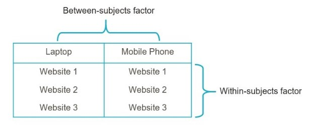
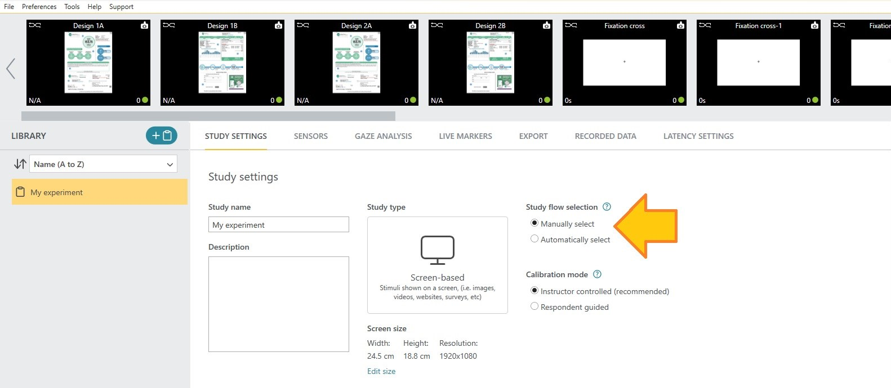
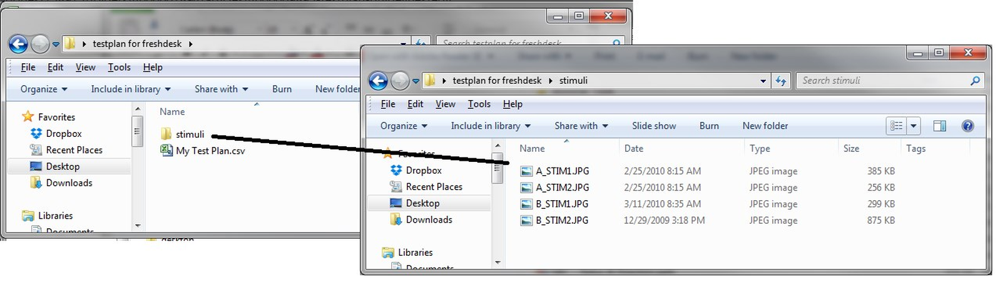
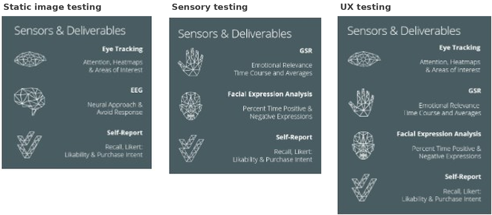
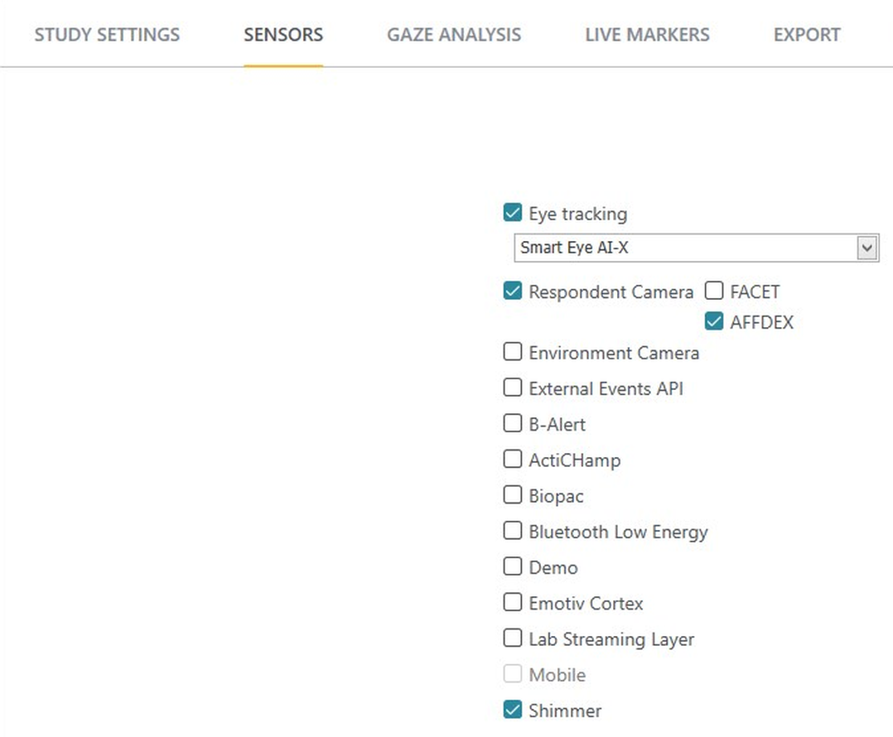
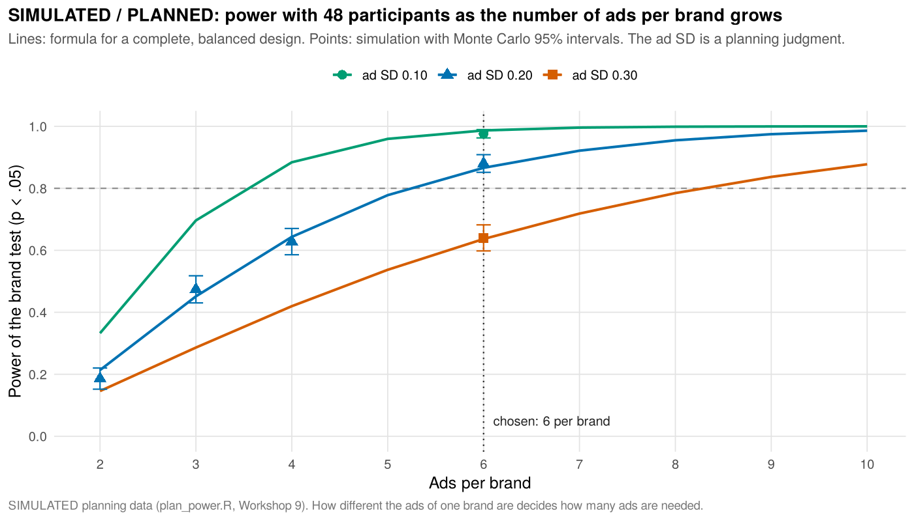
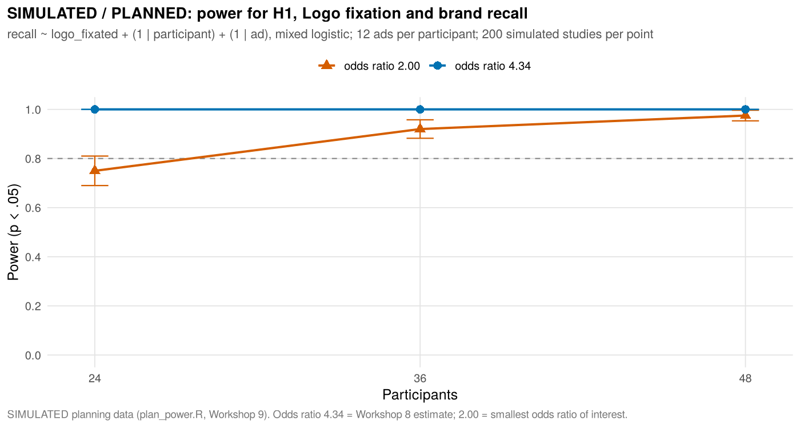
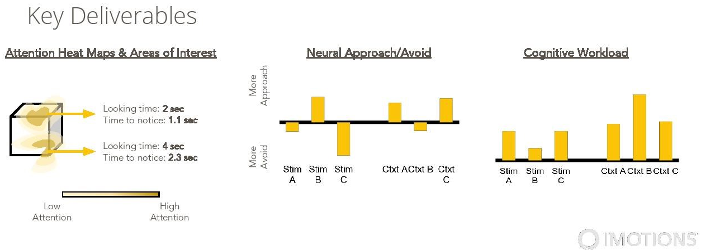

From question to study plan: design, sample size, consent, and the IRB for a biometric ad study
This last workshop starts before any data exist. A client asks, "Which of our ads should we run, and does the brand matter?" It ends with a complete study plan that the instructor, the IRB, and the lab can review before the first participant is contacted. Every section explains why before how.
Planning a study is a chain of decisions, and each one limits the next: the comparison that answers the question, the design that decides who sees what and in which order, the stimuli and sensors, the sample size with its justification, the counterbalancing, the exclusion rules and the analysis plan written before data, the informed consent form, the application to the Institutional Review Board (IRB), the session plan and staffing, and a pilot. The idea that holds them together: a study is designed backward from the decision it must support and forward from the lab's real capacity.
Workshop 9 also closes the loop of the series. Workshop 8 ended with a list of what the next study needs: more participants, several ads per brand, purchase intention asked separately for each brand, a smallest difference named in advance, and a plan fixed before data collection. Section 03 turns that list into a PLANNED follow up study for the fictional brands ALTAVO and BRENLOW, and the later sections build, justify, and staff it. All of its numbers are SIMULATED or PLANNED; no person was recorded. If you start here, section 03 recaps Workshops 7 and 8 on one page and the data folder holds every file. Read this workshop before you propose any study of your own in the lab.
You need this page and, for section 04, a lab computer with iMotions Lab 11.1. The statistics stay at the level of a first course, and section 07 offers an R route and an Excel route that assume no programming. Terms with a dotted underline open a definition when you tap them; help center links open after you sign in through my.imotions.com (start with Designing Your Research Study). Practice the iMotions steps in a new practice study that holds no participant data, never inside a lab study with recordings.
The lab procedure manual (section 2.1) requires an IRB application "for any study to be run in the lab" and IRB "approval (or exemption) before scheduling participants." JSU's IRB application form says the same from the other side: "Start date cannot predate IRB approval" (JSU IRB Application Form, read October 2026). In this workshop everything up to the IRB submission is planning on paper; recruitment, the pilot, and every session come after approval. JSU's pages and forms change, and the IRB office (irb@jsu.edu) is the authority; section 05 shows what JSU's own pages say. Nothing here is legal advice: the IRB decides.
![Passage of the iMotions article Designing Your Research Study: the sentence To carry out an effective study design, follow the below scheme and key considerations, the label Study Design, four yellow boxes joined by gray arrows reading Identify Key Business Questions, Design Experiment, Refine Specific Hypotheses, and Align Hypothesis with Deliverables, and step 1: First, identify the specific business question and how biosensor research can help to answer this question, with two bullets, determine the core of what your target client is trying to answer and avoid taking the objective from a research brief at face value, and think about what can be controlled, such as the number of stimuli or variables, or the environment, while recognizing that clients desire ecological validity](../assets/ws9/figures/design_study_design_scheme_step_one.png)
![The iMotions Operational Resources article: Sample templates, reports, and other operational resources to be used for testing, followed by five entries with one line each: Screener Template, screening questions for use during recruiting; Consent form template, inspiration only, available as an attachment at the bottom of the page; Self-Report Question Templates, standard survey questions for use in self-report testing; Cognitive Principles Guide, common cognitive principles for use during insights and report writing phase; and Sample Data Collection Scripts, an example of a study script you can get inspiration from](../assets/ws9/figures/lab_operational_resources_list.png)
From question to comparison
A client does not bring a research question; it brings a decision. The fictional ALTAVO brand team asks, "Which of our ads should we run, and does the brand matter?" The first half is about particular ads, the second about every ad the brand might run, and no single measurement answers either. "Better" can mean seen, felt, liked, or remembered, and "does the brand matter" needs a comparison in which the brand is the only systematic difference. The first job of planning is translation: from the decision to a research question, from the question to a comparison, and from the comparison to hypotheses written before any data exist.
The iMotions article Designing Your Research Study makes this its first step (figure in section 00): "Determine the core of what your target client is trying to answer and think about the business impact of what they are asking. In other words, dive deeper and avoid taking the objective from a research brief at face value." It also asks what can be controlled, "such as the number of stimuli or variables, or the environment," and reminds the researcher that "clients desire ecological validity for their research results": the study should resemble the real situation closely enough for the answer to matter.
From a decision to a research question
"A research question identifies your main problem or question you are aiming to answer and signals what type of study you need to conduct." The article's table (figure below) lists what separates a good research question from a bad one. A good one identifies the variables, is quantifiable and measurable, names the materials and the population, and asks what or how. A bad one is opinion based, too general, silent about materials or population, answerable with yes or no, or too simple to test. The client's "Which ad should we run?" fails on most counts, exactly like the table's "What kind of TV ad is the best?"
![Table with four columns, Good, Qualities, Bad, Qualities: good questions in green, What elements of a TV ad are associated most with experiencing positive emotions?, What is the impact of music on how consumers respond to my creative?, How does the amount of interactivity in an ad impact the emotional response that users have to that ad?, and How does the frequency of instructional elements appearing on-screen during a tutorial affect how players respond to the tutorial?, with the qualities identifies the variables, quantifiable and measurable, specific materials are indicated, specific populations are indicated, What/How question; bad questions in red, What kind of TV ad is the best?, Does music impact consumer response to my creative?, Is it good to have interactivity in an ad?, and Do instructional elements improve the response of users to tutorials?, with the qualities opinion based, too general, missing material specifications, missing population specifications, have Yes/No answer, too simple to test](../assets/ws1/figures/design_good_vs_bad_questions.png)
The lab's study type guide (Project doc 01) adds a one sentence test. A usable comparison names "who (the population), sees what (the stimuli and conditions), measured how (the sensor and metric), compared against what (the other condition, a baseline, or a benchmark)." For the follow up study it reads: adults (the age limit the IRB approves) see six ALTAVO and six BRENLOW video ads of 30 s, one participant at a time; each rates liking from 1 to 7 after every ad; and the ALTAVO ads are compared against the BRENLOW ads, with the ads treated as a sample of each brand's possible ads. The planning checklist turns that into one question, "Is ALTAVO advertising liked more than BRENLOW advertising, beyond the particular ads?", and adds the smallest difference that would matter: 0.50 points on the 1 to 7 scale (PLANNED, a decision of the fictional client). Naming that number before the data exist gives the sample size justification a target (Lakens, 2022), and section 07 builds on it.
One comparison, one difference
A comparison can answer a question only if the conditions differ in one respect. Anything else that changes with the condition is a confound, a rival explanation for any difference you find. Shadish, Cook, and Campbell treat such rival explanations as threats to internal validity; the classic remedies are to hold other variables constant and to let chance decide who gets which condition (Shadish et al., 2002).
The vendor's own example (figure below) asks about music. The good design uses "6 versions of same visual creative, with different music in each," because "By holding the visual creative constant, we isolate the effect of just music." The less optimal design uses "6 different ads, with different variations of music, visual style, and story," and the article names the flaw: "Changing multiple variables within the same test makes it impossible to isolate the effect of any one variable."
Workshops 7 and 8 had the less optimal shape. Ad_A (ALTAVO, a hiking scene) and Ad_B (BRENLOW, a cycling scene) differed in brand, scene, sport, and every detail of the execution at once. Workshop 8 found liking higher for Ad_A by 0.55 points, 95% CI [-0.13, 1.23] (SIMULATED), and its discussion said why even a clear difference would not have settled the brand question: "Only one ad per brand was tested, so any difference between the ads cannot be separated from the particular executions." If the client's question were whether the logo itself changes reactions, the cleanest comparison would hold one ad constant and swap the logo. The client's question is about each brand's advertising, so the follow up study takes the other road: it samples several ads per brand, so that differences between executions average out and their spread can be measured (section 02).
![Two worked designs for the question What is the impact of music on how consumers respond to my creative?: Example of a Good Study Design, in green, with 6 versions of same visual creative, with different music in each, each piece of creative tested with a separate group of respondents to prevent priming effects, and music ideally bucketed into categories, 3 examples of serious music and 3 of light or fun music, and the reasons, 6 examples is typically sufficient to control for creative effects, holding the visual creative constant isolates the effect of just music, and grouping music allows generalized insights about genres; Example of a Less-Optimal Study Design, in orange, with 6 different ads with different variations of music, visual style, and story, respondents exposed to multiple pieces of creative, and each piece of music from a different genre, and the reasons, changing multiple variables within the same test makes it impossible to isolate the effect of any one variable, exposure to multiple creatives is not problematic by itself, and one genre per piece does not control for genre or creative effects](../assets/ws1/figures/design_good_vs_less_optimal_design.png)
Variables: what the study changes and what it measures
"The changed or manipulated variables are the independent variables," and the outcome "that we want to measure" is the dependent variable (figure below). An independent variable is set by the design; a dependent variable is recorded in response. The article also sorts variables by how they are measured: a discrete variable can be counted ("number of children"), a continuous variable can take any value on a scale ("reaction time"), and the difference "has huge implications for designing the most appropriate study for your research question, and deciding on what statistical test to use."
![Passage headed Variables from Designing Your Research Study: the variables are the objects that will be manipulated and measured during the study; in the TV ad example narrative, duration, and color contrasts change across ads and are the independent variables, and experiencing positive emotions is the dependent variable measured in response; variables are discrete, such as number of children, which can be counted, or continuous, such as reaction time, measured on a continuous scale; and whether the independent and dependent variables are discrete or continuous has huge implications for designing the study and choosing the statistical test](../assets/ws9/figures/design_variables_independent_dependent.png)
The variables of the follow up study, from the model analysis plan (analysis_plan_prereg.md, section 4):
| Variable | Role | Kind | Measured for |
|---|---|---|---|
| Brand: ALTAVO or BRENLOW | Independent, manipulated within subjects | Discrete, 2 levels | Each ad |
| Ad: 12 ads, 6 per brand | Independent; a random factor nested in brand | Discrete, 12 levels | Each ad |
| Position: 1 to 12 | Counterbalanced; used only in checks | Discrete | Each participant and ad |
| Liking; purchase intention | Dependent (survey slide after each ad) | Ratings from 1 to 7 | Each participant and ad |
| Brand recall | Dependent (end questions) | Discrete: correct or not | Each participant and ad |
| Logo fixated; dwell on Logo, Product, Headline | Dependent (eye tracking, AOI Metrics export) | Yes or no; percent of the ad | Each participant and ad |
| Joy, Engagement, Brow Furrow | Dependent (AFFDEX) | Percent of time at or above a threshold | Each participant and ad |
| GSR peaks per minute | Dependent (skin conductance) | Continuous | Each participant and stimulus, Baseline included |
The last column carries a lesson from Workshop 8. A measure answers a comparison only if it is taken at the level of that comparison, the unit of analysis. Workshop 7 asked purchase intention once, after both ads, about reusable water bottles in general, so Workshop 8 could not compare the ads on it. The follow up study asks it after each ad.
Hypotheses before data
"A hypothesis is a testable answer to your research question. It includes the specific variables that are going to be tested." The article adds when to write it: "In scientific studies, hypotheses are generated before designing your study and collecting any data," which "prevents interpreting the results in line with your expectations, or confirmation bias" (figure below). Its third step gives the commercial reason: "Try to avoid conducting studies 'just to see what we can see'. Biometric measures are granular enough that you can almost always find some result, but without a specific business question, that result may just be found due to random chance." (The article then points to a section on the multiple comparisons problem that it does not contain; Workshop 8, sections 01 and 06, covers families of tests.)
![Passage headed Research Questions and Hypotheses from Designing Your Research Study: the first step to designing a study is to determine your research question, for instance What elements of a TV ad are associated most with experiencing positive emotions?; a hypothesis is a testable answer that includes the specific variables, for instance Narrative and auditory elements have the highest influence on brand liking and acceptance; in scientific studies hypotheses are generated before designing the study and collecting any data, so that running the study tests the theory's expectations and the results are not interpreted in line with expectations, or confirmation bias; studies in some commercial settings can be exploratory without fixed hypotheses, but should still watch out for confirmation bias; below a gray rule, footnote 1 defines confirmation bias as the tendency to perceive information in line with prior beliefs and expectations while ignoring or not accepting information that goes against them](../assets/ws9/figures/design_hypothesis_before_data.png)
The research literature says the same with evidence. Undisclosed flexibility in which measures, participants, and tests to report lets almost any data set produce a significant result (Simmons et al., 2011), and a plan written before the data separates prediction, which tests a hypothesis, from postdiction, which only suggests one (Nosek et al., 2018). The follow up study's hypotheses, all two tailed, are written in the model analysis plan:
- P1, primary: liking of the ads differs between the brands when ads are treated as a sample of each brand's possible ads. Smallest effect of interest: 0.50 points.
- S1 to S3, secondary family: purchase intention (S1), percent of time with Joy (S2), and GSR peaks per minute (S3) differ between the twelve ALTAVO and BRENLOW ads shown, with Holm's correction over the three.
- R1 to R3, replications of Workshop 7: brand recall is more likely when the Logo was fixated (R1, Workshop 7 H1); ads that produce more Joy in a participant are liked more by that participant (R2, H2); GSR peaks per minute are higher during the ads than during the Baseline (R3, H3).
The plan expects ALTAVO to be liked more, but only because Workshop 8 leaned that way with an interval that included zero, so the tests are two tailed and do not assume it. One naming warning: the model plan uses R both for these replication hypotheses and for its exclusion rules R1 to R3. This workshop always writes "replication R1" or "rule R1".
Aligning hypotheses with deliverables
The fourth step of the scheme: "align hypotheses with deliverables. Decide on the specific metrics you will use to answer each of your questions and which sensors are best to obtain the results you are looking for." Each hypothesis needs a measure, a modality or source, an export that holds the number, and a result the report will show. If a row cannot be filled, the hypothesis is not ready.
| Hypothesis | Measure | Sensor or source; export | The report shows |
|---|---|---|---|
| P1 | Liking after each ad | Survey slide after each ad | The brand difference in points with its 95% CI, the twelve ad means, and, if not significant, an equivalence test against plus or minus 0.50 |
| S1 | Purchase intention after each ad | Survey slide after each ad | Mean difference with 95% CI; dz with 95% CI; a Wilcoxon check |
| S2 | Percent of time with Joy (threshold 50, to be confirmed in the pilot) | AFFDEX on the respondent camera; FEA Metrics export (R notebook) | As S1 |
| S3 | GSR peaks per minute | Shimmer3 GSR+; GSR Peak Metrics export (R notebook) | As S1 |
| Replication R1 | Logo fixated; brand recall | Aurora, AOI Metrics export; end questions | Odds ratio with 95% CI |
| Replication R2 | Joy and liking | AFFDEX; survey slide | Slope per 10 points of Joy with 95% CI |
| Replication R3 | GSR during the ads and the Baseline | Shimmer3 GSR+; GSR Peak Metrics export | dz with 95% CI; a Wilcoxon check |
The table also shows what the study will not deliver. There is no row for EEG: the Enobio 8's channel map is not yet configured on the lab computer, so the vendor's "Neural Approach & Avoid Response" deliverable (section 03) is left out rather than promised.
Help center article for this section: Designing Your Research Study. Manual PDF on this site: Designing Your Research Study. Data files: planning_checklist.md (items 1 and 2) and analysis_plan_prereg.md (sections 1 and 4).
Translate a client's decision into a research question that names the population, materials, variables, and comparison; explain why a comparison must isolate one difference and why one ad per brand cannot answer a brand question; sort independent from dependent variables and say at what level each is measured; and write hypotheses before data and align each with a measure, a sensor, and a deliverable.Choosing the design
With the comparison fixed, the design decides who sees which conditions and in what order. Three choices follow, and each trades statistical power against session length and the risk of bias: between or within subjects, how the order of stimuli is handled, and how many stimuli represent each condition. The follow up study makes all three choices for reasons this section spells out.
Between, within, and mixed designs
The iMotions article defines the two basic designs (figure below). In a between subjects design, "the participants are assigned to only one of the independent variable's levels"; in a within subjects design, "all participants join all conditions of the study." One sentence of the article has the labels backward: it calls the case in which participants "test all three websites" ("the former") between subjects. The definitions that follow it are correct; learn those.
![Passage headed Between and Within subjects designs from Designing Your Research Study: two main categories of designs by how participants are allocated to conditions, illustrated with the usability of three websites; in between-subjects designs participants are assigned to only one level of the independent variable, in within-subjects designs all participants join all conditions in different orders; between-subjects sessions are shorter but need a higher sample size because every respondent joins only one condition; within-subjects studies typically cost less because fewer participants are needed and have less error from confounding variables such as personality and mood, with each individual serving as their control, but participants may become too tired and bored if too many conditions are tested, and this exposure fatigue may alter the results; a mixed design uses website type as a within-subjects factor and device, mobile versus laptop, as a between-subjects factor, with each participant randomly assigned to laptop or phone and testing all three websites on that device](../assets/ws9/figures/design_between_vs_within_tradeoffs.png)
The article states the trade off plainly. Between subjects: "the study sessions are shorter in duration. However, a higher sample size is needed, since every respondent will join only one condition." Within subjects: "typically cost less, since fewer participants are necessary," and "less error from confounding variables such as personality and mood, with each individual serving as their control," but "participants may become too tired and bored if you are testing too many conditions. This exposure fatigue may alter the results of your study."
"Each individual serving as their control" is the reason the follow up study is within subjects. In the Workshop 7 liking data, participants differed from one another with an SD of 0.80 points, and one person's ratings of different ads varied around that person's own level with an SD of 1.09 points (SIMULATED; planning values A2 and A3 in SIMULATED_planning_assumptions.csv). When each person rates both brands, the person's own level cancels in the comparison; when different people rate each brand, those person to person differences stay in the error. Greenwald weighed the same gain against its price, the context effects of within subjects designs: practice, sensitization to what is being compared, and carryover from one condition to the next (Greenwald, 1976). Charness, Gneezy, and Kuhn reach a similar balance for experiments in economics: within subjects designs buy power, between subjects designs avoid the risk that seeing several conditions changes how people respond to each (Charness et al., 2012).
A mixed design puts one factor between and another within (figure below). It fits when one factor cannot be undone: a participant who has used a phone cannot meet the websites fresh on a laptop, so the device goes between and the websites within.

Order effects, randomization, and counterbalancing
In a within subjects design, every participant meets the conditions in some order, and order can change the results. An order effect is any influence of the sequence on the responses. Two kinds matter here. A position effect depends on where in the session a stimulus falls: early items meet a fresh viewer, late ones a tired one, and the Cognitive Principles Guide notes that "object recall is greatest for the first and last items in an experience." A carryover effect depends on what came just before: "if A and B co-occur, they are learned together and B may take on some of the 'negative' aspects of A."
The iMotions article's answer is randomization (figure below): "If the order of stimuli is randomized for each participant, these effects would cancel each other out when results are aggregated. This procedure is called counterbalancing."
![Paragraph from Designing Your Research Study: one critical consideration when creating a study is randomization; in most testing scenarios the order of materials must be randomized because a participant testing multiple conditions might become familiar with the experiment, stimuli, or task, influencing the results based on the order of presentation; fatigue effects might also make the participant more distracted and tired toward the end of a session; if the order of stimuli is randomized for each participant, these effects would cancel each other out when results are aggregated, and this procedure is called counterbalancing](../assets/ws9/figures/design_randomization_counterbalancing.png)
The difference matters for a study of 48 people and 12 ads. With random orders, chance alone will put some ads early more often than others, and a brand whose ads happen to come first more often gains or loses from it. Counterbalancing in the strict sense removes that chance. A Latin square is a set of orders, one per row, in which every condition appears once in every position. A Williams design is a Latin square chosen so that every condition is also immediately followed by every other condition exactly once, which balances first order carryover as well. Brooks explains why an ordinary Latin square balances position but not which condition comes just before which, and how designs of this kind handle carryover (Brooks, 2012).
Read the square for four ads, A to D, the one that STEP 5 of plan_power.R builds and checks. Down each column (position) every ad appears once, so no ad is always first. Along the rows, the twelve neighbor pairs AB, BD, DC, BC, CA, AD, CD, DB, BA, DA, AC, and CB each occur once, so every ad follows every other ad exactly once. Give each row to the same number of participants, and position and first order carryover are spread evenly over the ads.
Row 2: B C A D
Row 3: C D B A
Row 4: D A C B
For 12 ads the square has 12 rows (SIMULATED_latin_square.csv), and 48 participants use each row 4 times (PLANNED).
Brands add one more requirement. In the follow up square the ads are labeled so that no row shows more than two ads of one brand in a row (brand pattern ABBA... or BAAB...), every position holds an ALTAVO ad in 6 of the 12 rows, and 24 participants start with each brand (PLANNED, plan_output.txt, STEP 5). Section 04 builds the order in iMotions and reproduces the square in Excel (section 4.6).
What iMotions offers for each design
The iMotions tools match these designs closely, though not by the same names. The Test Plan article shows four exposure orders (figure below): "Monadic Design," in which "each respondent will only be exposed to one stimulus," is a between subjects design; "Completely Randomised Design" is a random order per respondent; "Randomized Block Design" groups stimuli into blocks; and "Cell Design," in which one cell of people "tests Product A first and then Product B, while the other subsample (cell) tests the two products in reverse order," is the AB and BA counterbalancing of Workshops 7 and 8.
![Four exposure order designs from the iMotions Test Plan article, each with a small table of respondents and stimuli: Monadic Design, the study can contain any number of stimuli but each respondent will only be exposed to one stimulus, with RESP 1 STIM1, RESP 2 STIM2, RESP 3 STIM1, RESP 4 STIM2; Completely Randomised Design, randomly orders all the stimuli for each respondent, and the test plan allows for implementing any type of randomisation, with four respondents seeing STIM1 to STIM4 in different orders; Randomized Block Design, divides the group of stimuli into n homogeneous groups of size t called blocks, with stimuli randomly assigned to each block, shown with BLOCK-A and BLOCK-B; and Cell Design, in a paired comparison test one subsample or cell tests Product A first and then Product B while the other cell tests them in reverse order, Cell A (A first) and Cell B (B first)](../assets/ws1/figures/testplan_design_types.png)
The table maps each design to the tools of the Study Builder and the Test Plan, as the 2023 manuals describe them. A study flow is one version of a study's sequence ("Only one flow will be shown per respondent"); a Test Plan is a study created from a CSV file of respondents and their stimulus sequences. Whether every label below still reads the same in iMotions Lab 11.1 is on the Items to verify list (section 11); section 04 builds the follow up design step by step.
| Design | How iMotions builds it |
|---|---|
| Random order per participant (the article's "counterbalancing") | One study flow; the ads (or ad blocks) inside a block with "Display order" set to "Random"; instructions, Baseline, and survey pinned ("Fixed") |
| AB and BA ("Cell Design") | Two study flows with "Study flow selection" set to "Manually select" and an alternating schedule written in advance; or a Test Plan |
| Between subjects ("Monadic Design") | One study flow per condition, with "Manually select" and an allocation list prepared in advance, or "Automatically select" |
| Mixed | The between factor as study flows; the within factor as a randomized block inside each flow |
| Latin square or Williams design | A Test Plan with one row per respondent, or one study flow per row of the square |
Familiarity and other stimulus effects
Ads do not only follow each other; they also teach the viewer. The Cognitive Principles Guide (figure below) describes the mere exposure effect: "Even a single, brief exposure to a stimulus is enough for individuals to form an affective preference relative to an unfamiliar stimulus." In a session of 12 ads, a participant's fifth ALTAVO ad is not a first meeting with the brand, and liking may drift up with each exposure. The Williams order cannot stop that drift, but it makes sure it cannot favor one brand: across the rows both brands hold the same positions equally often and start equally often.
![Slide titled Familiarity Drives Preference from the iMotions Cognitive Principles Guide: people form preferences about people, products, and experiences from many sources, one of which is familiarity, so we are more likely to have a positive affective response to something we have been exposed to before, even if only briefly; the Mere Exposure Effect is well documented in behavioral psychology, and even a single, brief exposure to a stimulus is enough to form an affective preference relative to an unfamiliar stimulus; a line chart of Reported Preference over Number of Exposures rises steeply and then levels off](../assets/ws9/figures/cognitive_familiarity_drives_preference.png)
Other principles in the guide are rules for matching stimuli before collection. Familiar items show "improved recall" and novel items "improved recognition," so a familiar real brand and a new one differ before any ad plays; the two fictional brands of the worked example start level, but a client's real brands may not. The guide also notes that "information-heavy creative is less likely to connect emotionally with individuals," so an informational ALTAVO campaign against an emotional BRENLOW campaign would mix style with brand. Such differences are not mistakes if the client wants to compare the campaigns as they are, but the report must then say that the brands differ in style as well as name.
Stimuli are a sample too
Participants are a sample from a population of people, and every analysis in Workshops 7 and 8 treated them that way. The ads are a sample as well, from all the ads a brand could run, and a claim about a brand's advertising is a claim about that population. When a category is represented by one stimulus, every feature of that stimulus is tied to the category; stimulus sampling, several stimuli per category, is the remedy (Wells & Windschitl, 1999). The analysis must then treat the ads, like the participants, as a random factor (Judd et al., 2012), and the claim must not reach further than the variation the model includes (Yarkoni, 2022).
This has a surprising consequence for planning. When ads are random, the brand difference is judged against how much the ads of one brand differ from each other, and that spread is estimated from the ads, not from the people. Power then depends on the number of ads as well as the number of participants, and adding participants cannot make up for too few ads (Westfall et al., 2014). The planning simulation shows it (SIMULATED; a 0.50 point brand difference in liking, ads of one brand differing with an SD of 0.20 points, 500 simulated studies per cell): with 3 ads per brand, power was .474 at 48 participants and only .510 at 72; with 6 ads per brand it was .880 at 48. Section 07 shows the whole grid and how much the result depends on the assumed spread of the ads.
The vendor's good design used six examples too: "6 examples is typically sufficient to control for creative effects." The two sixes agree, but they are not the same kind of number. The vendor's six is a rule of thumb; the plan's six is the smallest of the numbers simulated (2, 3, 4, and 6 ads per brand) that reached .80 power in a simulation of the planned test under stated assumptions, and it would change if those assumptions did. Twelve ads also lengthen the session, the exposure fatigue the article warns about; the recording takes 15.7 minutes by the plan's arithmetic (PLANNED as 20), the Williams order spreads fatigue evenly over both brands, and the pilot measures the real length (section 09).
Help center articles for this section: Designing Your Research Study · Using a test plan for study design · Using the iMotions Study Builder. Manual PDFs on this site: Designing Your Research Study, Using a Test Plan for Study Design, Using the iMotions Study Builder, and Cognitive Principles Guide (no online article). Data files: SIMULATED_latin_square.csv and SIMULATED_power_grid.csv.
Choose between, within, and mixed designs and name what each costs; tell position from carryover effects; distinguish a random order from a counterbalanced one and say what a Latin square and a Williams design balance; map each design to the iMotions tool that builds it; and explain why a brand claim needs several ads per brand and why the number of ads limits power.The worked example
Everything in sections 01 and 02 fits on one page. Below are the story so far for readers who start here, what Workshop 8 asked the next study to do, the follow up study as a one page plan, the files that hold every decision, and where the plan departs from the vendor's template. Read it as a model for your own plan; section 10 turns it into a checklist.
No person was recorded and no participant was contacted. Every power value was computed from simulated data sets (plan_power.R, seed 20270208); every planning value comes from the SIMULATED study of Workshops 7 and 8 (seed 20271231) or is labeled a judgment; every date is a placeholder; participants and staff carry codes only (P01, R01, X01; S1 to S6). ALTAVO and BRENLOW are invented brands, and the ALTAVO brand team is a fictional client. The consent form in the data folder is a TEACHING MODEL: it must be replaced by the current JSU IRB template and approved by the IRB before any use. No number in this section may be quoted as a finding.
The story so far
Workshop 7 recorded a SIMULATED study. Twenty-four participants (P01 to P24) came to the lab one at a time and saw an instruction screen, a 60 s Baseline (a gray screen with a fixation cross), and two 30 s ads for reusable water bottles: Ad_A for ALTAVO, a hiking scene, and Ad_B for BRENLOW, a cycling scene. Odd participants saw the order AB and even participants BA, and a survey followed. A Smart Eye Aurora tracked gaze at 60 Hz on three AOIs per ad (Logo, Product, Headline), AFFDEX scored the face, and a Shimmer3 GSR+ recorded skin conductance. Three exclusion rules written before collection left 22 participants. Workshop 8 found that both ads raised GSR above the Baseline (dz = 0.83 and 0.95), that attention followed the same hierarchy in both ads, and that viewers who fixated the Logo were more likely to recall the brand (OR = 4.34). The ads did not differ detectably in liking (0.55 points, 95% CI [-0.13, 1.23]), recall, or arousal. The design could not have told: 22 paired observations detect only dz of 0.63 or more, and with one ad per brand any difference mixes brand and execution.
"To detect a moderate difference between two ads on a paired measure (d_z = 0.50) with 80 percent power, the next study needs at least 34 participants for a single test and 45 if three measures are corrected as a Holm family ... H1 needs about 72 independent observations ... The next study should also present several ads per brand so that brand effects can be separated from executions, ask purchase intention separately for each brand so that the ads can be compared on it, fix every question and its test in a preregistration before data collection (Nosek et al., 2018), and name in advance the smallest difference that would matter to the client, so that a null result can be tested for equivalence rather than left uninterpretable."
Each request has an answer in the plan (all PLANNED or SIMULATED):
| Workshop 8 asked for | The follow up plan |
|---|---|
| 34 participants, or 45 for a Holm family of three | 48 analyzed participants; STEP 1 of plan_power.R reproduces 34, 45, 90, and 120 exactly (largest difference 0) |
| About 72 independent observations for H1 | 12 observations per participant; simulated power for replication R1 at 48 participants is .975 for an odds ratio of 2.0 (mixed logistic model) |
| Several ads per brand | 6 per brand, 12 in all, ads a random factor |
| Purchase intention for each brand | Asked after each ad (S1) |
| A preregistration | analysis_plan_prereg.md, dated and frozen before the first participant |
| The smallest difference that matters | 0.50 points of liking; an equivalence test if P1 is not significant |
The plan on one page
- Client question
- Which of our ads should we run, and does the brand matter? The fictional ALTAVO brand team wants to know whether its advertising is liked more than BRENLOW's, beyond the two ads of Workshops 7 and 8.
- Research question
- Is ALTAVO advertising liked more than BRENLOW advertising, beyond the particular ads? Smallest difference that matters: 0.50 points on the 1 to 7 liking scale (a decision of the fictional client).
- Hypotheses
- P1, primary: liking differs between the brands, ads random. S1 to S3, secondary family with Holm over three: purchase intention, Joy, and GSR peaks per minute differ between the twelve ads shown. Replications R1 to R3: Workshop 7 H1 to H3. All two tailed.
- Design
- Lab experiment, within subjects: every participant sees every ad. Brand is a within subjects factor; ad is a random factor nested in brand; position (1 to 12) is counterbalanced.
- Stimuli
- Twelve 30 s video ads from the client, six per brand, each brand's six from one campaign, equal in length and resolution, with the same layout so that the Logo (top left), Product (center), and Headline (bottom) AOIs sit in the same place in every ad. Whether the client can supply six comparable ads per brand is on the Items to verify list (section 11).
- Sensors
- Smart Eye Aurora (60 Hz; one unit, so one participant at a time), AFFDEX on the respondent camera, and one Shimmer3 GSR+ on two fingers, recorded in iMotions Lab 11.1. Eye Tracking Screen based, AFFDEX, and Shimmer are on both license keys; confirm the modules on the computer used.
- Procedure
- Consent and screening (about 15 min), sensor setup and calibration (about 10 min), recording (about 20 min: instructions, the 60 s Baseline, the 12 ads in the participant's order, two questions after each ad, end questions), sensors off and debriefing (about 15 min).
- Measures
- Liking and purchase intention (1 to 7) after each ad; brand recall for each ad at the end; Logo fixated and dwell on the three AOIs; Joy, Engagement, and Brow Furrow, percent of time at or above the threshold; GSR peaks per minute during the Baseline and each ad; attitude toward reusable water bottles (three items); age and gender; data quality.
- Sample size
- 48 participants who meet the rules, 576 ratings of liking. Simulated power for P1 is .880 (Monte Carlo SE .015, the uncertainty of the simulation itself) for a 0.50 point brand difference if ads of one brand differ with an SD of 0.20 points, a judgment because no lab estimate exists; at an SD of 0.30, power falls to .640. Simulated Type I error of the planned test: .052. Forty-eight also covers the secondary family (45 at the strictest Holm step) and is a multiple of the 12 rows of the Williams design.
- Stopping rule
- Stop when 48 participants meet exclusion rules R1 and R2, or after 60 sessions, whichever comes first. 53 sessions are booked (48 main and 5 reserve) plus 2 open slots.
- Counterbalancing
- A Williams design for 12 ads: each ad once in every position, each ad immediately after every other ad once, at most two ads of one brand in a row. Participants P01 to P48 are assigned to rows in 4 blocks of 12; a reserve participant takes the row of the person replaced.
- Exclusion rules
- Rule R1: use only recordings the session log marks for use. Rule R2: exclude and replace a participant whose session ended before the last ad, or whose eye tracking quality is below 90 percent, or face quality below 80 percent, on 3 or more of the 12 ads. Rule R2b: for a kept participant, an ad below either threshold is missing for that sensor's measures. Rule R3: GSR for a stimulus is missing when the signal covers less than 80 percent of it.
- Analysis plan
- P1: a mixed model, liking ~ brand + (1 | participant) + (1 | ad), with the brand difference judged against the variation between ads. S1 to S3: paired t tests of each participant's ALTAVO minus BRENLOW mean, Holm over three. Replications: mixed logistic model (R1), mixed model (R2), paired t test (R3). Exploratory analyses E1 to E6, labeled as such in advance.
- Consent
- Adults only; about 60 minutes; says what each sensor records, that the face video identifies the person, where data are kept, who sees them, and for how long; optional permissions, with face clips shown only after a separate written release. The model form is a TEACHING MODEL that must be replaced by the current JSU template and approved by the IRB.
- IRB
- Approval or exemption before anyone is scheduled; the approval letter and approved consent form on file; the IRB number in the lab logbook; current CITI training for everyone who collects data; an amendment for any change, "even seemingly minor ones (such as adding a questionnaire)" (lab procedure manual, section 2.1). The review level is the IRB's decision (section 05).
- Sessions
- 60 minutes of participant time in 90 minute slots (the extra 30 minutes for backup, the session log, and cleaning), 5 slots per weekday, two trained staff per session, 55 slots on 11 weekdays. Placeholder dates: February 8 to 22, 2027, set only after IRB approval.
- Pilot
- Two sessions (codes X01 and X02) on a pilot day one week earlier (placeholder: February 1, 2027); the data are checked, not analyzed. Go if both finish within 60 minutes, the Aurora calibrates, eye tracking quality is at least 90 percent and face quality at least 80 percent on the pilot ads, GSR shows peaks, and every export opens in the planned pipeline.
- Deliverables
- The brand comparison P1 with its interval (and the equivalence test if it is not significant), the secondary family S1 to S3 for the client report, an ad by ad description (E4: mean and 95% CI of liking, purchase intention, Joy, and recall for each ad, without tests), and the replications.
The files
All files sit in the site's data folder; the README says what each is, how to run the script (about 9 minutes on one core, or about 2.5 minutes in its quick mode, whose numbers differ slightly), and which results look like errors but are not.
| File | What it holds | Section |
|---|---|---|
| plan_power.R; plan_output.txt | The planning script in STEP blocks 0 to 8 and its full console log; every number in the other files is copied from the log | 07 |
| SIMULATED_planning_assumptions.csv | Every planning value (A1 to A19) with its source file and line, or the label JUDGMENT or decision | 07 |
| SIMULATED_power_analytic.csv; SIMULATED_power_grid.csv; SIMULATED_power_checks.csv; SIMULATED_power_h1.csv | Paired sample sizes; power by participants and ads per brand; the checks C1 to C5; power for replication R1 | 07 |
| SIMULATED_latin_square.csv; SIMULATED_order_schedule.csv | The Williams design for 12 ads; the order of the ads for every code (pilot X01 and X02, main P01 to P48, reserve R01 to R05) | 04, 07 |
| SIMULATED_session_schedule.csv | One row per slot: date, times, participant code, Latin square row, staff codes | 09 |
| analysis_plan_prereg.md | The preregistration style analysis plan: hypotheses, design, sampling and stopping rule, variables, models, exclusion rules | 08 |
| consent_form_model.md | A TEACHING MODEL consent form, a model assent paragraph, and a note on parental permission; not approved and never for participants: a real study replaces it with the current JSU IRB template, approved by the IRB | 05 |
| planning_checklist.md | 18 planning items from the question to go or no go, each with what "done" looks like | 10 |
| SIMULATED_planning.xlsx; excel_walkthrough.md | The Excel route: sample size, attrition, the Latin square, the assignment, the calendar, and a check sheet | 04, 07 |
What carries over from earlier workshops
- From Workshop 7: the planning values for liking (participant SD 0.80, residual SD 1.09), the exclusion rate (2 of 24), the 90 minute slots (the median gap between session starts was 91 minutes), the measures and AOIs, rules R1 to R3 adapted to twelve ads, and the session log columns.
- From Workshop 8: the paired sample sizes, reproduced exactly as a continuity check; the planning values for replication R1 (recall .35 when the Logo is not fixated; odds ratio 4.34); and the requests in the box above.
- From Workshop 6: remote studies lose far more people. Of 260 who opened the link, 142 were kept, so the same 48 analyzable participants would need about 88 link openers; one more reason to run the follow up in the lab.
Where the plan departs from the vendor template
The vendor's TV and Digital Ad Testing template (figure below) lists the objective this study serves, "Understand which, of multiple, creatives may perform best in-market," and two sample specifications the plan does not follow. "N = 30 per cell" is a recruiting convention, not a power analysis; the plan's 48 comes from a simulation of the planned test. "Up to 3 videos per person" is exceeded on purpose: showing each participant twelve ads is what gives the brand test its power (section 02). The plan pays for it with a longer recording (15.7 minutes computed, 20 planned), balances fatigue and familiarity across brands with the Williams order, checks position as an exploratory analysis, and lets the pilot measure the real length. "100% right-handed (for EEG)" does not apply, because the study records no EEG.
![Upper half of the iMotions Study Template TV & Digital Ad Testing: over a photo of a viewer seen from behind watching a television, Potential Business Objectives (identify ads, or moments within ads, that connect emotionally with consumers; evaluate ad creative iteratively at multiple stages; understand which, of multiple, creatives may perform best in-market; determine the impact of creative elements such as music and characters); below, Modalities (Galvanic Skin Response (GSR), Electroencephalography (EEG), Eye Tracking (ET), Facial Expression Analysis (FEA), Self Report) and Sample Specs (N = 30 per cell; up to 3 videos per person, up to 9 masking videos; gen pop or targeted recruit; 100% right-handed for EEG; gender split based on target demographics)](../assets/ws8/figures/method_tv_ad_testing_objectives_sample.png)
![Left, the heading Standard Methodologies and the entry Video Content Testing, used for TV and digital ads, long-form videos, and simulated environments, with five sample business questions: identify videos, or moments within videos, that connect emotionally with consumers; evaluate video creative iteratively at multiple stages; understand which, of multiple, creatives may perform best in-market; determine the impact of creative elements such as music and characters; and analyze the emotional journey viewers experience, at an aggregate level, on a moment to moment basis; right, a dark panel titled Sensors and Deliverables with wireframe icons: Eye Tracking, Attention, Heatmaps and Areas of Interest; Facial Expression Analysis, Percent Time Positive and Negative Expressions; GSR, Emotional Relevance, Time Course and Averages; EEG, Neural Approach and Avoid Response; Self-Report, Recall, Likert: Likability and Purchase Intent](../assets/ws9/figures/design_video_content_testing_panel.png)
Twelve ads raise one more question that the model plan does not yet answer: are the ads alike in pacing? The Cognitive Principles Guide (figure below) warns that cuts "under one second" tax the viewer and often reduce emotional response. If one brand's campaign is cut faster than the other's, a brand difference in Joy or GSR could be a difference in editing. A reviewer could reasonably ask the team to compare the pacing of the twelve ads before the IRB submission, or to describe it in the report.
![Slide titled Rapid Video Cuts Are Cognitively Taxing from the iMotions Cognitive Principles Guide: pacing, the time between scenes or shots, is critical to how viewers experience content; very rapid cuts, under one second, can require additional cognitive resources to process the video and often reduce the emotional response; rapid cuts are frequently associated with increased central visual bias, so important information may be missed; a drawing of Emotional Arousal (GSR) over Time falls while six shots appear under Rapid Pacing and rises while three shots appear under Slower Pacing](../assets/ws9/figures/cognitive_rapid_video_cuts.png)
The stopping rule, in plain words
A stopping rule says in advance when data collection ends. The follow up study's rule (analysis_plan_prereg.md, section 3.5): "Data collection stops when 48 participants meet rules R1 and R2 ... or after 60 sessions (25 percent above the target), whichever comes first." The booking follows from the Workshop 7 exclusion rate: 48 / (1 - 0.083) = 52.36, so 53 sessions, 48 main and 5 reserve (PLANNED), with 2 open slots for no shows. An excluded participant is replaced by the next reserve code, who takes the same Latin square row, so the balance of the design survives. "Outcome variables are not analyzed before the stopping rule is met; only the quality checks of rules R1 to R3 are run after each session," and if more than 3 participants of a block of 12 fail rule R2, collection pauses to look for a procedural cause. The reason is the one from section 01: deciding when to stop after looking at the results is one more undisclosed choice that can make a chance difference look real (Simmons et al., 2011).
Help center articles for this section: Standard Methodologies: TV and Digital Ad Testing · Designing Your Research Study. Manual PDFs on this site: Standard Methodologies: TV and Digital Ad Testing, Designing Your Research Study, and Cognitive Principles Guide. Data files: README.md and the files in the table above; the Workshop 8 paragraph quoted above is in results_text.md.
Recap Workshops 7 and 8 and what Workshop 8 asked for, read the follow up study's one page plan, find the file behind every planning decision, say what carries over from earlier workshops, explain where and why the plan departs from the vendor's template, and state the stopping rule.Building the design in iMotions
The plan of section 03 gives each of the 48 participants one row of a Williams design, a prescribed order of the 12 ads (PLANNED). iMotions has to show each person exactly that order, keep a record of which order it was, and use the same name for each ad from the first session to the last export. This section shows the tools that iMotions Lab offers for ordering stimuli, which tool delivers which design, and what must be settled before the first recording, because some choices cannot be changed afterward. The labels come from the help center articles Using the iMotions Study Builder and Using a Test Plan for Study Design, whose screenshots show iMotions 10 and older releases; the lab runs iMotions Lab 11.1, so every label is also on the Items to verify list in section 11.
The worked example is PLANNED: no iMotions study of it exists yet. Build and test the steps below in a practice study, such as PRACTICE_follow_up, and never record a participant in it. No participant is contacted until the IRB has approved the study or declared it exempt (lab procedure manual, section 2.1; section 05).
| Design | What it balances | How iMotions builds it |
|---|---|---|
| A new random order for each participant (what the Designing article calls counterbalancing) | Order effects, on average over many participants | One study flow; the ads inside a block with Display order Random; instructions, Baseline, and end questions Fixed |
| A few prescribed orders, such as AB and BA (the test plan article's "Cell Design") | Each order used equally often | One study flow per order (Duplicate flow, then reorder) with Study flow selection set to Manually select and a schedule written in advance; or a test plan |
| Different people see different conditions ("Monadic Design") | Groups formed by random assignment | One flow per condition, with Manually select and an allocation list made in advance, or Automatically select |
| A Latin square or a Williams design: a prescribed order for every person | Every ad in every position equally often; in a Williams design also every ad after every other ad | A test plan (a CSV file), or one study flow per row of the square with Manually select |
Sources: Designing Your Research Study, Using a Test Plan for Study Design, and Using the iMotions Study Builder. The right column is our reading of what the three articles allow; the pilot confirms it on the lab computer.
4.1 Name every stimulus before collection
Why. "While designing your experiment in iMotions, it is critical that you properly name anything and everything that will show up in your exports" (Data Handling). The stimulus names become the stimulus column of every export (Workshop 7), and the analysis joins them, letter for letter, to the rows of SIMULATED_order_schedule.csv and SIMULATED_latin_square.csv. The article also says when: "You can change the name of your stimuli within iMotions before you begin data collection."
- Use the codes of the plan. Name the twelve ads ALTAVO_1 to ALTAVO_6 and BRENLOW_1 to BRENLOW_6, exactly as in the order schedule, and give every block, survey, question, and answer a name a reader understands, such as Rating_ALTAVO_1. You should see the same twelve names in the Study builder, in the Latin square file, and on the client's list of ads.
- Plain characters only. The test plan article asks for "plain characters" in respondent names, without characters such as \ - ' @, and warns against leading or trailing spaces in stimulus names. Common mistake. "ALTAVO_1 " with a trailing space looks right on screen and fails every join, the problem that Workshop 7 found in respondent names.
- Settle the names before the first recording. "Renaming a stimulus or changing its properties will change this stimulus on all other flows where it is used, too" (Using the iMotions Study Builder).
![Passage of the Data Handling article under the headings Organizing your data and Setting up your experiment: organization starts before the experiment; name anything and everything that will show up in the exports, starting with the stimuli; in a test of 6 package designs a file named IMG4567 is hard to trace while a name such as Competitor package, V2 is easy; stimuli can be renamed in iMotions before data collection; the same naming conventions apply to stimuli blocks, runnable slideshows, survey questions, survey answers, and the study itself](../assets/ws9/figures/data_name_stimuli_before_collection.png)
4.2 Create the study, and check the sensors and licenses
Why. The study type and the screen are set when the study is created, and some study types exist only with the matching license module: "It is possible that you do not see all these study types because some of them require you have purchased the respective module." The follow up study is screen based with the Smart Eye Aurora, AFFDEX, and a Shimmer3 GSR+, which both lab license keys include (Project doc 00); a study with the Neon glasses or Automated AOI would need the computer that holds key 0001.
- Add the study. Click "Add New Study" or press Ctrl+N. You should see the window "Create a new study", "What kind of study are you planning to do?", with tiles such as "Screen-based" and "Test Plan" ("Study created from a test plan"). Choose Screen-based for sections 4.3 and 4.4, and Test Plan for section 4.5. Whether the Test Plan tile appears on both lab computers is an item to verify.
- Describe the screen. iMotions "must know the physical size of your display in order to correctly calculate gaze angles from the raw eye tracking data". Measure the width and height "with a measuring tape (in centimeters)", check the resolution, and save the screen under a name. Common mistake. Accepting a detected size: "A screen with 1920 × 1080 px resolution scaling at 125% will be discovered as having a 1536 × 864 px resolution." If the stimulus monitor or its Windows scale changes later, set the screen chain again before recording (Workshop 2, section 4.5; lab guide Setting Up the Stimulus Screen).
- Choose the sensors and name the study. Sensors that are enabled in Global Settings are ticked automatically; on the SENSORS tab, tick Eye tracking, Respondent Camera with AFFDEX, and Shimmer (section 06 shows the tab). You should see the study in the LIBRARY with the tabs STUDY SETTINGS, SENSORS, GAZE ANALYSIS, LIVE MARKERS, EXPORT, RECORDED DATA, and LATENCY SETTINGS.
4.3 Random order inside one flow: blocks and Display order
Why. "Blocks allow you to group stimuli and build a more complex experiment structure, making sure that certain stimuli always follow after each other." Each ad must be followed by its two questions, so each ad and its questions form a block, as in the vendor's own example, where Design 1A Block holds a Fixation cross, the image Design 1A, and the Energy consumption rating. The property Display order, "Random" or "Fixed", decides whether an item keeps its place: "The pin icon means that this stimulus has a fixed position in the study flow"; "The arrow icon means that this stimulus is randomized".
- Open the Study builder. Select the study and click "Edit stimuli". You should see the tabs FLOW DESIGNER and STIMULI OVERVIEW, the tiles "Block", "Media", "Survey", "Screen recording", "Website", and "Qualtrics" (JSU has no Qualtrics license), and the drop zone "Drag stimuli and files here".
- Make one block per ad. Drag in the fixation cross, the ad, and its rating survey, multiselect them, and press Ctrl+G (or use the right-click menu). Because "it is not possible to have the same stimulus twice in the same flow", each ad needs its own copy of the rating survey and the fixation cross: duplicate them with Ctrl+D or Duplicate in the right-click menu, and rename each rating survey after its ad.
- Set Display order. In Properties, set the instructions, the Baseline, and the end questions to Fixed; set each of the 12 ad blocks, and the block that holds them, to Random, as in the vendor's nested example; and set the items inside each ad block to Fixed. You should see pins and arrows as in the figures; "Expand all blocks" shows the whole structure, and "Preview flow" plays it. Common mistake. Random on the wrong level: "Setting Display order to Random will randomize the presentation order within the block" (Creating RDC Studies). How nested random blocks combine in 11.1 is an item to verify.

![Flow Designer with the FLOW DESIGNER and STIMULI OVERVIEW tabs, Preview flow, and Expand all blocks; the survey Welcome is selected and its Properties panel shows Preview and Edit survey buttons, Name Welcome, Display order Random or Fixed with Fixed selected, Advance Manual or Automatic with Manual selected, Duration 00:50:00:000, Record web cam checked, and Track mouse; the flow My experiment, Main experiment holds Welcome, the block Version A with the randomize icon, Pause, the block Version B with the randomize icon, and Thank you](../assets/ws1/figures/studybuilder_flow_designer_properties.png)
What Random cannot do. Random draws a new order for each participant. Over 48 participants, some ads will happen to come first more often than others, some pairs of ads will follow each other several times and others never, and nothing stops five ALTAVO ads from playing in a row. A random order balances order effects only on average, which is what the Designing article calls counterbalancing. A Latin square balances the position of each ad exactly, and a Williams design also balances carryover, what one ad does to the response to the next (Brooks, 2012). For the follow up study, Random is a fallback, not the plan.
4.4 One flow per order: study flows and Study flow selection
Why. "A study flow defines the order of your stimuli. You can create variations of your study by adding additional flows. Only one flow will be shown per respondent." Flows were designed for between subjects A/B tests, but a study flow in which every item is Fixed is simply one prescribed order, so twelve flows can hold the twelve rows of the Williams design. The flows share their stimuli, and "While stimulus properties are shared across flows, the stimulus order (including the randomization property) is unique to a flow."
- Build row 1. Arrange the ad blocks in the order of row 1 of the Latin square file, all Fixed, and name the flow Row01.
- Duplicate and reorder. In the "Study flows" panel use "Duplicate flow", rename the copy Row02, and drag the ad blocks into the order of row 2; repeat up to Row12. You should see 12 flows, and in the "Repository" ("The repository lets you access and reuse stimuli across study flows") each stimulus once.
- Let the operator choose. On STUDY SETTINGS set "Study flow selection" to "Manually select": "The experimenter can manually select a flow at the start of a recording". The operator reads the row from SIMULATED_session_schedule.csv and writes the flow chosen into the session log. Where 11.1 asks for the flow when a recording starts is an item to verify.
Common mistake. Choosing "Automatically select", with which "a respondent can be randomized into a flow automatically selected by iMotions". The article does not say that the flows are then used equally often, so it cannot guarantee four uses of each row. With Manually select the risk is a wrong pick, which the session log and the analysis catch, because an analysis can segment respondents by flow (Workshop 8). Flows have two practical advantages: a reserve participant can be added at any time and given the row of the person replaced, and the study can be cloned for the pilot.

4.5 The exact order for each person: a test plan
Why. "Test plans allow you to implement special types of study designs (i.e. a special type of randomization)." A test plan is "A CSV file containing the respondents and stimuli sequences" plus "A Stimuli folder containing any files representing stimuli". The order lives in a file written in advance, not in the operator's hands.
- Write the CSV. Start from the order schedule, delete its banner line, and keep one line per respondent: NAME, GENDER, AGE, CITY, then the stimulus files in that respondent's order. "NAME, GENDER, AGE, CITY are required fields", "Gender values can be either F or M", and "Age values can be between 1 and 99". Put the participant code in NAME and placeholder values in the other three, as the vendor example does ("F", "1", "NA"), and ask age and gender in a survey slide; the file then holds no identifying data and forces no one into a binary answer. "A stimulus name can only be referenced once for each respondent." Save as "CSV (Comma delimited) (*.csv)" and close Excel.
- Prepare the Stimuli folder. Place a folder named "Stimuli" next to the CSV, holding every file the plan names: "A Test Plan can not reference files that are not present in the 'Stimuli' folder", and the folder "must NOT be empty".
- Import. Press Ctrl+N, choose Test Plan, click "Browse" to select the CSV, and click Next. You should see "Check below that the stimuli and respondents are correct", with the counts of stimuli and respondents, and then the choice of sensors. The import window warns: "Note that once a test plan study has been imported, it cannot be changed in iMotions."

Common mistake. Leaving people out of the file: "It is not possible to add more respondents after you started recording your study with a testplan." The pilot cannot be a copy either, because cloning is "not applicable for studies that include a Test Plan", so the two pilot sessions (X01 and X02) are a separate import of a small pilot CSV. The reserve participants raise a puzzle: each one takes the row of the participant replaced, which nobody knows in advance. One solution to try in the pilot is twelve spare lines, one per row of the square, under recording names such as SPARE_ROW01; the session log records which reserve code used which spare line, just as the Workshop 7 log linked recording names to participant codes. Unused lines can be removed at the end, since "it is possible to delete respondents when using a testplan, at any given time", which "will not change the content of the CSV-file". Whether properties such as the duration stay editable after import, while the order is locked, is an item to verify.
![Grid titled PLANNED: Williams design for 12 ads, A1 to A6 = ALTAVO, B1 to B6 = BRENLOW, with rows 1 to 12 down the side and positions 1 to 12 across the top; each cell is blue for ALTAVO or vermilion for BRENLOW and labeled with the ad; row 1 reads A1, B1, B6, A2, A6, B2, B5, A3, A5, B3, B4, A4, and row 2 reads B1, A2, A1, B2, B6, A3, A6, B3, B5, A4, A5, B4; odd rows follow the brand pattern ABBAABBAABBA and even rows BAABBAABBAAB, so no row shows more than two ads of one brand in a row; the subtitle says that each ad appears once in every row and every position, that each ad follows every other ad exactly once, and that with 48 participants each row is used 4 times](../assets/ws9/data-figures/SIMULATED_fig4_williams_square.png)
4.6 The square in Excel, and the last checks
The LatinSquare sheet of SIMULATED_planning.xlsx builds the same square with formulas (excel_walkthrough.md, section 4). Type the positions 1 to 12 in LatinSquare!C5:N5 and the row numbers 1 to 12 in B8:B19, fill the symbol formula over C8:N19 and the label formula over C22:N33.
| Result | Cell | Formula | PLANNED value |
|---|---|---|---|
| Row 1, position 1 | LatinSquare!C6 | =IF(C$5=1,0,IF(MOD(C$5,2)=0,C$5/2,$B$3-(C$5-1)/2)) | 0 (row 1: 0, 1, 11, 2, 10, 3, 9, 4, 8, 5, 7, 6) |
| Row r: add r - 1 and wrap at 12 | LatinSquare!C8 | =MOD(C$6+$B8-1,$B$3) | per cell |
| Ad label (even symbol ALTAVO, odd BRENLOW) | LatinSquare!C22 | =IF(MOD(C8,2)=0,"ALTAVO_"&(C8/2+1),"BRENLOW_"&((C8+1)/2)) | ALTAVO_1 |
| Sum of all ordered pair counts | LatinSquare!C85 | =SUM(C72:N83) | 132 |
| Diagonal (an ad after itself) | LatinSquare!C86 | =C72+D73+...+N83 | 0 |
| Largest pair count | LatinSquare!C87 | =MAX(C72:N83) | 1 |
| Labels that differ from the R square | LatinSquare!C107 | =SUMPRODUCT(--(C22:N33<>C94:N105)) | 0 |
With 132 adjacent pairs in all, none on the diagonal and no count above 1, each of the 132 ordered pairs of different ads occurs exactly once. Common mistake. Using "a plain cyclic Latin square (1 2 3 ... 12, then 2 3 ... 12 1)", which "is balanced for position but not for carryover: ad 2 then always follows ad 1."
Before the first participant. Run the pilot (section 09) on the finished build and check that each recording shows the order of its row. Then protect the build: "The Lock/unlock functions removes any option of changing Studies, Stimuli or Respondent settings", which the article recommends when "multiple people" use one lab computer (the 11.1 label of the button is an item to verify), and keep a backup made with Save To File. Once the IRB has approved the study, a change to the stimuli or the questions is an amendment (section 05).
Help center articles for this section: Using the iMotions Study Builder, Using a test plan for study design, Clone, Save, and Import iMotions Studies, Locking and Unlocking Studies, Creating RDC Studies, and Designing Your Research Study; Data Handling is a local PDF only. Manual PDFs on this site: Using the iMotions Study Builder, Using a Test Plan for Study Design, and Data Handling (PDF). Data files: SIMULATED_order_schedule.csv, SIMULATED_latin_square.csv, SIMULATED_session_schedule.csv, SIMULATED_planning.xlsx, and excel_walkthrough.md.
Consent, the IRB, and recruitment
A biometric ad study records people: where their eyes go, how their skin responds, and a video of their face. Three things must be in place before anyone is recruited: a decision of the Institutional Review Board (IRB), a consent form that says exactly what is recorded, stored, and shared, and a recruitment plan that leaves people free to say no. The lab procedure manual makes the first a rule: "All research conducted in the Consumer Behavior Lab must have prior approval from the Jacksonville State University Institutional Review Board (IRB)", obtained "(or exemption) before scheduling participants" (section 2.1). This section covers the principles, the contents of a consent form for biometric research, minors, the JSU process, and recruitment.
This section explains rules; it does not apply them to your study. The JSU IRB decides the review level, the forms, and the wording. The JSU pages quoted here were read in October 2026, and pages and forms change: check the current pages, and ask the IRB office (irb@jsu.edu) whenever something is unclear. Where JSU documents disagree, this section says so; confirm with the IRB office.
5.1 Why: three principles
The Belmont Report of April 18, 1979 names "three basic principles": "respect of persons, beneficence and justice" (National Commission for the Protection of Human Subjects of Biomedical and Behavioral Research, 1979); read it on the HHS Belmont Report page. Respect for persons means that "individuals should be treated as autonomous agents"; beneficence means "(1) do not harm and (2) maximize possible benefits and minimize possible harms"; justice asks who should bear the burdens of research. Consent has "three elements: information, comprehension and voluntariness", and two things undermine voluntariness: coercion, "an overt threat of harm", and undue influence, "an offer of an excessive, unwarranted, inappropriate or improper reward". In an ad study, respect means telling people about the face video before they agree, beneficence means keeping skin, eye, and privacy risks small, and justice means not choosing participants "solely for administrative convenience", such as the students of your own class (section 5.7).
5.2 The elements of informed consent
Why. The federal rules for human research, 45 CFR 46 (Protection of Human Subjects, 2018), say what informed consent must contain, and JSU applies the regulations "to all research and research-related activities that involve human subjects" (JSU IRB page, read October 2026). The eCFR text of 45 CFR 46.116 asks for "language understandable to the subject" and for a start with key information: "Informed consent must begin with a concise and focused presentation of the key information that is most likely to assist a prospective subject or legally authorized representative in understanding the reasons why one might or might not want to participate in the research." The basic elements, condensed (the OHRP page Basic Elements of Informed Consent explains them), with the part of the TEACHING MODEL consent form of section 5.4 that covers each; the model must be replaced by the current JSU IRB template and approved by the IRB before any use:
| Basic element, 46.116(b) | Where the teaching model covers it |
|---|---|
| (1) That the study is research; its purpose, duration, and procedures | Key facts; parts 1 and 2 |
| (2) Reasonably foreseeable risks or discomforts | Part 5 |
| (3) Benefits to the subject or to others | Part 6 |
| (4) Alternative procedures, if any | Usually none in an ad study; a course credit alternative sits in the brackets of part 9 |
| (5) How confidentiality of identifying records is kept | Parts 7 and 8 |
| (6) Compensation and treatment for injury | Required "For research involving more than minimal risk" |
| (7) Whom to contact about the research, rights, and injury | Part 11 |
| (8) Voluntary; no penalty; may stop at any time | Key facts; part 9 |
| (9) Whether de-identified information may be used in future research | Part 10, option C, and part 8 |
Under 46.117, consent is documented "by the use of a written informed consent form approved by the IRB", and "A written copy shall be given to the person signing". The APA Ethics Code requires consent before voices or images are recorded for data collection (Standard 8.03) (American Psychological Association, 2017), and the NMSBA Code of Ethics asks researchers to "explain the tools they use to participants in layman terms" and never to reveal a participant's identity "to the client without explicit consent" (Neuromarketing Science & Business Association, n.d.). A form alone does not ensure understanding: in a systematic review, more time talking one to one with a member of the study team improved understanding more consistently than changes to the written form (Flory & Emanuel, 2004), and the lab procedure manual likewise asks you to "Answer all questions the participant has before proceeding" (section 2.2).
5.3 Face video is identifiable data
Why. The iMotions consent FAQ lists what "you must be able to document that you informed the respondent about": the purpose, that participation is voluntary, the respondent's rights, how the data are handled, and the possible risks (figure below). AFFDEX scores expressions from a video of the face, and a face identifies a person whatever code is on the file, so the video is identifiable data. The lab's rule: "Facial video is identifiable data: say so in the consent form, store it under the retention rules, and never publish a participant's face without written release" (Project doc 01). JSU's application asks the same of any study that records video: "clearly indicate if the information is identifiable and what steps will be taken to protect the confidentiality of the participants" (IRB Application Form, section 4, read October 2026).
![Passage of the Respondent informed consent and data privacy FAQ: many countries require that data be collected only from a person who agrees and is informed about the purpose and about how the data will be stored and processed; iMotions cannot give consultancy on the laws of each country; the list of what you must be able to document that you informed the respondent about, namely the purpose of the study, that participation is voluntary, their rights when participating in the study, how you will handle the data collected in the study, and possible risks; a signed consent form, with the study information shared at recruitment and re-read before signing on the day of data collection; an example consent form for European Union law attached to the help center article; and, for cloud powered products, a declaration of where data will be stored and processed](../assets/ws9/figures/consent_inform_respondent_about.png)
- List what is recorded before writing a word: gaze data, the face video, any sound, the screen, the survey answers, with where each is stored, who can see it, and when it is deleted. With iMotions Lab "all data will be stored locally on your PC", which must be protected "with a password and encryption"; with a cloud product "you will also need to declare to the respondent where their data will be stored and processed". The respondent camera settings on the lab computer include an "Include Audio" option; decide for each study whether sound is needed, because "the voice can identify the respondent" (Items to verify).
- Write the form from that list. The consent text must match exactly what is recorded, stored, and shared. You should see every item of the list in the form, and nothing in the form that the study does not do. A later change in what is recorded, uploaded, or kept is an amendment (section 5.6).
- Say "coded", not "anonymous". Common mistake. Promising anonymity, as the Designing article does ("will be anonymized"), while the FAQ advises blurring or removing camera recordings only after the analysis. While a face video or the key that links codes to names exists, the data are coded, not anonymous; write "coded" or "confidential" and state when the video is deleted.
![Passage of the FAQ: it is your responsibility to correctly inform and instruct the respondent, to follow the rules of your country, and to implement processes for correct data handling such as anonymization, deletion of data that is no longer needed, and storing documentation; then Data privacy FAQ: What data can or will iMotions store?, personal data kept until the user deletes them, which may include photos and videos of respondents' faces and submitted survey answers; and Where does iMotions store my data?, with the Desktop software all data are stored locally on your PC, which must be protected with a password and encryption, exports and backups only to safe devices or services, and cloud powered products on servers operated by Amazon Web Services, Microsoft Azure, and Google Cloud Platform under Data Processor Agreements](../assets/ws9/figures/consent_responsibility_and_data_storage.png)
![Passage of the FAQ: Who is responsible in the event of a data breach?, the Data Controller, usually the person or organization who requests the data collection and owns the data, with iMotions acting as a Data Processor; and How do I anonymize my study?, use anonymous IDs as respondent names; if the stimulus or a screen or camera recording can identify the respondent, blur the video files in the Capture folder with video editing software after all videos are post processed and the analysis is complete; avoid microphone recordings unless needed because the voice can identify the respondent; and when saving a study to a zip file, exclude respondent and environment camera recordings](../assets/ws9/figures/consent_breach_and_anonymize_study.png)
![Informed Consent section of Designing Your Research Study: participants must be informed before they begin about the general purpose of the research, the modalities used, and any risk, without priming or critical information that may introduce bias; they learn how their personal data will be stored and processed, the legal basis, their rights, and that results will be anonymized; participation is voluntary and consent can be withdrawn at any time, orally, in writing, or in any other clearly understandable way, without affecting other studies or rights; participants sign a consent document; legal departments should help design the consent form](../assets/ws9/figures/design_informed_consent_voluntary.png)
5.4 The teaching model consent form
consent_form_model.md is a TEACHING MODEL for class use only. It is not approved and must never be given to a participant. Before any real study, it must be replaced by the current JSU IRB consent template, completed for that study, and approved by the JSU IRB.
The model shows what a consent form for a biometric ad study covers, in plain language. Everything in square brackets "is decided by the JSU IRB, the lab, or the study team; nothing in brackets may be guessed."
| Part of the model | What it teaches |
|---|---|
| Key facts | Key information first (46.116(a)(5)), including "A camera will record video of your face" and "Your face video can show who you are." |
| 1. Why are we doing this study? | The purpose; for client work, "The client will see only group results. The client will never see your name or your face." |
| 2. What will I do? | One visit: get ready (about 25 minutes), watch and answer (about 20), finish (about 15), the 60 minutes of the session plan (PLANNED) |
| 3. What do the sensors record? | One row per sensor, with the column "Can it show who you are?" answered "Yes" for the webcam |
| 4. Can I take part? | Screening questions based on the lab procedure manual (section 2.2): skin allergies, seizures or flashing lights, and cuts or rashes on the fingers; instructions before the visit |
| 5 and 6. Risks; benefits | Small risks named plainly, privacy among them; no direct benefit |
| 7 and 8. Protecting information; how long | A code, not a name; the signed form kept apart from the data; storage; who sees the data; the retention period "[the number of years the IRB approves]" |
| 9. Do I have to take part? | Stop at any time without a reason; data deleted on request "until [the date or step the IRB approves]"; a course credit alternative in brackets |
| 10. Optional permissions | Face clips in classes (A) or in talks and papers (B), each only with a separate written release; future use (C); contact (D); a box and initials for each |
| 11 and 12. Contacts; consent | The JSU IRB contact "exactly as given on the current JSU IRB template"; signatures; a copy to keep |
Readability. The JSU application says that consent documents "must be written at an appropriate level for participants and follow the JSU template": "for the general population, no higher than an 8th grade level; for college students, no higher than a 12th grade level", and "The IRB will verify readability using a Flesch-Kincaid Grade Level as measured in MS Word" (IRB Application Form, section 6, read October 2026). The model is written for an eighth grade reader.
Which JSU document? The application says to follow "the JSU template", but the IRB page offers two checklists rather than a template: the Informed Consent Statement Checklist for adults and the Informed Consent Statement Checklist for Minors (both read October 2026). Confirm with the IRB office which one to follow. Comparing the model with the adult checklist is a good exercise: the checklist asks for a "Funding Declaration", which the model lacks, and says that "anything collected prior to withdrawal will be removed from the study", a point the model leaves to the IRB.
5.5 Minors: parental permission and assent
Why. Research with children needs two agreements. Subpart D of the federal rules (45 CFR 46 Subpart D) defines permission as "the agreement of parent(s) or guardian to the participation of their child or ward in research" and assent as "a child's affirmative agreement to participate in research. Mere failure to object should not, absent affirmative agreement, be construed as assent." The IRB decides whether children can give assent, taking into account "the ages, maturity, and psychological state of the children involved" (46.408(a)), and "may find that the permission of one parent is sufficient" for minimal risk research and for one other category of research named in 46.408(b). What a child can understand changes with age, so assent procedures have to fit the child (Wendler, 2006); the Institute of Medicine's report on research with children treats permission and assent together (Institute of Medicine, 2004).
What JSU's pages add (read October 2026). The IRB page: "Any research involving children under 14 years of age must have full board review." The application asks "Are participants between the ages of 7 and 17?" and says that for them "an Informed Assent should be obtained from each subject"; its age field reads "18 and over / under 18". The checklist for minors has a parent signature block but no assent wording, and the NMSBA code (Article 8) requires the consent of parents or legal guardians for participants under 18. Federal rules leave the age of consent to local law (46.402(a)), so the age at which a JSU participant may consent alone is a question for the IRB office (Items to verify).
Plan it early. The lab has run one remote study with minors for a campus client, and that is the reason this workshop asks you to plan the permission form, the assent form, and the order in which they are collected before anything else is built. The planned follow up study enrolls adults only; adding minors later would need a new submission or an amendment before any minor is contacted. The model assent paragraph (Part 2 of the model file) is a teaching model too: a real study uses the assent and permission documents that the IRB approves.
5.6 The JSU IRB process
- Know the levels. The IRB page (read October 2026) defines minimal risk as "harm or discomfort of no greater probability and magnitude than those ordinarily encountered in daily life" and sorts research into "exempt, expedited, and all other": exempt for "very narrowly defined types of research" without vulnerable populations, expedited for "ten restricted types of research", and full board review for the rest: "All other research must be reviewed in full by the IRB."
- Train. The IRB page requires certificates for two CITI courses, Social & Behavioral Research (for investigators) and Social and Behavioral Responsible Conduct of Research, taken through a CITI Program account made with your JSU email. The application form (section 9) lists only the second course and says "Each certificate is valid for 12 months." The two documents disagree: complete both courses and confirm with the IRB office. The lab procedure manual expects everyone who collects data to hold current CITI certification.
- Apply. Complete the IRB Application Form (updated 06/07/2022; read October 2026), in which "All fields must be completed", and attach the CITI certificates, the proposal with its methodology, and supporting documents such as "a copy of the informed consent, questionnaire/survey to be used". A student project names a faculty advisor: "Supervising faculty members who will be co-authoring with their student(s) should list themselves as coprincipal investigators, otherwise as faculty advisor." Check the draft against the IRB Application Review Sheet (read October 2026) that reviewers use ("Is the review category justified?"; "Are the number of participants justified?"), then email it to irb@jsu.edu.
- Allow time. The IRB page (read October 2026) suggests "submitting applications at least 1 month prior to the start date". Exempt and expedited applications "will be processed within 10 business days (exclusive of weekends and holidays) of receipt of completed application and all supporting documents"; the full board meets "on the third Thursday of the month during the academic term", and its reviews "require approximately four weeks". The application form adds that the "Start date cannot predate IRB approval".
- Keep it current. On the IRB page, expedited and full board studies "must be re-reviewed annually"; "Exempt research does not require annual review/renewal." Every amendment is approved first: "Changes of any kind in research procedures, the recruitment process, the recruitment instruments, the informed consent/assent process, and/or to the consent/assent document cannot be initiated by the investigator prior to IRB review and approval, except where necessary to eliminate apparent immediate hazards to human participants." The signature page of the application form asks investigators to keep signed consent and assent forms "for the duration of the project, including publications"; no other retention period was found on the pages read (Items to verify).
Which level will a lab study need? The honest answer is that the IRB decides. The lists on the IRB page (read October 2026) give clues. Expedited category 3 covers "Recording of data from subjects 18 years of age or older using noninvasive procedures routinely employed in clinical practice", including "physical sensors that are applied either to the surface of the body or at a distance", which describes the Shimmer and the Aurora. Exempt category 2 does not apply when "Information obtained is recorded in such a manner that human subjects can be identified", which describes a face video. The page's list also resembles an older version of the federal rules, and which list JSU applies is an open question. Request a category, justify it in section 2 of the form, and follow the IRB's decision.
5.7 The lab's own rules, recruitment, and pressure
The lab procedure manual adds rules of its own (section 2.1): "Include the specific use of lab equipment in the protocol"; "Keep copies of the IRB approval letter and approved consent form"; and note "the IRB # in the lab logbook". "Any changes, even seemingly minor ones (such as adding a questionnaire), require an IRB amendment." "A signed informed consent form for each participant must be obtained before starting the session", and consent forms are not stored "with the raw data" (section 3.5).
Recruitment. The application (section 5, read October 2026) asks for the recruitment materials or the spoken script, how the materials "clearly note participation is voluntary", the compensation, and "Justify how the number of anticipated participants is reasonable for this research" (section 07 answers that). Guideline F of the ethical guidelines on the IRB page (read October 2026) warns: "The obligations to protect this freedom require careful thought and consideration when the investigator is in a position of authority or influence over the participant", which includes situations "in which the participant is a student, client, or employee of the investigator". Course credit is the common case: the teaching model form (to be replaced by the current JSU template and approved by the IRB) keeps "Saying no will not affect your grade. You can earn the same credit another way" in brackets, because whether credit may be offered and which alternative is required are questions for the IRB office (Items to verify).
5.8 Online participants
Why. A remote study moves the recording into people's homes. Guidance on research online names problems that a lab visit avoids: knowing who is taking part, including whether a participant is a minor, checking that consent was understood with no researcher to ask, debriefing, and protecting the data (Kraut et al., 2004). Ethics committees that review online survey tools ask where third party servers keep the data and how secure they are (Buchanan & Hvizdak, 2009), and research with social media data raises the same questions of consent and privacy at a larger scale (Kosinski et al., 2015).
The iMotions Online privacy policy makes the researcher the data controller: "If you initiate a study using iMotions Online and oversee its execution, you are considered the data controller", with duties that include "obtaining consent from participants and providing them with appropriate information regarding how their data will be processed". Data sit on Amazon Web Services servers "located in Frankfurt-am-Main (Germany) or Manassas, Virginia (United States)", "Eye tracking and facial expression data are processed on iMotions' servers based in Denmark (Copenhagen)", and data are "kept until the user deletes it". A consent form for a remote study has to say all of this. The lab manual allows cloud storage "only if IRB-approved" (section 2.4); whether my.imotions.com is acceptable to the IRB and to JSU IT is an item to verify. Remote studies also lose far more participants (section 7.6).
![iMotions Online privacy policy, Q: Who is the Data Controller?: whoever initiates a study in iMotions Online and oversees its execution is the data controller, who determines the purpose and methods of collecting and processing personal data and is responsible for its handling; a controller in the European Union must comply with the General Data Protection Regulation and ensure lawful processing, including obtaining consent from participants and telling them how their data will be processed; a controller outside the EU remains responsible under the applicable privacy legislation](../assets/ws9/figures/privacy_data_controller.png)
![Three questions of the iMotions Online privacy policy: removing a respondent's data, where a respondent and their data can be deleted, iMotions Online allocates anonymous respondent identifiers by default, and respondent videos can be deleted separately; anonymizing the dataset, where respondent videos can be deleted separately but screen recordings, survey data, and other data that could contain personal data cannot be separated from the other study data; and notification of a breach, where the Processor reports any security incident to the Controller without undue delay](../assets/ws9/figures/privacy_remove_anonymize_notify.png)
Help center articles for this section: Respondent informed consent and data privacy FAQ, iMotions Online privacy policy, and Designing Your Research Study. Manual PDFs on this site: Respondent informed consent and data privacy FAQ, iMotions Online privacy policy, and Designing Your Research Study (PDF). Official pages: 45 CFR 46, the Belmont Report, and the NMSBA Code of Ethics; JSU pages (read October 2026): the IRB page, the application form, the two consent checklists, and the review sheet. Data file: consent_form_model.md, a TEACHING MODEL that must be replaced by the current JSU template and approved by the IRB before any use.
Sensors, stimuli, and measures: what to record, what to show, and what to ask
Section 02 chose the design; this section fills it in. Three choices follow from the question, not from whatever equipment happens to be free: which modalities to record, how to prepare the stimuli so that the comparison isolates the brand, and which questions to ask after every ad and which only once. A fourth choice follows from the lab itself: what one Aurora, two Shimmer units, and two license keys allow. The section ends with the data management plan, because what a study records decides what it must protect. Every number about the follow up study here is PLANNED or SIMULATED, from the files in the Workshop 9 data folder.
Start from the hypothesis, not from the sensors
The iMotions article Designing Your Research Study defines a modality as "one way or one aspect of measurement," so that "each biosensor is considered to be one measurement modality." Its advice on choosing is short: "Eye-tracking is always a recommended modality when assessing visual attention," while facial expression analysis "typically does not make sense" for static images, because expressions appear mostly in social settings or in response to "stronger and more dynamic emotional content." The last step of its design scheme is to align hypotheses with deliverables: decide "the specific metrics you will use to answer each of your questions and which sensors are best to obtain the results you are looking for." Work along that chain in order: hypothesis, metric, sensor, and the export that will hold the number (the lab's Study Type Decision Guide, Project doc 01, asks for the same chain).
![Text passage from Designing Your Research Study under the headings What is a modality? and How to determine which modalities to use: modality means one way or one aspect of measurement and each biosensor is one modality; facial expression analysis typically does not make sense for static images and is recommended for arousing and dynamic videos, while eye tracking and EEG give more useful information for static images; eye tracking is always recommended for visual attention, and GSR and EEG can be combined with eye tracking to find moments when attention is fixed and arousal and approach are high](../assets/ws9/figures/design_modalities_how_to_choose.png)
Read that last sentence with Workshop 8 in mind. A GSR peak shows how strongly the body reacted, not whether the reaction was pleasant, and a smile detected by the software is a facial movement, not a felt emotion. Reading a mental state from a measure that can accompany it is reverse inference (Workshop 8, section 10). A moment of fixed attention with high arousal is a good place to look, and a hypothesis for the next study; it is not proof of liking. The table maps each question of the follow up study to the measure that can answer it and to the limit of that measure.
| Question | Modality and lab device | Metric | Workshop | What it cannot tell you |
|---|---|---|---|---|
| Did viewers look at the logo, and for how long? | Screen based eye tracking, Smart Eye Aurora (60 Hz) | Logo fixated (yes or no); dwell as percent of the ad in each AOI | 2, 7 | Whether the logo was understood or remembered; that takes a recall question |
| Did the ad make viewers smile? | Facial expression analysis, AFFDEX on the respondent camera | Percent of time with Joy at or above the threshold | 3 | A felt emotion; facial expressions are social signals |
| How strongly did the body react? | GSR, Shimmer3 GSR+ | Peaks per minute, compared with a baseline | 4 | Whether the reaction was positive or negative, its valence |
| Approach or avoidance | EEG frontal asymmetry, Enobio 8 | Frontal asymmetry | 5 | Liking: in the Cognitive Principles Guide, "Motivation" does not equate to "good" or "bad"; not usable in the lab yet (below) |
| Do viewers like the ad, intend to buy, and remember the brand? | Self report, survey slides in iMotions | Liking and purchase intention, 1 to 7; recall correct or not | 7, 8 | What people do in a store |
The iMotions standard methodologies pair each kind of study with a menu of sensors and deliverables: static images with eye tracking, EEG, and self report but no facial expression analysis; sensory tests with GSR, facial expressions, and self report; usability tests with all of these except EEG. Treat a template as a menu to choose from with the hypotheses in hand, not as a list to record in full. The lab's own guide recommends the Aurora with AFFDEX, and optionally GSR, for a video test; the follow up study uses all three. The vendor templates' "N = 30 per cell" and similar sample specifications are recruiting conventions of commercial studies, not power analyses (section 07).

![Lower half of the iMotions Study Template for Web-Based UX Testing. Methodology in four steps joined by arrows: Setup and Calibration (participants wear a wrist-based GSR device, seated in front of a monitor that captures eye tracking and facial expressions), Task-Based Web Interaction (prescribed, time-based tasks such as 60 seconds finding a product), Static Page Re-Exposure (optional), and Survey (likeability, purchase intent, recall). Key Deliverables: an attention heat map with two areas of interest, GSR-based emotional intensity bars for Page A, B, and C, and donut charts of percent time of facial expressions for Page A and B](../assets/ws9/figures/method_webux_methodology_deliverables.png)
Prepare the stimuli so that only the brand differs
Any difference between the two brands' ads other than the brand is a confound, a second explanation for the result. Project doc 01 states the core rule: stimuli are matched on size, duration, and position, because "Two ads of different length cannot be compared on total fixation time." The Cognitive Principles Guide adds the reasons. Its visual attention biases (figure) say that movement, faces, the gaze of people on screen, the center of the screen, contrast, reading order, and large text all pull the eye regardless of brand. For the follow up study (PLANNED, from analysis_plan_prereg.md, section 2.3) that means:
- Same length and format. Twelve 30 s video ads, equalized for length and resolution, each played once.
- Same layout. The Logo at top left, the Product in the center, and the Headline at the bottom of every ad, as in Workshop 7, so that the three AOIs sit in the same place; the pilot checks that each AOI is visible for the whole ad.
- Matched attention pulls. Logo size, position, and contrast comparable across brands. A face, or a person looking at the product, in one brand's ads only would draw gaze through the facial and co-attention biases; very rapid cuts, under one second, are cognitively taxing, so keep the pacing comparable or record it.
- Comparable tone. The guide notes that "information-heavy creative is less likely to connect emotionally with individuals." If one brand's ads inform and the other's entertain, the brand difference is a style difference.
- A neutral start. A 60 s gray screen with a centered fixation cross as the baseline, before the first ad.
![Slide titled Common Visual Attention Biases with seven line icons and definitions: Motion Bias (movement draws attention over stationary elements), Facial Bias (we are drawn to look at and identify faces, or things that look like faces), Co-Attention Bias (humans follow the gaze of other humans, even in static imagery), Central Bias (we explore the center of an image or scene first), Contrast Bias (attention is drawn by elements that contrast in size, shape, color, or position), Reading Bias (in Western cultures, top to bottom and left to right), and Readability Bias (large text draws attention before smaller text)](../assets/ws9/figures/cognitive_visual_attention_biases.png)
Matching has a limit worth stating in the plan. Each brand's six ads come from one campaign, so the planned brand test treats them as a sample of ads like these, not of every ad the brand could make. A claim should reach only as far as the stimuli were sampled (Wells & Windschitl, 1999; Yarkoni, 2022): "the ALTAVO campaign was liked more than the BRENLOW campaign" is the honest sentence if P1 succeeds, not "ALTAVO advertising is liked more." The guide's slide on facial expressions explains the other modality choice: video ads can elicit smiles, while static images and interfaces mostly produce neutral faces, so AFFDEX belongs in a video test and needs a stated reason in a static one.
![Slide titled Facial Expressions Are Social Signals: facial expressions evolved to give and receive information, so they are not necessarily a reflection of internal thoughts or feelings; lab studies in non-social situations with less social and less dynamic stimuli are less likely to elicit meaningful facial expressions; videos may elicit smiles and laughter while static imagery and user interfaces are more likely to elicit neutral expressivity. Icons on the right: Web UI/UX and Static Image each lead to a neutral face, Video leads to smiling, frowning, and surprised faces](../assets/ws9/figures/cognitive_facial_expressions_social_signals.png)
Ask each question at the level of the comparison
Workshop 8 met a measure that could not answer the client: purchase intention was asked once, after both ads, about reusable water bottles in general, so the two ads could not be compared on it. The rule that follows is simple. A measure that will compare ads is taken for every ad and names the brand; a measure that describes the person is taken once. The follow up study's measures (PLANNED, analysis plan section 4.2):
| Measure | When | Level |
|---|---|---|
| Liking, "How much did you like this ad?" 1 to 7 | Survey slide after each ad | Participant by ad |
| Purchase intention, "How likely would you be to buy a water bottle from this brand?" 1 to 7 (wording to finalize before the IRB submission) | Survey slide after each ad | Participant by ad |
| Brand recall: for each ad, which brand was advertised (ALTAVO, BRENLOW, two distractor brands, or "I do not remember") | End questions | Participant by ad |
| Logo fixated; dwell on Logo, Product, Headline; Joy, Engagement, Brow Furrow; GSR peaks per minute | Recorded during each ad (GSR also during the baseline) | Participant by ad |
| Attitude toward reusable water bottles (three items, as in Workshop 7); age; gender | End questions | Participant |
Per ad questions cost time: about 20 s per ad, 240 s in all, one reason the recording grows from 5.3 minutes in Workshop 7 to 15.7 minutes here (PLANNED, plan_output.txt, STEP 6). Ask them right after each ad and in the same place every time; the guide's peak and end slide is a reminder that a rating made after an ad reflects how the ad was remembered. Recall waits for the end on purpose: a brand question after every ad would tell viewers that brands will be tested, and they would start hunting for logos (section 09).
What the lab can run
A design must fit the lab's real capacity (Project doc 00, confirmed on the lab computer October 10, 2026):
- One Aurora. Screen based eye tracking runs one participant at a time, so the follow up study books 90 minute slots, 5 per weekday, over 11 weekdays (PLANNED; section 09). A second station is possible only if it records no screen based eye tracking.
- Two Shimmer3 GSR+ units. One per session; the second is the charged backup that lab procedure manual 7.1.2 asks for.
- Two license keys. Eye Tracking Screen based, Affectiva AFFDEX, and Shimmer are on both keys (0001 and 0002); Eye Tracking Glasses, Automated AOI, and cloud upload are on key 0001 only; both renew June 14, 2027. A study that moves between the two computers needs the same iMotions version on both, because study files load only into the same or a newer version.
- EEG. The Enobio 8 streams through Lab Streaming Layer with NIC2, but its channel map is not yet configured on the lab computer, so this plan has no EEG hypotheses. The lab has no Tobii equipment, no VR, and no motion capture.
- Surveys. The Qualtrics module is licensed, but JSU has no Qualtrics license, so the questions are built as iMotions survey slides, and finished before the first recording.
- Remote studies. iMotions Online and Remote Data Collection (RDC) with webcam eye tracking are licensed; Prolific is not enabled. The RDC article recommends a study duration "under 10 minutes," and webcam eye tracking suits large regions of interest, not small text (Project doc 01). A 15.7 minute recording with a small logo AOI does not fit, and remote losses are large: at the Workshop 6 rate (142 of 260 kept) the same 48 analyzable participants would need about 88 people to open the link (SIMULATED).

Plan the data before you record them
The JSU IRB application asks three data questions in its Section 8: how confidentiality is kept, "where the data will be stored and the security of the location. Also note how long the data will be kept," and who will have access (JSU IRB Application Form, read October 2026). A data management plan answers them before collection, from the lab's rules:
- Codes, not names. Each participant gets a code such as P01, and any key that links codes to names is stored separately and securely, "if such a key is needed at all" (lab procedure manual 2.4). A code built from a student ID or a name is not a code.
- Names, folders, and copies. Stimuli and the study are named before collection (Data Handling); files follow the manual's pattern ProjectID_ParticipantID_Date_Device_Version.ext (8.1) in its folder structure (8.2); the study is saved at the end of each day with a backup on an external drive (Data Handling), toward the manual's "at least 3 copies of any irreplaceable raw data" (8.3).
- Access and paper. Only the people listed on the IRB protocol open the raw data, and signed consent forms are kept apart from the data (2.4, 3.5).
- One retention period. Use the period the IRB approves and write the same number in the application, the consent form, and the study folder's README. JSU's own required period was not found on its pages (Items to verify); the application's signature page asks investigators to keep signed consent forms "for the duration of the project, including publications."
- The cloud. Cloud storage only if the IRB approves it (2.4), and the consent form then says where the data are stored and processed, as the iMotions consent FAQ requires. Whether my.imotions.com storage is acceptable to the IRB is an item to verify.
Face video identifies. Project doc 01 puts it plainly: "Facial video is identifiable data: say so in the consent form, store it under the retention rules, and never publish a participant's face without written release." The APA Ethics Code requires informed consent before voices or images are recorded for research, with narrow exceptions (American Psychological Association, 2017). The iMotions consent FAQ adds three practical rules: use anonymous IDs as respondent names; avoid microphone recordings unless needed, "because the voice can identify the respondent" (check the respondent camera's Include Audio setting in Global Settings on the lab computer; Items to verify); and save shared study files without the respondent and environment camera recordings. Release 11.1.11 added a way to collect facial expression data without storing respondent videos, whose name and place in the software are not yet documented (Items to verify).
Coded is not anonymous. While the face videos or the code key exist, the data are coded: a person can still be linked to them. Say "coded" or "confidential" in the consent form, never "anonymous," and say when video is deleted. De-identification takes more than removing names. A record can be singled out by a combination of ordinary details, which is why k-anonymity asks that each shared record match at least k - 1 others on those details (Sweeney, 2002); a modest set of ordinary demographic attributes can be enough for re-identification of almost everyone in a data set released as anonymous (Rocher et al., 2019); and gaze data themselves can reveal personal characteristics and states beyond where a person looked (Kröger et al., 2020). A shared table therefore carries codes, no face video, no session dates or times, and ages in bands.
Sharing is decided at consent. Data shared under the FAIR principles, findable, accessible, interoperable, and reusable (Wilkinson et al., 2016), can be shared only as far as the consent form allows, so the form should not promise what the lab may not keep, such as never sharing data that it may later want to share in de-identified form (Meyer, 2018). The teaching model consent form in consent_form_model.md asks for future use as a separate optional permission (C), and only if the IRB allows it. It is a TEACHING MODEL: it must be replaced by the current JSU IRB template and approved by the IRB before any use (section 05).
Adding every sensor "just in case." Each modality adds setup time, points of failure, identifiable data to protect, and tests to correct for. Record what a hypothesis needs, and label anything else as exploratory before collection.
Help center articles for this section: Designing Your Research Study, Standard Methodologies: Web UX Testing, Using the iMotions Study Builder, and Respondent informed consent and data privacy FAQ. Manual PDFs on this site: Designing Your Research Study, Standard Methodologies: Web UX Testing, Cognitive Principles Guide, Data Handling, and Respondent informed consent and data privacy FAQ (PDF).
Sample size and power
JSU's IRB Application Form asks investigators to "Justify how the number of anticipated participants is reasonable for this research", and the reviewers' IRB Application Review Sheet asks "Are the number of participants justified?" (both read October 2026). A number chosen because it fills a class, or because the vendor usually recruits it, is not a justification. A sample size justification states what the study must be able to detect and shows that the planned sample can do so (Lakens, 2022). This section plans the follow up study that way: first with a formula for the paired comparisons of Workshop 8, then by simulation for the brand test, in which both the participants and the ads are samples. Every number is SIMULATED or PLANNED, from plan_power.R and its log plan_output.txt (run October 11, 2026).
7.1 Four decisions come first
Power is the chance that the study finds a significant result when a true effect of a given size exists; the plan aims for .80. Alpha is the false positive risk accepted for one test, .05 two tailed, and a false positive is a Type I error. The smallest effect size of interest is the smallest difference that would change the client's decision. A family of tests answers one question together and shares alpha through Holm's correction.
Planning values from the Workshop 7 and 8 data (SIMULATED_planning_assumptions.csv): mean liking 4.32 (the average of the two Workshop 8 ad means), and the participant SD 0.799 and residual SD 1.085 fitted on the Workshop 7 ratings. The SD of the ads within a brand, 0.20, is a JUDGMENT: no lab estimate exists.
The effect to plan for is the client's decision, half a point on the 7 point scale, not the Workshop 8 estimate of 0.55 points (95% CI [-0.13, 1.23]; SIMULATED). That estimate comes from 22 people and mixes the brand with one particular ad, so the script does not plan on it (STEP 1); an estimate from a small study is too uncertain to set a sample size (Lakens, 2022). Workshop 8 also showed what a small sample buys: its 22 participants could detect only dz of 0.63 or more.
7.2 The paired comparisons: a formula is enough
Why. A paired t test compares one score per participant in each of two conditions, for example each person's mean liking of the six ALTAVO ads against that of the six BRENLOW ads. It treats the ads as fixed: it answers "are these ALTAVO ads liked more than these BRENLOW ads?", which is what the secondary comparisons of the client report need. Its sample size follows from the effect size dz, with base R's power.t.test (STEP 1):
nn <- power.t.test(delta = dz_list[i], sd = 1, sig.level = a, power = .80, type = "paired")$n| Effect | dz | n for 80% power, alpha .05 (exact) | n at the Holm step, .0167 (exact) | Power with 48, alpha .05 |
|---|---|---|---|---|
| Small | 0.300 | 90 (89.15) | 120 (119.20) | 0.530 |
| Moderate | 0.500 | 34 (33.37) | 45 (44.78) | 0.924 |
| Workshop 8 liking estimate (Q6) | 0.355 | 65 (64.07) | 86 (85.75) | 0.674 |
| Workshop 7 GSR estimate (H3, Ad_A) | 0.826 | 14 (13.55) | 19 (18.30) | 1.000 |
Note. SIMULATED. Paired t test, two tailed, from STEP 1 of plan_output.txt and SIMULATED_power_analytic.csv. The Holm step is the strictest step of a family of three.
The script stops unless it reproduces the four sample sizes that Workshop 8 reported, and it does: 34 and 45 for dz = 0.50, 90 and 120 for dz = 0.30. Always round up: 33.37 participants needed means 34. The secondary family of the analysis plan (S1 to S3) therefore needs at least 45 participants to detect dz = 0.50 with 80 percent power at its strictest Holm step.
7.3 Why the brand test needs a simulation
Why. The client's real question is about the brands, not about twelve particular ads: is ALTAVO advertising liked more than BRENLOW advertising in general? Then the ads are a sample of each brand's possible ads, a random factor like the participants, and the brand difference must be judged against how much ads of the same brand differ (Judd et al., 2012). Treating a sample of stimuli as if it were all of them overstates how far a result generalizes (Yarkoni, 2022). The planned model is a mixed model with crossed random intercepts for participants and for ads:
liking ~ brand + (1 | participant) + (1 | ad) # brand = +0.5 ALTAVO, -0.5 BRENLOWPower for such a model is estimated by simulation, as tutorials on mixed models show (DeBruine & Barr, 2021) (Kumle et al., 2021); the R package simr does it for models fitted with lme4 (Green & MacLeod, 2016). Power by simulation has five steps, which plan_power.R writes out by hand so that each can be read:
- Write down every planning value with its source (STEP 0, assumptions A1 to A19).
- Simulate one study: draw new participants and new ads, let every participant rate every ad, and round each rating to a whole number from 1 to 7 (
sim_liking()). - Analyze it exactly as planned and note whether p is below .05 (
analyze_liking()). - Repeat 500 times; the power is the share of significant studies.
- Report the Monte Carlo SE, the uncertainty that comes from simulating only 500 studies: the square root of p(1 - p) / 500, which is .015 at a power of .880.
Every brand comparison carries two kinds of noise: how the people happened to rate, which shrinks with more participants, and how good these particular ads happen to be, which shrinks only with more ads. More people average away the first; nothing but more ads averages away the second. Power in such designs depends on the number of stimuli as well as the number of participants (Brysbaert & Stevens, 2018).
n = participants, m = ads per brand. The test has only 2m - 2 degrees of freedom, 4 with 3 ads per brand and 10 with 6, whatever n is. power_formula() gives the exact power from the noncentral t distribution.
One technical rule belongs in the plan. When the estimated ad variance is zero, a singular fit, lmerTest's Satterthwaite df jump to several hundred and the test becomes too liberal, so the planned test then uses the ad means, with df = number of ads - 2. In this balanced design that is also the mixed model's own test whenever the ad variance is above zero, and the script verified it: the same decision at .05 in 400 of 400 checked studies of the grid (SIMULATED).
7.4 The grid: the ads limit power more than the people
In the table, find the power with 3 ads per brand at 48 and at 72 participants, and then with 6 ads per brand at 48. Which change helps more: half again as many people, or twice as many ads?
Table 1
Power of the Brand Test on Liking by Participants and Ads per Brand (SIMULATED)
| Participants | 2 per brand | 3 per brand | 4 per brand | 6 per brand |
|---|---|---|---|---|
| 24 | 0.152 | 0.350 | 0.532 | 0.760 |
| 36 | 0.158 | 0.402 | 0.588 | 0.850 |
| 48 | 0.186 | 0.474 | 0.628 | 0.880 |
| 60 | 0.248 | 0.474 | 0.726 | 0.880 |
| 72 | 0.200 | 0.510 | 0.688 | 0.938 |
Note. SIMULATED. Share of 500 simulated studies per cell with p < .05 for a brand difference of 0.50 points, ad SD 0.20; Monte Carlo SE .011 to .022. Bold: the chosen design. Full table with intervals, Holm step, formula, and singular fits: SIMULATED_power_grid.csv.
![Line chart titled SIMULATED / PLANNED: power of the brand test on liking, ads as a random factor, with participants from 24 to 72 on the x axis and power from 0 to 1 on the y axis, a dashed gray line at the 80% target, and one line each for 2, 3, 4, and 6 ads per brand with Monte Carlo 95% interval bars and dashed formula lines; the line for 2 ads per brand stays near .15 to .25, for 3 near .35 to .51, for 4 near .53 to .73, and for 6 rises from .76 to .94; a circle marks the chosen design, 6 ads per brand and 48 participants, power 0.88](../assets/ws9/data-figures/SIMULATED_fig1_power_curves.png)
Reading the grid. With 2, 3, or 4 ads per brand, no number of participants up to 72 reaches .80. With 3 ads per brand, going from 48 to 72 participants moves power from .474 to .510; going from 3 to 6 ads per brand at 48 participants moves it from .474 to .880. This is the central planning lesson of the workshop: plan the stimuli, not only the people (Westfall et al., 2014). It is why the plan asks the client for six ads per brand where Workshop 8 asked only for "several ads per brand". Neighboring cells can be out of order (4 per brand: .726 at 60, .688 at 72) because every value carries a Monte Carlo SE of about .02; the dashed formula lines show the trend.

The weak point is the ad SD. At 6 ads per brand and 48 participants, power is .976 if the ads of a brand differ with an SD of 0.10, .880 at 0.20, and only .640 at 0.30 (SIMULATED). Nobody knows the value yet, and two pilot sessions cannot estimate it, so the analysis plan names the risk in advance instead of hiding it.
7.5 Checking the plan, and H1
| Check at 6 ads per brand and 48 participants | Rejects at .05 | MC SE | Naive (singular accepted) | 90% CI inside ±0.5 |
|---|---|---|---|---|
| C1 Type I error: no brand difference | 0.052 | 0.010 | 0.056 | 88.2% |
| C2 Ad SD 0.10 (ads of a brand very similar) | 0.976 | 0.007 | 0.976 | 6.0% |
| C3 Ad SD 0.30 (ads of a brand more different) | 0.640 | 0.021 | 0.640 | 5.0% |
| C4 Type I error with a participant by brand slope (SD 0.50) | 0.060 | 0.011 | 0.058 | 83.4% |
| C5 Power with a participant by brand slope (SD 0.50) | 0.886 | 0.014 | 0.886 | 7.6% |
Note. SIMULATED, 500 simulated studies per check; STEP 2, part B, and SIMULATED_power_checks.csv.
C1 is the false positive check: with no brand difference, the planned test rejects in .052 of studies, close to the nominal .05. Its last column is the chance, 88.2 percent, that the equivalence test concludes that the brands do not differ by a meaningful amount when they truly do not, which is why Workshop 8 asked for a named smallest effect. C4 and C5 add a participant by brand slope, each person's own brand preference, which the planned model leaves out: the Type I error rises to .060 while power stays at .886, so the analysis plan adds a robustness model with that slope (section 08).
H1. The replication of Workshop 7's H1 asks whether brand recall is more likely when the Logo was fixated. Workshop 8 found that it needs about 72 independent observations; here each participant gives 12, nested in people and ads, so STEP 3 simulates a mixed logistic regression, recall ~ logo_fixated + (1 | participant) + (1 | ad), with 200 studies per cell. For the smallest odds ratio of interest, 2.0, power is .750 at 24, .920 at 36, and .975 at 48 participants; for the Workshop 8 estimate, 4.34, every simulated study was significant (SIMULATED).

7.6 From power to sessions: attrition and the stopping rule
The rule, written before the simulation ran (STEP 4): "the smallest number of ads per brand with power >= 0.80 somewhere in the grid, then the smallest number of participants with power >= 0.80 that also covers the secondary Holm family (n >= 45, STEP 1)". The result is 6 ads per brand and 48 participants (power .880, Monte Carlo 95% interval [.852, .908]; PLANNED). Forty eight is also a multiple of the 12 rows of the Williams design, so every row is used four times.
Attrition. Some participants will be excluded under the quality rules written in advance. Workshop 7 excluded 2 of 24 (8.3 percent), so to end with 48 the plan books 48 / (1 - 0.083) = 52.36 sessions, rounded up to 53: 48 main and 5 reserve, plus 2 open slots for no shows, which fill 55 slots on 11 weekdays. Common mistake. Multiplying instead of dividing: 48 x 1.083 = 52.0 gives 52 sessions, and "Of 52 sessions, 8.3 percent excluded leaves only 47.7 participants on average." The lab's planning convention of recruiting "20 to 25 percent more than the usable target" (Project doc 01) is a rougher margin with the same purpose.
The stopping rule, as the plan states it: "stop when 48 participants meet rules R1 to R2, or after 60 sessions, whichever comes first; an excluded participant is replaced by the next reserve code, who takes the same Latin square row. Outcome data are not analyzed before the stopping point." R1 and R2 here are the exclusion rules of the analysis plan (section 08), not hypotheses. The cap of 60 sessions keeps collection from running on until a result appears, one of the undisclosed flexible choices that inflate false positives (Simmons et al., 2011).
Remote is not a shortcut. Workshop 6 kept 142 of the 260 people who opened its link (54.6 percent), so the same 48 analyzable participants would need about 88 people to open a remote link (PLANNED); moving the study online would need a new plan (section 5.8 lists its consent questions).
7.7 What "20 to 60 per condition" means
The Designing article says: "Generally, we recommend 20-60 people in each study condition for adequate statistical power. This number depends on many things such as what sensors you use, what kind of analysis you wish to conduct, and the desired effect size." That is a rule of thumb, not a power analysis; the same article names "the expected size of the effect for which you are testing, and the precision and validity of your measurement tools and experimental design" as the deciding factors. The standard methodology templates list "N = 25 per cell" for static images and "N = 30 per cell" for TV and digital ads and for web UX: recruiting specifications for commercial studies, also without a calculation. The follow up study has no cells at all, since every participant sees every ad, and its power is set by the ads. The TV template's "Up to 3 videos per person" and the article's question "How much content can I expose someone to?" point to another risk, fatigue over 12 ads, which the pilot must check (section 09).
![Step 2 of the study design scheme of Designing Your Research Study, Secondly, design your experiment: decide what kind of stimuli is needed, let key words in the client business questions point to methodologies, and determine the sample size, with the questions What sample size (number of participants) do I need?, whose major determining factors are the expected size of the effect and the precision and validity of the measurement tools and the experimental design; How much content can I expose someone to?, with the length of respondent sessions and the similarity of the stimuli; What are the appropriate modalities?; What is the right balance between controlling the experience and being true to real life?; and What does the client want, versus what can they afford?](../assets/ws9/figures/design_sample_size_and_exposure_questions.png)
![Sampling and Random Assignment section of Designing Your Research Study: sampling is how participants are chosen and recruited, with characteristics such as age, group, gender, income level, and geographical region; Generally, we recommend 20-60 people in each study condition for adequate statistical power, depending on the sensors, the kind of analysis, and the desired effect size; random assignment gives each participant an equal chance to be in each condition and can be automated with block design procedures or done with random number generators such as randomizer.org; below a rule, footnote 2: Effect size is a value that quantifies the size or magnitude of the difference between two group averages](../assets/ws9/figures/design_sampling_random_assignment.png)
![The Modalities and Sample Specs rows of three iMotions study templates stacked under their titles: Static Image Testing, with Eye Tracking, EEG, and Self Report, N = 25 per cell, gender split based on target demographics, 100% right-handed for EEG, psychographic criteria TBD by client and iMotions; TV and Digital Ad Testing, with GSR, EEG, ET, FEA, and Self Report, N = 30 per cell, up to 3 videos per person, up to 9 masking videos, gen pop or targeted recruit, 100% right-handed for EEG, gender split based on target demographics; and Web UX Testing, with ET, GSR, FEA, and Self Report, N = 30 per cell, gender split, up to four distinct web pages per cell, psychographic criteria TBD](../assets/ws9/figures/method_sample_specs_three_templates.png)
7.8 The script, line by line
Code from plan_power.R (R 4.3.3 with lme4, lmerTest, and ggplot2), one or more cards per STEP, with the console output of October 11, 2026 from plan_output.txt. A full run takes about 9 minutes on one core; Rscript plan_power.R quick runs 100 studies per cell in about 2.5 minutes, with numbers that differ a little. The opening comment block and the figure styling code (the color palette and theme of STEP 0, and the ggplot2 layers of STEP 7) are left out.
7.9 The Excel route
Without R, use SIMULATED_planning.xlsx and excel_walkthrough.md, sections 1 to 3. Yellow cells are your inputs, and gray cells hold the R values for the Check sheet; Excel 2010 or later is needed for NORM.S.INV, NORM.S.DIST, and T.INV.2T. On the SampleSize sheet, type alpha .05, power .80, 3 tests in the Holm family, and 48 participants in B4:B7, and the four dz values in B14:B17; fill the formulas of row 14 down to row 17.
| Result | Cell | Formula | SIMULATED value |
|---|---|---|---|
| z for alpha (two tailed) | SampleSize!B9 | =NORM.S.INV(1-B4/2) | 1.9600 |
| z at the strictest Holm step | SampleSize!B10 | =NORM.S.INV(1-B4/B6/2) | 2.3940 |
| z for the power target | SampleSize!B11 | =NORM.S.INV(B5) | 0.8416 |
| n, normal approximation (dz 0.30) | SampleSize!C14 | =(($B$9+$B$11)/B14)^2 | 87.21 |
| n, with the small sample correction | SampleSize!D14 | =C14+$B$9^2/2 | 89.13 (R 89.15) |
| n needed (always round up) | SampleSize!E14 | =ROUNDUP(D14,0) | 90 |
| Holm: n, normal approximation | SampleSize!F14 | =(($B$10+$B$11)/B14)^2 | |
| Holm: n, corrected | SampleSize!G14 | =F14+$B$10^2/2 | 119.19 (R 119.20) |
| Holm: n needed | SampleSize!H14 | =ROUNDUP(G14,0) | 120 |
| Power at the n in B7 | SampleSize!I14 | =NORM.S.DIST(B14*SQRT($B$7-$B$9^2/2)-$B$9,TRUE) | 0.5305 (R 0.5303) |
You should see 33.32 corrected and 34 needed for the moderate effect (row 15), 45 at the Holm step, and the same rounded up numbers as R in every row. The normal approximation alone pretends that the SD of the differences is known and gives about two participants too few; adding half the squared critical z brings it within a fraction of a participant of R. Common mistake. Rounding to the nearest whole number instead of up: with 33.37 needed, 33 participants give less than 80 percent power.
Part B of the SampleSize sheet shows why ads beat participants. Type the brand difference (0.50), the ad SD (0.20), and the residual SD in B21:B23, and the participants and ads per brand in columns A and B of rows 26 to 33:
| Result | Cell | Formula | SIMULATED value (48 participants, 6 per brand) |
|---|---|---|---|
| df | SampleSize!C26 | =2*B26-2 | 10 |
| SE of the brand difference | SampleSize!D26 | =SQRT(2*($B$22^2+$B$23^2/A26)/B26) | 0.1467 |
| Noncentrality (difference / SE) | SampleSize!E26 | =$B$21/D26 | 3.409 |
| Critical t | SampleSize!F26 | =T.INV.2T($B$4,C26) | 2.228 |
| Approximate power | SampleSize!G26 | =1-NORM.S.DIST((F26*(1-1/(4*C26))-E26)/SQRT(1+F26^2/(2*C26)),TRUE) | 0.866 (R exact 0.866) |
You should see 0.445 with 3 ads per brand at 48 participants (R exact 0.451) and 0.493 at 72 (R 0.500), against 0.866 with 6 per brand at 48 and 0.907 at 72. Excel has no noncentral t distribution, so the power uses a normal approximation to it, and the Check sheet accepts a difference of up to 0.02 from R.
| Result | Cell | Formula | PLANNED value |
|---|---|---|---|
| Exclusion rate in the lab (Workshop 7) | Attrition!B15 | =B5/B6 | 0.0833 |
| Sessions expected to end with the target | Attrition!B16 | =B4/(1-B15) | 52.36 |
| Sessions to book (main + reserve) | Attrition!B17 | =ROUNDUP(B16,0) | 53 |
| Reserve sessions | Attrition!B18 | =B17-B4 | 5 |
| Hard cap on sessions | Attrition!B19 | =B4*B8 | 60 |
| Weekdays of data collection | Attrition!B20 | =ROUNDUP(B17/B12,0) | 11 |
| Slots on those days | Attrition!B21 | =B20*B12 | 55 |
| Open slots for rebooking no shows | Attrition!B22 | =B21-B17 | 2 |
| Remote: people who must open the link | Attrition!B28 | =ROUNDUP(B4/B27,0) | 88 |
The Attrition inputs go in B4:B12: the target of 48, the Workshop 7 exclusions (2 of 24), the 12 rows of the Williams design, the cap multiple 1.25, the Workshop 6 funnel (260 opened the link, 178 completed, 142 kept), and 5 slots per day. The Check sheet sets every Excel result beside the R value, and Check!B69 must read 0. What Excel cannot do is the mixed model simulation itself (STEPS 2 and 3).
Help center articles for this section: Designing Your Research Study, Standard Methodologies: Static Image Testing, Standard Methodologies: TV and Digital Ad Testing, and Standard Methodologies: Web UX Testing. Manual PDFs on this site: Designing Your Research Study, Standard Methodologies Static Image Testing, Standard Methodologies TV and Digital Ad Testing, and Standard Methodologies Web UX Testing (PDF). Data files: plan_power.R, plan_output.txt, SIMULATED_planning_assumptions.csv, SIMULATED_power_analytic.csv, SIMULATED_power_grid.csv, SIMULATED_power_checks.csv, SIMULATED_power_h1.csv, SIMULATED_planning.xlsx, and excel_walkthrough.md.
The analysis plan and preregistration: deciding every test before the first participant
Workshop 8 tested three hypotheses written before collection and four questions fixed after collection but before analysis, and it had to say that the second group "carry less confirmatory weight." This section removes that gap. The analysis plan of the follow up study names every hypothesis, rule, model, and correction before any data exist, and it is dated and frozen before the first participant is recorded. The model is analysis_plan_prereg.md: a PLANNED study with SIMULATED planning values, written as a teaching model for fictional brands. Before a real study it must be completed with names, dates, and the approved IRB number, and it must agree with the protocol the JSU IRB approves.
Why the plan comes first
The iMotions article Designing Your Research Study gives the vendor's version of the argument: setting hypotheses "before the study" keeps researchers and clients from "a 'fishing expedition'," because "Biometric measures are granular enough that you can almost always find some result," which "may just be found due to random chance." Research on false positives makes the same point more formally: undisclosed choices made while collecting and analyzing data, such as when to stop, which participants to drop, and which measures to report, can make almost any result significant, which is why the rule for ending data collection should be decided before it begins (Simmons et al., 2011). A preregistration separates prediction, a test written before the data, from postdiction, an explanation found in them; both are useful, but only the first can confirm a hypothesis (Nosek et al., 2018).
![Two bullet points from Designing Your Research Study: refine your hypothesis once the study design is confirmed, taking into account what comparisons are made; setting hypotheses and expectations before the study keeps researchers or clients from a fishing expedition, because biometric measures are granular enough that you can almost always find some result, which without a specific business question may be due to random chance, with a pointer to a section on the multiple comparisons problem; and finally align hypotheses with deliverables by deciding the specific metrics and sensors for each question](../assets/ws9/figures/design_refine_hypotheses_align_deliverables.png)
The parts of the plan
The model follows the common structure of preregistration templates. A template for social psychology (van 't Veer & Giner-Sorolla, 2016) and one from a joint task force of psychological societies for quantitative research (Bosnjak et al., 2022) ask for the same core: hypotheses, design, sampling, variables, analyses, and what happens to data that break the rules. Each part answers a question a skeptical reader would ask (all PLANNED):
| Part of the plan | The question it settles | The follow up study's answer |
|---|---|---|
| 1. Hypotheses | What is predicted, and which test is the main one? | Primary P1; a secondary family S1 to S3; replications R1 to R3; all two tailed |
| 2. Design | Who sees what, in which order, and who knows what? | Within subjects; 12 ads, 6 per brand, ads a random factor; Williams order; participants told the study is about reactions to water bottle ads, not the hypotheses |
| 3. Sampling | How many, and when does collection stop? | 48 who meet the rules; stop at 48 or after 60 sessions |
| 4. Variables | What exactly is measured, and how are indices built? | The measures of section 06; brand differences as each participant's mean over the six ALTAVO ads minus the mean over the six BRENLOW ads |
| 5. Analyses | Which model, which test, which correction, which decision rule? | Below |
| 6. Exclusions | Whose data are left out, by which written rule? | Rules R1, R2, R2b, R3, below |
| 7. Deviations | What happens if the plan must change? | A dated deviation table; procedure changes to the IRB first |
| 8. Exploratory | What will be looked at without a confirmatory claim? | E1 to E6, labeled in advance |
One label in the model looks like an error and is not: "R" names both the replication hypotheses (R1 to R3, the Workshop 7 hypotheses H1 to H3) and the exclusion rules (rules R1 to R3, as in Workshop 7). Read the word before it: hypothesis R1 or rule R1.
Hypotheses in three tiers
P1, the primary hypothesis. Liking differs between the brands when the ads are treated as a sample of each brand's possible ads; the smallest effect size of interest is 0.50 points on the 1 to 7 scale. It is the only test that can support a brand claim, because it judges the brand difference against the variation between ads (section 02).
S1 to S3, the secondary family. Purchase intention (S1), percent of time with Joy (S2), and GSR peaks per minute (S3) differ between the ALTAVO ads and the BRENLOW ads. These treat the twelve ads as fixed: they describe the ads that were shown, which is what the client report needs, and they do not generalize to other ads. Holm's correction over the three keeps the familywise error rate of this family at .05, as in Workshop 8.
R1 to R3, the replications. The three Workshop 7 hypotheses, each its own family: brand recall is more likely when the logo of that ad was fixated (R1); ads that produce more Joy in a person are liked more by that person (R2); GSR peaks are higher during the ads than during the baseline (R3).
Everything else is an exploratory analysis and was labeled as one before the data existed: dwell by brand and AOI (E1), Engagement and Brow Furrow (E2), position and carryover (E3), ad level means for the client without tests (E4), correlations across modalities with intervals and no p values (E5, as Workshop 8's E1), and the sensitivity of S2 to the AFFDEX threshold (E6). A planned analysis can confirm; an exploratory one can only suggest the next hypothesis.
The sampling plan and the stopping rule
The sample is 48 participants who meet the inclusion and quality rules, each seeing all 12 ads, so 576 liking ratings (PLANNED; the justification is section 07). The stopping rule in full: data collection stops when 48 participants meet rules R1 and R2, or after 60 sessions, whichever comes first. From the Workshop 7 exclusion rate of 2 in 24, 53 sessions are expected: 48 main and 5 reserve are booked, with 2 open slots for no shows. Outcome variables are not analyzed before the stopping rule is met; after each session only the quality checks run. If more than 3 participants of a block of 12 fail rule R2, collection pauses to look for a procedural cause such as calibration, lighting, or seating.
Exclusion rules written in advance
An exclusion rule states, before any data exist, its level (a whole participant or one observation), the measure and its threshold, the source of the threshold, the analyses it applies to, and what happens next, such as a replacement. The plan adapts the Workshop 7 rules to twelve ads, with the lab's quality thresholds (lab procedure manual Appendix D: eye tracking above 90 percent valid gaze samples) and the Workshop 3 face rule:
| Rule | Level | Rule as written (PLANNED) | Applies to |
|---|---|---|---|
| R1 | Recording | Use only recordings that the session log marks Use recording = Yes; an aborted recording is rerun under the same participant code with a new recording number. | All analyses |
| R2 | Participant | Exclude a participant from all analyses when the session ended before the last ad, or eye tracking quality is below 90 percent on 3 or more of the 12 ads, or AFFDEX face quality is below 80 percent on 3 or more of the 12 ads; the next reserve code replaces the participant. | All analyses |
| R2b | Observation | For a participant kept under R2, an ad below 90 percent eye tracking quality is missing for the eye tracking measures, and an ad below 80 percent face quality is missing for the facial expression measures. | R1, R2, S2, exploratory AOI analyses |
| R3 | Observation | GSR for a stimulus is missing when Signal Duration (ms) is below 80 percent of Duration (ms); a participant without valid baseline GSR, or with valid GSR on fewer than 6 of the 12 ads, is left out of R3; S3 needs at least 3 valid ads per brand. | S3, R3 |
Workshop 7's rule R2 excluded a participant for low quality on either of two ads; with twelve ads, one poor ad should not cost a whole participant, so the rule now counts ads and passes single ads to R2b. Every exclusion is logged with its rule in the cleaning log, and the report gives the participant flow: recorded, excluded by rule, replaced, analyzed.
The confirmatory tests and their decision rules
| Hypothesis | Model or test (PLANNED) | Decision and report |
|---|---|---|
| P1 | liking ~ brand + (1 | participant) + (1 | ad), REML; brand coded +0.5 ALTAVO, -0.5 BRENLOW | Brand coefficient with Satterthwaite df, which equal ads minus 2 (10) in this balanced design. After a singular fit or an ad SD below 1 percent of the residual SD, decide on the t test of the twelve ad means (df = 10); report both. If not significant, apply the equivalence test: equivalent if the 90% CI lies inside -0.50 to 0.50. |
| S1 to S3 | Paired t tests of the participant level brand differences | Holm over three; mean difference and dz, each with a 95% CI; a Wilcoxon signed rank check, because percent of time measures pile up at zero |
| R1 | recall ~ logo_fixated + (1 | participant) + (1 | ad), binomial (glmer) | Wald z test; odds ratio with 95% CI; a singular fit is reported and the model kept; pooled Fisher test as a labeled check |
| R2 | liking ~ joy10 + brand + (1 | participant) + (1 | ad) | Slope per 10 points of Joy with 95% CI; a check splits Joy into each person's mean and the deviation from it |
| R3 | Paired t test, mean GSR over the valid ads minus baseline | dz with 95% CI; Wilcoxon check |
The mixed model of P1 is new to the series in one respect: it gives participants and ads each a random intercept, where the models of Workshops 7 and 8 had a random intercept for participants only, so a brand difference must stand out against how much the ads of one brand differ from each other. The singular fit rule exists because the simulations in section 07 showed that accepting several hundred df after a singular fit makes the test too liberal; with the rule, the simulated false positive rate at this design was .052 (SIMULATED). The remaining criteria are fixed too: alpha .05, two tailed; no correction across families, but the number of families is stated; every planned test reported whatever its outcome, with an effect size and an interval; no imputation of missing data; and a nonsignificant result described as "not detected" unless the equivalence test supports equivalence, which applies to P1 only. Ignoring a possible random slope for each person's own brand preference raised the simulated false positive rate only to .060 (SIMULATED), and the plan fits that slope as a robustness check.
Every deliverable needs its test. A client chart that compares the brands should rest on a planned test or carry the label exploratory; the iMotions templates show the same idea from the client side, where each deliverable names a metric and a comparison.

How the Workshop 7 and 8 pipeline would run this plan
The plan reuses what the series has built. Workshop 7's steps turn the exports into an analysis ready long file, now with one row per participant and ad, apply rules R1 to R3, and write the cleaning log and participant flow. Workshop 8's script supplies the paired tests with Holm's correction and Wilcoxon checks (as in its Q5 and Q6), the mixed models (as in H2 and Q4), the intervals for dz, the exploratory correlations without p values, and the honest sentence for a null result. The confirmatory code is written and run on simulated data before collection (plan_power.R already holds the P1 model and its decision rule) and is not changed afterward except to read the real exports; any other change is a deviation. The data part of the plan follows the Data Handling article: name everything before collection, save the study every day into a folder system, keep a backup, and use codes instead of names.
![Text passage from Data Handling under the headings Storing your data and Deleting data: once participants have been run, manage the data; with several days and stations, save the study at the end of each day into folders such as Day 1 Station 1, Day 1 Station 2, Day 2 Station 1, and Day 2 Station 2, with a backup on an external hard drive; be mindful of international and institutional rules on anonymization, storage, and deletion, in particular of face recordings; under the European General Data Protection Regulation face recordings may be stored only for a limited time and as respondents consented; give each respondent an anonymous participant code instead of a real name; and export a version of the study without facial recordings](../assets/ws9/figures/data_store_daily_and_delete.png)
When the plan must change
A preregistration does not forbid change; it makes change visible, because deviations are reported openly (Nosek et al., 2018). Before it is frozen, for example after the pilot, the plan can be revised and given a new date. After the first participant, two kinds of change follow two different routes:
| Kind of change | Example | What to do |
|---|---|---|
| To the analysis | A model does not converge in a way the plan did not foresee | Record a deviation: the date, the reason, and the result under the planned analysis beside the new one, reported in a table |
| To what participants do or are told | A reworded survey question, a new questionnaire, a new recruitment text, a changed consent form | An IRB amendment, approved before the change is used, and a deviation entry in the plan |
The JSU IRB page is explicit: changes of any kind to research procedures, recruitment, recruitment instruments, or the consent or assent process and documents "cannot be initiated by the investigator prior to IRB review and approval, except where necessary to eliminate apparent immediate hazards to human participants," and the IRB is to be notified in writing at irb@jsu.edu (JSU Institutional Review Board, read October 2026). The lab procedure manual (2.1) says the same: "Any changes, even seemingly minor ones (such as adding a questionnaire), require an IRB amendment." JSU's pages and forms change, and the IRB office is the authority on what counts as a change.
Editing a frozen plan after looking at the outcomes and keeping the old date, or reporting an exploratory pattern as if it had been predicted (HARKing, Workshop 8). Both turn a postdiction into a false prediction. Date every change, and keep the planned result beside the new one.
Help center articles for this section: Designing Your Research Study and Standard Methodologies: Static Image Testing. Manual PDFs on this site: Designing Your Research Study, Standard Methodologies: Static Image Testing, and Data Handling (PDF).
Running sessions and the pilot: the plan meets the room
A plan is only real once it has been run. This section turns the follow up study into sessions: how long each takes, who staffs it, what is said to the participant, how the room is cleaned and kept neutral, and how a pilot study decides whether collection can begin. Every time, date, and count here is PLANNED, from SIMULATED_session_schedule.csv and STEP 6 of plan_output.txt; the dates are placeholders to set after IRB approval and check against the JSU academic calendar. Sessions start only after the IRB has approved or exempted the study (lab procedure manual 2.1).
One session: 60 minutes for the participant, 90 for the slot
| Part (PLANNED) | Minutes | Source |
|---|---|---|
| Arrival, consent, screening | 15 | Lab procedure manual 7.1.3 |
| Sensor setup: Shimmer3 GSR+ on two fingers, Aurora positioning and calibration, camera check | 10 | PLANNED; the manual's 20 to 30 minutes (7.1.4) include the EEG cap, which this study does not use; measured in the pilot |
| Recording | 20 | 15.7 computed (below), rounded up with time for a recalibration |
| Sensors off, debriefing, compensation | 15 | Lab procedure manual 7.1.6 |
| Backup, session log, cleaning, room empty for ventilation | 30 | Lab procedure manual 7.1.7; 3.4 (at least 10 minutes with the room empty); 7.2 (20 to 30 minutes between participants) |
The recording adds up from its parts: instructions 60 s, the baseline 60 s, twelve 30 s ads 360 s, two questions after each ad about 240 s, recall of each ad about 120 s, and attitude and demographic items 100 s, which is 940 s or 15.7 minutes. The participant's time is 15 + 10 + 20 + 15 = 60 minutes, the length the consent form states; with 30 minutes of turnover the slot is 90 minutes, the same as the Workshop 7 slots. Five slots fit a weekday: arrivals at 09:00, 10:30, 12:00, 13:30, and 15:00, with setup from 08:15, 45 minutes before the first session (lab procedure manual 7.1.2). In the first slot the participant arrives at 09:00, recording runs from 09:25 to 09:45, the participant leaves at 10:00, and the room is ready at 10:30.
The schedule and the staff
The pilot day is Monday, February 1, 2027, with two sessions (codes X01 and X02, Latin square rows 1 and 2), all staff observing and a go or no go meeting after the second. Collection runs on 11 weekdays, February 8 to 22, 2027: 48 main sessions (P01 to P48), 5 reserve sessions (R01 to R05, each replacing an excluded participant with the same row, canceled if not needed), and 2 open slots for rebooking a no show, 55 slots in all. Each session has two people, a lead operator and an assistant, in pairs (S1 and S2, S3 and S4, S5 and S6) working half day shifts; 53 sessions with two people for 90 minutes come to 159 person hours, plus 45 minutes of setup each day.
| Session | Date | Arrive | Recording | Room ready | Code | Row | Staff |
|---|---|---|---|---|---|---|---|
| PILOT1 | Mon, Feb 1, 2027 | 09:00 | 09:25 to 09:45 | 10:30 | X01 | 1 | S1, S2 |
| PILOT2 | Mon, Feb 1, 2027 | 10:30 | 10:55 to 11:15 | 12:00 | X02 | 2 | S3, S4 |
| S01 | Mon, Feb 8, 2027 | 09:00 | 09:25 to 09:45 | 10:30 | P01 | 4 | S1, S2 |
| S05 | Mon, Feb 8, 2027 | 15:00 | 15:25 to 15:45 | 16:30 | P05 | 1 | S3, S4 |
| S49 | Fri, Feb 19, 2027 | 13:30 | 13:55 to 14:15 | 15:00 | R01 | as replaced | S3, S4 |
| S55 | Mon, Feb 22, 2027 | 15:00 | 15:25 to 15:45 | 16:30 | open | S1, S2 |
Why two people? The lab procedure manual (2.2) says: "Never leave a participant unattended while equipment is attached to them," and someone must also clean, back up, and greet the next person. The iMotions Staffing article names four roles, Data Collector, Lab Manager, Research Manager, and Analyst, and notes that they "may be fluid, or merged and fulfilled by the same individual" (the four profiles are shown in section 10). Everyone who collects data needs current CITI training (lab procedure manual 2.1); section 05 explains JSU's course requirements, which should be confirmed with the IRB office.
![Text passage from Staffing: the number of data collectors depends on how many stations a lab has and how long sessions are; four stations with EEG, ET, FEA, and GSR for a longer mobile gaming experience need more than one data collector, while a 15 minute static exposure at two stations with EEG and ET needs one; running a pilot test is critical before launching a study and helps determine how many data collectors are needed; one data collector can train others; under Turnover, a senior-leaning employee should always be included in biosensor training and research plans so that knowledge stays in the organization](../assets/ws9/figures/staff_data_collectors_pilot_turnover.png)
The session script
A session script is the word for word text the operator follows from greeting to debriefing, so that every participant hears the same thing. The iMotions Sample Data Collection Scripts give a Video Ad script for GSR, eye tracking, and facial expressions; the lab procedure manual (7.1.3 to 7.1.6) gives the lab's order of steps. Adapt the vendor script in four places:
- The sensor sentence. The script calls the GSR device one "worn like a wristwatch"; the lab's Shimmer3 GSR+ uses two finger electrodes. Use the lab manual's plain explanation (2.2): the finger sensors measure tiny changes in skin perspiration, and the participant will not feel anything.
- The time. The overview must give the duration the consent form states, about 60 minutes for this study, not a figure copied from another script or example. In the lab procedure manual's words (7.1.5): "Try not to exceed what was told in consent."
- Consent and screening. Give time to read, talk the form through, and answer every question; in a systematic review, more time spent talking one on one with participants appeared to be the most effective available way to improve their understanding of consent (Flory & Emanuel, 2004). Two signed copies, one for the participant; then the screening questions on skin allergies, seizures or sensitivity to flashing light, and the fingers (lab procedure manual 2.2, 7.1.3).
- Calibration. Keep the vendor's lines ("Please follow the dot with your eyes"; do not move the chair or the monitor after calibration). The Collecting Data article recommends "instructing respondents about the calibration procedure before you click 'Start Recording'." Seat the participant about 60 cm (roughly 24 inches) from the Aurora (lab procedure manual 5.3.2), and tell the participant that he or she can stop at any time (7.1.4).
![Page titled Sample Scripts for Data Collection: participants are greeted at reception and sign the consent forms; a brief introduction to the modalities, the study flow, and what to do if an issue arises helps them feel comfortable; then the Video Ad script in italics: thank you for participating, you will be watching a series of videos and answering questions about them, the modalities are GSR, ET, and FEA; the GSR device monitors sweat activity, is worn like a wristwatch, is similar to FitBit, and is completely passive; cameras on the screen monitor eye movements and facial expressions; then set participants up with equipment; the calibration instructions; and reminders: each video advances automatically, view the content as you normally would, do not move the chair or monitor after calibration, and raise a hand if an error message appears](../assets/ws9/figures/script_video_ad_session.png)
Instructions before the visit come from the consent form and the manual's participant preparation list (Appendix F): clean, dry hands with no lotion, no eye makeup, rings off if possible, and a reminder the day before (3.2). The Operational Resources article (section 00) also lists a Screener Template, self report question templates, and a consent form template marked "Inspiration only." Neither it nor the teaching model consent form of this workshop may be used as it stands: a consent form must be written on the current JSU IRB template and approved by the IRB before use.
Demand characteristics: what the session tells the participant
Participants are not passive. They look for cues to what the study is about and often try to behave as good participants should; Orne called the sum of those cues the demand characteristics of an experiment (Orne, 1962). In an ad study the cues come from the consent form, the script, the operator, and the room. The Designing article's consent advice draws the line: describe the purpose, modalities, and risks "without giving away any priming or critical information about the results or outcome of the study." The follow up plan tells participants that the study is about reactions to water bottle ads, not what is expected (analysis plan 2.2). In practice:
- Say "view the content as you normally would," and never which brand is the client or which result is hoped for.
- Do not announce the recall test before the ads. The Cognitive Principles Guide notes that what we focus on decides what we notice (change blindness), so viewers told to remember brands would hunt for logos and change the eye tracking measures. The recall instructions belong to the end questions.
- Keep the operator out of the room during recording and observe through the control room (the lab has a one way mirror and an intercom; use the intercom "sparingly," 7.1.5). The operators know the brands; the plan asks the team to decide whether they can be kept unaware of the expected direction and, if not, to say so in the report.
- Keep client names and logos off forms, screens, and walls. Whether people who know the plan, such as students of this course, may take part is an eligibility question for the IRB application.
If anything about the purpose is withheld, the IRB application must say so and justify it (its Section 7 asks whether deception is part of the design and how participants will be debriefed; JSU IRB Application Form, read October 2026), and the debriefing explains it (lab procedure manual 7.1.6).
Cleaning between participants, and the room
The lab rule is the lab procedure manual: wipe surfaces before each session, wear gloves for electrodes, dispose of single use items, disinfect equipment that touched the participant, and leave the room empty for at least 10 minutes (3.4); wipe electrodes with 70% isopropyl alcohol and let them air dry for 5 minutes, clean eye tracker lenses with a microfiber cloth, and wipe frames with an alcohol wipe (Appendix E). The iMotions article How to properly sanitize your data collection site between participants adds vendor detail, such as one strap per participant, washed after use. Read it with two cautions. It was written "In light of the current situation with COVID-19," so its masks, acrylic dividers, and distancing describe those conditions, not a rule for this lab. And its glasses section covers the Pupil Invisible model, while the lab owns Pupil Labs Neon, whose own care instructions apply (Items to verify, section 11). Where the article and the manual differ, the manual wins.
![Two text passages from the sanitizing article. Cleaning tips for the lab setting: offer hand sanitizer before and after the study; disinfect armrests, tables, and door handles; staff change masks and gloves between participants; an acrylic divider between staff and participants; physical distancing; equipment stored in a closed area; breaks between participants for airborne material to settle; sensors such as GSR, eye tracking glasses, and PPG self-applied with instructions and checked on the live data feed. How to clean your computer: disconnect keyboards and mice and wipe them with isopropyl alcohol; keep connectors dry; clean screens and the front panels of remote eye trackers and web cameras with isopropyl alcohol on wipes or cotton pads, not paper towels](../assets/ws9/figures/clean_lab_setting_and_computer.png)
![Four stacked text passages from the sanitizing article: follow the care guidelines of the hardware provider; for biosensors worn by the subject, such as Shimmer GSR, EXG, Biopac Nomadix, and Empatica, wipe housing and wires with the vendor's recommended disinfectant and dip velcro or neoprene straps in disinfectant and air dry them; for Pupil Labs Pupil Invisible glasses, do not rinse or wet-clean, clean lenses and cameras with the microfiber cloth, and clean nose pads with an alcohol based disinfectant on a damp cloth; for GSR and EDA sensors, use disposable electrodes and wipes or spray with at least 70% alcohol after each subject, and one strap or wrist band per participant, washed after use](../assets/ws9/figures/clean_wearable_sensors_and_glasses.png)
The room is part of the procedure too: about 70 to 72°F, consistent moderate lighting, no direct sunlight, and an intercom tested before the first participant (lab procedure manual 3.2). The iMotions Lab Space article, shown in section 10, adds a light or sign outside the door that shows testing is in progress, and a chair without wheels that does not spin.
The pilot: what it can and cannot tell you
A pilot is a small run of the whole procedure before the study, to find out whether it can be done as planned (Thabane et al., 2010). It is not a small version of the study. Its effect estimates are too imprecise to plan the sample size on, and it should not be used to test hypotheses (Leon et al., 2011). Thabane and colleagues advise setting the pilot's objectives and criteria for success in advance and reading the outcome as one of a few decisions: stop, continue with changes, or continue as planned. Read their 2023 correction with the article: it changes the worked example in its section on sample size for pilot studies from at least 75 to at least 289 patients.
| The pilot can show | The pilot cannot show |
|---|---|
| Whether a session fits in 60 minutes and the turnover in 30; whether 10 minutes of setup is realistic | Whether the brands differ, or by how much |
| Whether the Aurora calibrates, and whether eye tracking and face quality reach 90 and 80 percent on the ads | The SD of the ads within a brand, which drives P1's power (section 07); two people cannot estimate it |
| Whether the order schedule loads in iMotions (rows 1 and 2), the survey slides work, and GSR shows peaks | Anything to report as a finding; pilot data are not analyzed for the hypotheses |
| Whether every export opens in the planned pipeline and the primary measures come out of it | |
| How many staff a session really needs (Staffing) |
The lab's guide puts the minimum plainly: "run two people end to end, export the data, and confirm that the primary metric comes out before recruiting" (Project doc 01). Two days before each session, the manual adds a test run of the script that checks that "stimuli are loaded correctly and the randomization works" (7.1.1). Pilot participants are participants, so the pilot comes after IRB approval. The go or no go criteria of the follow up study, set in advance (planning_checklist.md, item 18; PLANNED): go if both pilot sessions finish within 60 minutes, the Aurora calibrates, eye tracking quality is at least 90 percent and face quality at least 80 percent on the pilot ads, GSR shows peaks, and all exports open in the planned pipeline. Otherwise fix the problem, file an amendment if the fix changes the procedure, and pilot again. Then freeze the analysis plan.
Treating the pilot as a free look at the results ("ALTAVO did better in the pilot, so the study will work"). Two people say nothing about the brands. Use the pilot to break the procedure on purpose: time every step, open every export, and fix what fails before anyone counts.
Help center article for this section: Collecting Data. The other articles are local only. Manual PDFs on this site: Sample Data Collection Scripts, Staffing, How to properly sanitize your data collection site between participants, Lab Space, and Operational Resources (PDF). The sanitizing article points to its most updated version on the iMotions blog.
Discussion and the planning checklist: closing the loop and proposing a study
The series began with a question and a pair of eye tracking glasses and ends where every study should begin: with a plan that someone else can check. This last section gathers the plan into one tool, the planning checklist, names common planning mistakes, sets out the ethics of research for a paying client, and tells you how to propose a study in this lab. The worked example column of the checklist describes the PLANNED follow up study with SIMULATED planning values.
The planning checklist
planning_checklist.md lists 18 items from the question to the go or no go decision, each with what "done" looks like, where to look, and the worked example. Work down it in order: items 1 to 9 can be drafted before the IRB submission, items 10 to 12 must be complete before it, and items 13 to 18 come after approval. No participant is contacted before item 12 is done (lab procedure manual 2.1). An item is done only when its evidence is filed in the study folder.
| Phase | Items | Done looks like (short form) |
|---|---|---|
| Draft before the IRB submission | 1 Question; 2 Comparison; 3 Design; 4 Stimuli; 5 Sensors and licenses; 6 Sample size; 7 Counterbalancing; 8 Exclusion rules; 9 Analysis plan | The decision and the smallest difference that would change it; each hypothesis as a comparison on a measure; a design with its reason; final stimulus files with AOIs; each measure tied to a sensor, a module, and a computer; a written sample size justification; a fixed order file; rules with thresholds and sources; a dated plan |
| Complete before the submission | 10 Data management; 11 Consent; 12 IRB submission | The study folder, names, storage, access, and one retention period; a consent form on the current JSU template that says what every sensor records and that face video identifies; approval or exemption on file, the IRB number in the lab logbook, and current CITI training for everyone who collects data |
| After approval | 13 Recruitment; 14 Scheduling and staffing; 15 Session script; 16 Cleaning; 17 Pilot; 18 Go or no go | The approved recruitment text used exactly; every slot booked with codes; a printed word for word script; a timed cleaning routine; two people run end to end with exports checked; a written decision against criteria set in advance, amendments before collection, and the plan frozen |
Common planning mistakes
Each of these mistakes is easy to make and costly to fix once data exist. Each one maps to a checklist item:
- One stimulus per condition (item 3). A difference between one ad per brand cannot be separated from the execution, and adding participants does not fix too few ads (sections 02 and 07).
- A sample size from availability (item 6). A number that fits the calendar, a vendor convention, or a target cut after the fact is not a justification; the JSU application asks investigators to "Justify how the number of anticipated participants is reasonable for this research" (JSU IRB Application Form, read October 2026).
- No smallest difference that matters (item 1). Without it, a null result cannot be tested for equivalence and stays uninterpretable.
- A consent form that does not match the recording (item 11). Decide what the software records, uploads, and keeps, including face video and any audio, before writing the consent, assent, and permission forms, and make the text say exactly that.
- Approval that is not on file (item 12). Keep the approval letter and the approved consent form in the study folder and write the IRB number in the logbook before the first session (lab procedure manual 2.1).
- Changes after approval (items 12 and 18). A new question, a reworded item, or a new recruitment text needs an amendment first; build and back up surveys before the first recording, because editing them inside a study that already holds recordings is risky.
- Names in codes (item 10). Participant codes made of student ID digits or name letters are identifiers; use P01 style codes everywhere, from iMotions to file names.
- Old documents (item 5). A protocol copied from another study or an older template may name hardware the lab does not own and menus that 11.1 does not show; check it against the inventory and the current software.
- Backups of the design only (item 10). A study file saved before collection restores the design with no respondents; keep the exports and a backup made after collection.
- A review link that records (item 17). For a remote study, do not send the live link to reviewers, because their test sessions land in the study data; list any that slip in as exclusions before the analysis. Whether Remote Data Collection offers a separate preview link is on the Items to verify list.
The people and the room
Two resources are easy to leave out of a plan because they are always there: the people and the room. The Staffing article's four profiles describe what each role needs; in a small university lab one person often holds several of them, and trained students serve as data collectors under a faculty member. Every student who will run sessions needs the lab orientation, current CITI training, and a place on the IRB protocol before touching a participant's data (lab procedure manual 2.1, 2.4, 3.1).
![Text passage from Staffing with four profiles: Data Collector (Technician), an expert in the iMotions platform who learns all data collection and analysis tools, a sharp quick learner who can troubleshoot and multitask; Lab Manager, who coordinates scheduling, recruitment, lab setup, and operational planning, with attention to detail and organizational skills; Research Manager, the point of contact with the iMotions team who communicates with clients on study design and business questions, often a senior role; Analyst, in charge of analyses and insight reports, with a deep understanding of study design; backgrounds such as mathematics, statistics, neuroscience, marketing, and psychology; and a note that the roles may be fluid or merged in one person](../assets/ws9/figures/staff_roles_profiles.png)
The lab procedure manual (1.2) describes a control room with a monitoring station, a one way mirror, and an intercom; Subject Room A, a stationary room with the Aurora under the monitor; Subject Room B, an open layout for simulated shopping with glasses; and an equipment storage area. The Lab Space article gives the conditions a study depends on: steady temperature, a sign that testing is in progress, observation without entering, quiet, outlets away from an EEG participant, soft indirect light that does not shine into the eyes or onto the face, and a chair without wheels that does not spin. Check each in the pilot.
![Text passage from Lab Space, Setting up your lab: SPACING, with consistent comfortable temperature, a light or sign outside the door showing that testing is in progress, a camera in the testing room so the moderator can observe from the adjoining room or a two-way mirror, and a microphone in the observation room for instructions; SOUNDPROOFING, with sound panels, weather stripping, and headphones when more than one participant runs at a time; and ELECTRICAL, with multiple outlets with easy access](../assets/ws9/figures/lab_space_spacing_soundproofing_electrical.png)
![Text passage from Lab Space: line noise from outlets or lighting can affect EEG signal quality, so outlets should be away from the participant's chair; LIGHTING, with ambient dispersed light such as a lamp pointed at the wall behind the respondent, no direct light into the eyes, which affects eye tracking, or onto the face, which can obscure facial expressions, and blackout curtains if the room is not shielded from sunlight; FURNITURE, with a stationary chair without wheels that does not spin and desks of adjustable height](../assets/ws9/figures/lab_space_lighting_furniture.png)
The ethics of research for a client
Client work adds a third party to the relationship between researcher and participant, with interests of its own. The NMSBA Code of Ethics (Neuromarketing Science & Business Association, n.d.), at nmsba.com/ethics, sets the floor for neuromarketing research: explain the tools to participants "in layman terms" (Article 5); "The identity of participants will not be revealed to the client without explicit consent," data are used only for the stated purpose, and personal information is not kept longer than the project requires (Article 6); participants may withdraw at any time (Articles 5 and 7); and studies with participants under 18 need the consent of parents or guardians (Article 8). Writers on the ethics of neuromarketing raise the same concerns from several directions: protecting participants, especially vulnerable ones; claims about what brain and body measures reveal that go beyond the evidence; and the autonomy of the consumers the results are used on (Murphy et al., 2008; Stanton et al., 2017; Ulman et al., 2015).
For planning, that comes down to five commitments written before collection. The client receives group results only, never names or faces, unless a participant has given explicit, separate permission for a stated use; the teaching model consent form goes further and promises that the client will never see a name or a face (a TEACHING MODEL that must be replaced by the current JSU template and approved by the IRB before use). The analysis plan is shared with the client and frozen before the data exist, so that a disappointing result cannot be reanalyzed into a pleasing one, and every planned test is reported (Workshop 8). The client hears before collection what the design cannot answer, for example a brand claim with fewer than six ads per brand. Sharing is settled in advance: the NMSBA code says the research data "will not be shared," while open science asks for FAIR data, so the consent form and the client agreement must say which applies. Finally, the lab procedure manual requires IRB approval for all research conducted in the lab (2.1). Whether a client project whose results will not be published counts as research under JSU's definition is a question for the IRB office (Items to verify, section 11); until it answers, plan a client study exactly as you would any other.
What the series has built
| Workshop | What it built | Where it enters a study plan |
|---|---|---|
| 1. Neon glasses | Eye tracking in a real space | Glasses studies, which run only on the computer with key 0001 |
| 2. Aurora | Screen based eye tracking, calibration, AOIs | Stimulus layout, AOIs, rule R2's eye tracking quality |
| 3. AFFDEX | Facial expression analysis and its thresholds | S2 and R2, the face quality rule, face video as identifiable data |
| 4. Shimmer3 GSR+ | GSR peaks and heart rate | S3 and R3, rule R3, the baseline |
| 5. Enobio 8 | EEG frontal asymmetry | Not in this plan until the channel map is configured |
| 6. Remote data collection | Webcam studies and their losses | The remote option and its attrition |
| 7. Exports | Exports, cleaning, merging, rules R1 to R3, the session log | Exclusion rules, the cleaning log, the participant flow, the data plan |
| 8. Analysis | Tests, effect sizes, power, the client report | The confirmatory tests, the planning values, the honest sentence |
| 9. Planning | From question to plan | The checklist itself |
How to propose a study in the lab
- Talk to the instructor first. Bring a one page plan built from the checklist (exercise 5 in section 13) to Dr. Mark J. Sciuchetti Jr. before you contact a client, a participant, or a classmate about taking part. The lab is run by Dr. Sciuchetti and its co-director, Dr. Jianping Huang.
- Settle the roles. The JSU application asks a student investigator for a faculty advisor; a supervising faculty member who will co-author lists himself or herself as a co-principal investigator, otherwise as faculty advisor (JSU IRB Application Form, read October 2026).
- Complete the training. The JSU IRB page lists two CITI courses, while the 2022 application form lists one (JSU Institutional Review Board, read October 2026); confirm with the IRB office which you need (section 05).
- Work the checklist through item 11, writing the consent form on the current JSU template. The consent form in the data folder is a TEACHING MODEL that must be replaced by that template and approved by the IRB before any use.
- Submit to the IRB at irb@jsu.edu. The JSU IRB page suggests submitting at least one month before the start date (JSU Institutional Review Board, read October 2026); section 05 covers review levels and timelines.
- Wait for approval or exemption. No contact with participants, including recruitment messages, before it arrives (lab procedure manual 2.1). Then file the approval letter and the approved consent form, write the IRB number in the lab logbook, and reserve the lab in the reservation calendar (3.1).
- Pilot, decide, freeze, collect. Items 13 to 18 of the checklist.
Where to get help. The JSU IRB office (irb@jsu.edu) is the authority on review levels, forms, training, and timelines. JSU's pages and forms change, so check them each time, and nothing in this workshop is legal advice: the IRB decides. The instructor answers questions about the lab, its equipment, and its rules; the lab reference documents and the Items to verify list are in section 11.
"Lining up" participants before approval, for example asking classmates or a client's customers whether they would take part. A recruitment message is contact with participants, and it waits for IRB approval or exemption, in the approved words.
Help center article for this section: Designing Your Research Study. Manual PDFs on this site: Staffing and Lab Space (PDF). The full checklist is planning_checklist.md.
Resources: where every step of this workshop comes from
Nothing in this workshop was invented. Every JSU rule comes from a JSU web page or form read on October 11, 2026; every federal rule comes from the eCFR or an HHS page; every iMotions menu path, label, and procedure comes from a help center article or a manual PDF; every lab rule comes from the lab procedure manual; every method comes from a published source; and every number in the worked example comes from the PLANNED and SIMULATED files listed under (g). This section collects all of it in nine groups, so that you can go to the original when a step in the lesson is not enough. The help center at help.imotions.com is reached signed in through my.imotions.com with the lab account, and every article also has a Markdown twin at the page address followed by .md. The manual PDFs under (d) are the lab's own downloaded copies, which iMotions has given Dr. Sciuchetti permission to share with this class. Every help center PDF carries a 2023 date, the version clues inside them run from iMotions 5.7 (the test plan article) to iMotions 10 (the Study Builder article), and none describes iMotions Lab 11.1, so every menu label in this workshop must be checked read only on the lab computer; where a manual and the screen disagree, the lab computer is the reference, and the item is listed under (i).
(a) JSU IRB pages and documents (all read October 11, 2026)
The JSU facts below are copied from JSU's public pages and forms as they read on October 11, 2026. JSU's pages and forms change, and two of them disagree with each other (one CITI course or two; a consent template or only checklists). The IRB office (irb@jsu.edu) is the authority: before you plan around any of these facts, confirm it with the office. This workshop is not legal advice, and only the IRB decides the review level of a study.
- Institutional Review Board (JSU Academic Affairs). The main page: the IRB's purpose and the JSU Policy on Research Using Human Subjects (Policy II:08:01), the identifiers FWA00005799 (Federalwide Assurance, expires January 8th, 2031) and IRB00003264, a board of five members, and the address for applications (Vice Provost, Academic Affairs, 203 Angle Hall, 700 Pelham Road North, Jacksonville, AL 36265, email irb@jsu.edu). It defines research, human subjects, and minimal risk; describes three levels of review (Level 1 Exempt, Level 2 Expedited, Level 3 All Other Research) and states that “Any research involving children under 14 years of age must have full board review”; lists what to submit (the application form, the certificates of two CITI courses, the research proposal, and supporting documents such as the consent form and the questionnaires) and the CITI registration steps; and gives the timelines (“The IRB Committee suggests submitting applications at least 1 month prior to the start date”; exempt and expedited applications are “processed within 10 business days” of a complete application; full board meetings on the third Thursday of the month during the academic term, with applications due at least one week before and “approximately four weeks” in general), annual continuing review for expedited and full board studies, the rule that changes need IRB approval before they are made (amendments, sent to irb@jsu.edu), and the Ethical Research Guidelines (from the American Psychologist, June 1981), among them guideline F on participants who are students, clients, or employees of the investigator.
- Application for Institutional Review Board Review (FORM 01, updated 06/07/2022, 7 pages). Sections 1 to 9: project information (with the faculty advisor of a student project), the review category requested with its justification (“Start date cannot predate IRB approval”), the research question and design, the procedures (whether audio or video recordings are identifiable and how they are protected), the participants (“Justify how the number of anticipated participants is reasonable for this research”; recruitment materials and scripts attached), the consent and assent process (reading level no higher than 8th grade for the general population, 12th grade for college students, and 3rd grade for prisoners, verified with the Flesch-Kincaid Grade Level in MS Word; assent for participants between the ages of 7 and 17), risks and benefits, confidentiality and data security (where the data are stored, for how long, and who has access), and IRB training (“Each certificate is valid for 12 months”). Its signature page asks investigators to keep signed consent and assent forms “for the duration of the project, including publications.” Section 9 names only one CITI course; confirm with the IRB office.
- Informed Consent Statement Checklist for Adults. The headings a JSU consent statement covers: title, purpose (“no more than an 8th grade reading level”), procedure, voluntary participation, withdrawal (“anything collected prior to withdrawal will be removed from the study”), confidentiality (where data will be stored, how long, and who will have access), risks, benefits, compensation, funding declaration, contact information (the investigators and the JSU IRB), and signatures. The application says to “follow the JSU template”, while the page offers this checklist; confirm with the IRB office which one to use.
- Informed Consent Statement Checklist for Minors. The same headings with a parent or legal guardian signature block (“I give full permission for my child”); it holds no assent wording, which comes from items 6e, 6f, and 6i of the application.
- IRB Application Review Sheet (Application Review Form). The questions reviewers answer for each section, for example “Is the review category justified?”, “Are the number of participants justified?”, and “Are all the requirements for the Informed Consent/Assent outlined in Section 6d/6i included?”; useful as a self check before you submit.
- JSU IRB 2023-2024 Annual Report. Counts of reviewed protocols by level (as read: Exempt 43, Expedited 10, Full Board Review 4, Renewal 4, and “57 research protocols” in the text, which do not reconcile). The report was read through a summary, so the counts are on the list under (i).
- Academic Affairs “Questions?” form. The web form linked from the IRB page; the page names no individual IRB staff contact.
- CITI Program. The training site linked from the IRB page: register with your JSU email, choose Jacksonville State University as the organization, and add the courses the IRB office requires.
(b) Federal and professional pages
- 45 CFR 46.116, General requirements for informed consent (eCFR, read October 11, 2026). Consent in understandable language, beginning with “a concise and focused presentation of the key information”, without exculpatory language; the nine basic elements in paragraph (b) and the additional elements in paragraph (c).
- 45 CFR Part 46, Protection of Human Subjects (eCFR, read October 11, 2026). The whole Common Rule, including 46.117 (a written form approved by the IRB, with a copy to the person who signs) and the current exemption list in 46.104(d), which differs from the older list printed on the JSU page.
- 45 CFR 46, Subpart D, Additional Protections for Children (eCFR, read October 11, 2026). The definitions of children, assent (“Mere failure to object should not ... be construed as assent”), and permission, and the rules for parental permission and assent in 46.404 and 46.408.
- The Belmont Report (HHS, Office for Human Research Protections, read October 11, 2026). Respect for persons, beneficence, and justice, and their applications: informed consent (information, comprehension, voluntariness), the assessment of risks and benefits, and the selection of subjects.
- Informed Consent FAQs: basic elements of informed consent (HHS, Office for Human Research Protections). Guidance on the elements of 46.116; listed in Project document 09 (verified October 7, 2026) and not reread for this workshop.
- NMSBA Code of Ethics (Neuromarketing Science & Business Association, read October 11, 2026). Article 5 Consent (explain the tools “in layman terms”), Article 6 Privacy (“The identity of participants will not be revealed to the client without explicit consent”), Article 7 Participant Rights, and Article 8 Children and Young People (parents' or legal guardians' informed consent under 18). The page shows no adoption date.
(c) iMotions help center articles used in this workshop
Designing a study and the standard methodologies
- Designing Your Research Study. Research questions and hypotheses, the table of good and bad research questions, the four step scheme from business questions to deliverables, the good and less optimal music designs, between, within, and mixed designs, randomization and what the article calls counterbalancing, modalities, the general range of “20-60 people in each study condition”, written instructions, and informed consent. Its sentence on “the former” condition mislabels the within subjects case; teach the definitions that follow it. (Steps 00, 01, 02, 03, 04, 05, 06, 07, 08, 09, and 10)
- Standard Methodologies: Static Image Testing. The vendor template for print, package, and shelf images: eye tracking, EEG, and self report, “N = 25 per cell”, and a clutter reel with competitor and masking stimuli. (Steps 07 and 08)
- Standard Methodologies: TV and Digital Ad Testing. The vendor template for video ads: GSR, EEG, eye tracking, facial expression analysis, and self report, “N = 30 per cell”, and “Up to 3 videos per person; up to 9 masking videos”; vendor conventions, not power calculations. (Steps 03 and 07)
- Standard Methodologies: Web UX Testing. The vendor template for websites: eye tracking, GSR, facial expression analysis, and self report, “N = 30 per cell”, and timed tasks. (Steps 06 and 07)
- Standard Methodologies: In-Store Shelf Layout Testing. Not read for this workshop: the lab's local copy has no readable page, so its content is on the list under (i). (background; not read for this workshop)
- Standard Methodologies: Package and Shelf Testing. Not read for this workshop, for the same reason. (background; not read for this workshop)
Building the design in iMotions Lab
- Using the iMotions Study Builder. Adding a study (Add New Study or Ctrl + N), the Create a new study tiles, the screen size dialog, the STUDY SETTINGS tab with Study flow selection (Manually select or Automatically select) and Calibration mode, the SENSORS tab, the FLOW DESIGNER and STIMULI OVERVIEW tabs, Display order Random or Fixed, blocks, study flows (Add flow, Duplicate flow), and the Repository; written for iMotions 10 and later. Also listed at a second address under study setup and design. (Steps 02, 04, and 06)
- Using a test plan for study design. Monadic, completely randomized, randomized block, and cell designs; the CSV with the required fields NAME, GENDER, AGE, and CITY next to a folder called Stimuli; “It is not possible to add more respondents after you started recording your study with a testplan”; and the import window's note that the study “cannot be changed in iMotions” after import. The local PDF is titled Using a Test Plan for Study Design. (Steps 02 and 04)
- Clone, Save, and Import iMotions Studies. Cloning copies the design without respondents and is “not applicable for studies that include a Test Plan”; Save To File can “Exclude Respondent and Environment camera recordings”. No local PDF. (Step 04)
- Locking and Unlocking Studies. A lock that “removes any option of changing Studies, Stimuli or Respondent settings” on a shared lab computer; the button label is on the list under (i). No local PDF. (Step 04)
- Collecting Data. Starting a recording from the Respondent Panel, the warning before data are overwritten, and instructing respondents about the calibration before Start Recording. No local PDF. (Step 09)
- Distributing an iMotions Study for Data Collection on Multiple Computers. Collecting one study on two computers and merging the respondents with Create new respondent with data from importing study; because study files load only into the same or a newer version, both computers should run the same iMotions version. No local PDF. (background; not linked from a step)
- Creating RDC Studies. Remote Data Collection studies: “Setting Display order to Random will randomize the presentation order within the block”, and the recommended study duration is under 10 minutes. No local PDF. (Step 04)
- RDC Settings and Stimuli Behavior. A randomized order needs “at least one stimulus that is in a fixed position”. Together with Creating RDC Studies, it says that the sensors cannot be changed once the study is uploaded and that the study and its stimuli cannot be changed after data collection has started. No local PDF. (background; not linked from a step)
- RDC Using Test Plans. Pseudo randomized orders for remote studies through a test plan; listed under legacy in the help center index and not held locally. (background; not held locally)
Consent and privacy
- Respondent informed consent and data privacy FAQ. What the researcher must be able to document (purpose, voluntary participation, rights, data handling, risks), what iMotions stores (“photos and/or videos of respondent's faces” among others), where the data are stored for desktop and cloud products, and how to anonymize (anonymous IDs, blurring video, avoiding microphone recordings, excluding camera recordings from a saved study). (Steps 05 and 06)
- iMotions Online privacy policy. The data controller and processor roles, the GDPR for EU residents, servers in Frankfurt-am-Main or Manassas, Virginia, processing in Copenhagen, and retention until the user deletes the data. (Step 05)
- Participating in RDC Studies. What remote respondents are told: that participation involves displaying media and recording from their computer camera. No local PDF. (background; not linked from a step)
Vendor pages outside the help center
- How to properly sanitize your data collection site between participants (iMotions website). The online version of the cleaning guide under (d), which the PDF names as “the most updated version”.
- Experimental Design: The Complete Pocket Guide (iMotions website). Research design for biosensor studies: hypotheses, samples, study types, and measurement; listed in Project document 09 and not reread for this workshop.
- Biometric Research: Respondent Protocols (iMotions website). A respondent protocol before, during, and after a session, which mentions consent forms and ethics approval; listed in Project document 09 and not reread for this workshop.
- Facial Recognition vs. Facial Expression Analysis: A case for responsible data collection (iMotions website). The vendor's case for informed consent to facial and biometric data; listed in Project document 09 and not reread for this workshop.
(d) The lab's manual PDFs on this site
Local copies of the articles above, and of seven articles that exist in the lab only as PDFs, for the moments at the lab computer when you cannot sign in. Seven are new with this workshop; eight were already listed in earlier workshops and are marked so. Several local titles drop the punctuation of the online title; where the online title differs, it is given.
- Designing Your Research Study.pdf. Questions, hypotheses, variables, designs, randomization, modalities, sampling, instructions, and consent (13 pages); already listed in earlier workshops.
- Using a Test Plan for Study Design.pdf. The four design panels, the CSV fields and rules, the Stimuli folder, the import steps, deleting respondents, and stimulus parameters (16 pages); already listed in earlier workshops.
- Using the iMotions Study Builder.pdf. Study types, screen size, study settings, sensors, the flow designer, randomization, blocks, study flows, and the repository (10 pages); already listed in earlier workshops.
- Standard Methodologies Static Image Testing.pdf. One page sheet, an image without a text layer (3 pages); online title: Standard Methodologies: Static Image Testing; already listed in earlier workshops.
- Standard Methodologies TV and Digital Ad Testing.pdf. One page sheet, an image without a text layer (3 pages); online title: Standard Methodologies: TV and Digital Ad Testing; already listed in earlier workshops.
- Standard Methodologies Web UX Testing.pdf. One page sheet, an image without a text layer (3 pages); online title: Standard Methodologies: Web UX Testing.
- Cognitive Principles Guide.pdf. Twenty-three cognitive principles with a reference page, among them motion, facial, central, and contrast biases, familiarity and the mere exposure effect, primacy and recency, and change blindness; written for the insight and reporting phase and used in this workshop as rules for matching stimuli (25 pages). No help center page.
- Data Handling.pdf. Naming every stimulus before collection, saving the study at the end of each day, backups, anonymous participant codes, and exporting a version without facial recordings (4 pages); already listed in earlier workshops. No help center page.
- Respondent informed consent and data privacy FAQ.pdf. What to document, what is stored and where, and how to anonymize (5 pages); already listed in earlier workshops.
- iMotions Online privacy policy.pdf. Controller and processor, hosting, security, retention, and deletion (6 pages); already listed in earlier workshops.
- Sample Data Collection Scripts.pdf. The Video Ad and Mobile Gaming scripts from reception to the survey (2 pages). The scripts describe a GSR device “worn like a wristwatch”; the lab's Shimmer3 GSR+ uses two finger sensors, so adapt that sentence. No help center page.
- Staffing.pdf. The roles of data collector, lab manager, research manager, and analyst, how many data collectors a lab needs, and “Running a pilot test is critical before launching your study” (4 pages). No help center page.
- Lab Space.pdf. Temperature, a sign or light for testing in progress, observation, soundproofing, electrical noise, lighting on the face, and a chair that does not roll or spin (4 pages). No help center page.
- Operational Resources.pdf. The vendor's list of templates: a screener, a consent form template (“Inspiration only”), self report question templates, the Cognitive Principles Guide, and the sample scripts; the attachments are not held locally (3 pages). No help center page.
- How to properly sanitize your data collection site between participants.pdf. Cleaning between participants for the room, the computer, worn sensors, glasses, and EEG (13 pages). It was written for COVID-19 conditions, its glasses section covers Pupil Invisible rather than the lab's Neon, and its Shimmer figure is blank in the local copy; follow the lab procedure manual (section 3.4 and Appendix E) first. No help center page; the online version is under (c).
(e) Official videos
Only videos listed in the lab's verified vendor index (Project document 09_Vendor_Resources_Index, checked on October 7, 2026) appear here. Four of them fit study design; the index lists no video about consent, privacy, or the IRB. The two Study Builder videos that the manual names (a “Getting started video” and a “Study types video”, recorded in December 2023) are download links whose addresses are not in the PDF, so they are on the list under (i). None of the four shows iMotions Lab 11.1 step by step, and the index gives no length for them, so use them for the idea and the lab computer for the labels.
- iMotions A/B Test Tutorial (GVSU AdPR Biometrics Lab; a university lab, listed in the vendor index as a third party video). Building a simple A/B stimulus test in the iMotions study builder (section 04).
- iMotions 8.1 - New User Interface (iMotions). A tour of the study builder, recording, and analysis interface introduced in 8.1, which the index describes as still the basic layout of iMotions Lab (section 04).
- Tourism Experience Research with Biometrics - iMotions at Tourism Naturally Webinar (iMotions). An applied webinar on biometric study design for experience and consumer research (sections 01 and 06).
- Aufbau eines Eyetracking und Emotions Tests mit iMotions (Fachhochschule Westküste; in German). A university's walkthrough of building an eye tracking and facial expression study in iMotions; listed in the vendor index as a third party video, useful only to those who follow German (section 04).
(f) Scholarly readings
The 40 sources this workshop draws on, in APA style, grouped by topic as in the lab's reading list, each with a note on how the workshop uses it. New entries were checked on October 11, 2026 against the publisher, repository, library, index, or official pages named in the reading list (references.md under (g)); the 14 entries reused from the Workshop 5, 6, 7, and 8 lists keep their earlier checks; and fields that no page showed are left blank rather than guessed. Where an entry has a DOI, the link opens it, and zotero.ris under (g) imports all 40 into Zotero. Crossref could not be queried, so retraction and correction status was checked only on the pages that were read; no retraction notice appeared for any entry. One correction and one addendum were found and are linked in their notes: Thabane and colleagues (2010) has a Correction (2023) that changes the worked example of the section Sample Size for Pilot Studies from at least 75 to at least 289 patients, and Wilkinson and colleagues (2016) has an Addendum (2019) that moves the FAIR principles document to go-fair.org; read each with its article. The regulations and codes (the Belmont Report, 45 CFR 46, the APA Ethics Code, and the NMSBA Code) are cited from their official pages; the JSU pages under (a) are institutional procedures, not publications, so they are not in this list. Some fields rest on secondary sources, as each note says; published titles keep their own forms (k-anonymity, SIMR, (generalized), paediatric, Journal of Consumer Behaviour), except that the long dash in the title of van 't Veer and Giner-Sorolla (2016) is shown as a colon.
Experimental design and causal inference (4)
- Brooks, J. L. (2012). Counterbalancing for serial order carryover effects in experimental condition orders. Psychological Methods, 17(4), 600–614. https://doi.org/10.1037/a0029310 Steps 02 and 04: why the order of conditions must be counterbalanced when one condition can carry over into the next, and a method for building orders in which each condition follows every other equally often; the reason the 12 ads follow a Williams design rather than a plain Latin square.
- Charness, G., Gneezy, U., & Kuhn, M. A. (2012). Experimental methods: Between-subject and within-subject design. Journal of Economic Behavior & Organization, 81(1), 1–8. https://doi.org/10.1016/j.jebo.2011.08.009 Step 02: the advantages and drawbacks of between subject and within subject designs, from statistical power and cost to the effects of earlier conditions on later ones; the basis of the design choice for the follow up study.
- Greenwald, A. G. (1976). Within-subjects designs: To use or not to use? Psychological Bulletin, 83(2), 314–320. https://doi.org/10.1037/0033-2909.83.2.314 Step 02: when to use a within subjects design: its gain in sensitivity weighed against practice, sensitization, and carryover effects. The DOI rests on an index record.
- Shadish, W. R., Cook, T. D., & Campbell, D. T. (2002). Experimental and quasi-experimental designs for generalized causal inference. Houghton Mifflin. Step 01: the standard text on experimental and quasi-experimental design and on the validity of causal conclusions; why a comparison must isolate one difference. The book has no DOI.
Stimulus sampling and generalization (4)
- Judd, C. M., Westfall, J., & Kenny, D. A. (2012). Treating stimuli as a random factor in social psychology: A new and comprehensive solution to a pervasive but largely ignored problem. Journal of Personality and Social Psychology, 103(1), 54–69. https://doi.org/10.1037/a0028347 Steps 02 and 07: why stimuli, like participants, are a sample, and how mixed models with random effects for participants and stimuli test a claim meant to hold for other stimuli of the same kind; the planned model of the brand test.
- Wells, G. L., & Windschitl, P. D. (1999). Stimulus sampling and social psychological experimentation. Personality and Social Psychology Bulletin, 25(9), 1115–1125. https://doi.org/10.1177/01461672992512005 Steps 02 and 06: stimulus sampling: with one stimulus per category, the category is confounded with every other feature of that stimulus; the reason one ad per brand cannot support a claim about the brand's advertising.
- Westfall, J., Kenny, D. A., & Judd, C. M. (2014). Statistical power and optimal design in experiments in which samples of participants respond to samples of stimuli. Journal of Experimental Psychology: General, 143(5), 2020–2045. https://doi.org/10.1037/xge0000014 Steps 02 and 07: power when samples of participants respond to samples of stimuli; the number of stimuli can cap power however many participants take part, the central planning lesson of section 07. The DOI and end page rest on a university record.
- Yarkoni, T. (2022). The generalizability crisis. Behavioral and Brain Sciences, 45, Article e1. https://doi.org/10.1017/S0140525X20001685 Steps 02, 06, and 07: the generalizability crisis: conclusions often reach beyond the stimuli, measures, and settings that were actually sampled; the reason the plan says exactly what the brand claim covers. The year follows the 2022 volume (online in December 2020).
Sample size and power, including simulation (6)
- Brysbaert, M., & Stevens, M. (2018). Power analysis and effect size in mixed effects models: A tutorial. Journal of Cognition, 1(1), Article 9. https://doi.org/10.5334/joc.10 Step 07: power analysis and effect sizes in mixed effects models, and why many observations per person do not replace enough people and enough stimuli.
- DeBruine, L. M., & Barr, D. J. (2021). Understanding mixed-effects models through data simulation. Advances in Methods and Practices in Psychological Science, 4(1), Article 2515245920965119. https://doi.org/10.1177/2515245920965119 Step 07: a tutorial on simulating data for mixed effects models with crossed random effects for participants and stimuli, the approach of STEP 2 of
plan_power.R. The volume, issue, and article number rest on a university record. - Faul, F., Erdfelder, E., Lang, A.-G., & Buchner, A. (2007). G*Power 3: A flexible statistical power analysis program for the social, behavioral, and biomedical sciences. Behavior Research Methods, 39(2), 175–191. https://doi.org/10.3758/BF03193146 Not cited in a step; background reading: G*Power, a free program for analytic power calculations such as the paired sample sizes of STEP 1; for the brand test with crossed random factors the plan uses simulation instead. The issue and DOI rest on secondary sources.
- Green, P., & MacLeod, C. J. (2016). SIMR: An R package for power analysis of generalized linear mixed models by simulation. Methods in Ecology and Evolution, 7(4), 493–498. https://doi.org/10.1111/2041-210X.12504 Step 07: simr, an R package that estimates the power of (generalized) linear mixed models by simulation; an alternative to the simulation written out in
plan_power.R. The journal, volume, issue, and pages rest on a coauthor's staff page and secondary listings. - Kumle, L., Võ, M. L.-H., & Draschkow, D. (2021). Estimating power in (generalized) linear mixed models: An open introduction and tutorial in R. Behavior Research Methods, 53(6), 2528–2543. https://doi.org/10.3758/s13428-021-01546-0 Step 07: an open tutorial on estimating power in (generalized) linear mixed models in R by simulation; the approach of the H1 simulation in STEP 3. The issue rests on a university repository record.
- Lakens, D. (2022). Sample size justification. Collabra: Psychology, 8(1), Article 33267. https://doi.org/10.1525/collabra.33267 Steps 01 and 07: how to justify a sample size from the smallest effect of interest, the resources available, and a power analysis for the planned test; the structure of the sample size rationale in the analysis plan. All fields rest on a university repository record.
Preregistration and research planning (4)
- Bosnjak, M., Fiebach, C. J., Mellor, D., Mueller, S., O'Connor, D. B., Oswald, F. L., & Sokol, R. I. (2022). A template for preregistration of quantitative research in psychology: Report of the joint psychological societies preregistration task force. American Psychologist, 77(4), 602–615. https://doi.org/10.1037/amp0000879 Step 08: the template for preregistering quantitative research from the joint psychological societies' task force; the model analysis plan follows the common structure of such templates. The full author list rests on a repository record and a citing reference.
- Nosek, B. A., Ebersole, C. R., DeHaven, A. C., & Mellor, D. T. (2018). The preregistration revolution. Proceedings of the National Academy of Sciences, 115(11), 2600–2606. https://doi.org/10.1073/pnas.1708274114 Steps 01 and 08: preregistration: fixing the hypotheses, the sampling plan, and the analyses before the data are seen, and reporting every deviation; the reason the analysis plan is dated and frozen before the first session. Volume, issue, and pages rest on index records.
- Simmons, J. P., Nelson, L. D., & Simonsohn, U. (2011). False-positive psychology: Undisclosed flexibility in data collection and analysis allows presenting anything as significant. Psychological Science, 22(11), 1359–1366. https://doi.org/10.1177/0956797611417632 Steps 01, 03, 07, and 08: how undisclosed flexibility in when to stop, whom to exclude, and which measures to report can make almost anything significant; the reason the stopping rule and the exclusion rules are written in advance.
- van 't Veer, A. E., & Giner-Sorolla, R. (2016). Pre-registration in social psychology: A discussion and suggested template. Journal of Experimental Social Psychology, 67, 2–12. https://doi.org/10.1016/j.jesp.2016.03.004 Step 08: preregistration in social psychology, with a suggested template for confirmatory studies. The published title separates title and subtitle with a long dash, shown here as a colon.
Research ethics, regulations, and informed consent (8)
- American Psychological Association. (2017). Ethical principles of psychologists and code of conduct (2002, amended effective June 1, 2010, and January 1, 2017). https://www.apa.org/ethics/code Steps 05 and 06: the APA Ethics Code; among its standards are informed consent to research, consent for recording voices and images in research, research with one's own students, and inducements for participation. Cited from its official page in the form APA gives.
- Flory, J., & Emanuel, E. (2004). Interventions to improve research participants' understanding in informed consent for research: A systematic review. JAMA, 292(13), 1593–1601. https://doi.org/10.1001/jama.292.13.1593 Steps 05 and 09: a systematic review of efforts to improve participants' understanding of consent; more time talking one on one with a member of the study team helped more reliably than changes to the written form. The end page rests on a presentation posted on the HHS website.
- Murphy, E. R., Illes, J., & Reiner, P. B. (2008). Neuroethics of neuromarketing. Journal of Consumer Behaviour, 7, 293–302. https://doi.org/10.1002/cb.252 Step 10: the neuroethics of neuromarketing: protecting research participants and the autonomy of consumers. The middle initial and end page rest on a citing reference list.
- National Commission for the Protection of Human Subjects of Biomedical and Behavioral Research. (1979). The Belmont report: Ethical principles and guidelines for the protection of human subjects of research. Department of Health, Education, and Welfare. https://www.hhs.gov/ohrp/regulations-and-policy/belmont-report/read-the-belmont-report/index.html Step 05: the Belmont Report: respect for persons, beneficence, and justice, applied as informed consent (information, comprehension, and voluntariness), the assessment of risks and benefits, and the selection of subjects. Cited from the HHS page.
- Neuromarketing Science & Business Association. (n.d.). NMSBA code of ethics for the application of consumer neuroscience in business. Retrieved October 11, 2026, from https://nmsba.com/ethics Steps 05 and 10: the neuromarketing code of ethics: consent (Article 5), privacy (Article 6, including that a participant's identity is not revealed to the client without explicit consent), participant rights (Article 7), and children and young people (Article 8). The code is undated and is cited with the date it was read.
- Protection of Human Subjects, 45 C.F.R. pt. 46 (2018). https://www.ecfr.gov/current/title-45/subtitle-A/subchapter-A/part-46 Step 05: the Common Rule: section 46.116 sets the general requirements and the basic elements of informed consent, section 46.117 its documentation, and Subpart D the protections for children (parental permission and assent). Cited from the eCFR, current to October 7, 2026 when it was read.
- Stanton, S. J., Sinnott-Armstrong, W., & Huettel, S. A. (2017). Neuromarketing: Ethical implications of its use and potential misuse. Journal of Business Ethics, 144(4), 799–811. https://doi.org/10.1007/s10551-016-3059-0 Step 10: the ethical implications of neuromarketing and its potential misuse; background for the ethics of research done for a client.
- Ulman, Y. I., Cakar, T., & Yildiz, G. (2015). Ethical issues in neuromarketing: "I consume, therefore I am!" Science and Engineering Ethics, 21(5), 1271–1284. https://doi.org/10.1007/s11948-014-9581-5 Step 10: the ethical issues that neuromarketing research raises for participants and consumers; background for the ethics of research done for a client. It appeared in Science and Engineering Ethics; the issue rests on a profile listing.
Privacy, biometric data, and data management (5)
- Kröger, J. L., Lutz, O. H.-M., & Müller, F. (2020). What does your gaze reveal about you? On the privacy implications of eye tracking. In M. Friedewald, M. Önen, E. Lievens, S. Krenn, & S. Fricker (Eds.), Privacy and identity management. Data for better living: AI and privacy (IFIP Advances in Information and Communication Technology, Vol. 576, pp. 226–241). Springer. https://doi.org/10.1007/978-3-030-42504-3_15 Step 06: what eye tracking data can reveal about a person beyond where they looked; why gaze data are treated as sensitive personal data.
- Meyer, M. N. (2018). Practical tips for ethical data sharing. Advances in Methods and Practices in Psychological Science, 1(1), 131–144. https://doi.org/10.1177/2515245917747656 Step 06: practical tips for sharing research data ethically, including consent language that allows sharing and the limits of de-identification.
- Rocher, L., Hendrickx, J. M., & de Montjoye, Y.-A. (2019). Estimating the success of re-identifications in incomplete datasets using generative models. Nature Communications, 10, Article 3069. https://doi.org/10.1038/s41467-019-10933-3 Step 06: how a few attributes can re-identify people in incomplete, de-identified data sets; why coded data are not anonymous.
- Sweeney, L. (2002). k-anonymity: A model for protecting privacy. International Journal of Uncertainty, Fuzziness and Knowledge-Based Systems, 10(5), 557–570. https://doi.org/10.1142/S0218488502001648 Step 06: k-anonymity, a formal model for releasing data so that each record cannot be told apart from at least k minus 1 others on its identifying attributes. The journal, issue, and DOI rest on an index record.
- Wilkinson, M. D., Dumontier, M., Aalbersberg, I. J., Appleton, G., Axton, M., Baak, A., Blomberg, N., Boiten, J.-W., da Silva Santos, L. B., Bourne, P. E., Bouwman, J., Brookes, A. J., Clark, T., Crosas, M., Dillo, I., Dumon, O., Edmunds, S., Evelo, C. T., Finkers, R., . . . Mons, B. (2016). The FAIR Guiding Principles for scientific data management and stewardship. Scientific Data, 3, Article 160018. https://doi.org/10.1038/sdata.2016.18 Step 06: the FAIR principles (findable, accessible, interoperable, reusable) for managing and sharing research data. An Addendum (Scientific Data, 6, Article 6, 2019, https://doi.org/10.1038/s41597-019-0009-6) states that the FAIR principles document moved from datafairport.org to go-fair.org; read it with the article.
Research with minors and online participants (5)
- Buchanan, E. A., & Hvizdak, E. E. (2009). Online survey tools: Ethical and methodological concerns of human research ethics committees. Journal of Empirical Research on Human Research Ethics, 4(2), 37–48. https://doi.org/10.1525/jer.2009.4.2.37 Step 05: the ethical and methodological concerns of research ethics committees about online survey tools, among them consent online, data security, and where the data are stored.
- Institute of Medicine. (2004). Ethical conduct of clinical research involving children (M. J. Field & R. E. Behrman, Eds.). The National Academies Press. https://doi.org/10.17226/10958 Step 05: the Institute of Medicine report on the ethical conduct of research with children, including parental permission and the child's assent; written for clinical research and used here as background for 45 CFR 46, Subpart D.
- Kosinski, M., Matz, S. C., Gosling, S. D., Popov, V., & Stillwell, D. (2015). Facebook as a research tool for the social sciences: Opportunities, challenges, ethical considerations, and practical guidelines. American Psychologist, 70(6), 543–556. https://doi.org/10.1037/a0039210 Step 05: Facebook as a research tool: opportunities, ethical considerations, and practical guidelines for research with online participants and their data. The volume, end page, and DOI rest on a coauthor's announcement.
- Kraut, R., Olson, J., Banaji, M., Bruckman, A., Cohen, J., & Couper, M. (2004). Psychological research online: Report of Board of Scientific Affairs' Advisory Group on the Conduct of Research on the Internet. American Psychologist, 59(2), 105–117. https://doi.org/10.1037/0003-066X.59.2.105 Step 05: the APA advisory group's report on research on the internet: informed consent, debriefing, confidentiality, and the difficulty of knowing who the participant is, including whether the participant is a minor. The DOI rests on a secondary source.
- Wendler, D. S. (2006). Assent in paediatric research: Theoretical and practical considerations. Journal of Medical Ethics, 32(4), 229–234. https://doi.org/10.1136/jme.2004.011114 Step 05: the theoretical and practical questions of seeking a child's assent to research; background for planning assent as a document of its own. The title keeps its British spelling.
Running sessions and pilots (4)
- Holmqvist, K., Nyström, M., Andersson, R., Dewhurst, R., Jarodzka, H., & van de Weijer, J. (2011). Eye tracking: A comprehensive guide to methods and measures. Oxford University Press. Not cited in a step; background reading: a comprehensive guide to eye tracking methods and measures, including participant setup, calibration, and data quality; background for the eye tracking measures and the data quality rule. The book has no DOI.
- Leon, A. C., Davis, L. L., & Kraemer, H. C. (2011). The role and interpretation of pilot studies in clinical research. Journal of Psychiatric Research, 45(5), 626–629. https://doi.org/10.1016/j.jpsychires.2010.10.008 Step 09: what pilot studies are for (feasibility and the procedures of the main study) and why their effect sizes should not be used to compute the sample size of the main study.
- Orne, M. T. (1962). On the social psychology of the psychological experiment: With particular reference to demand characteristics and their implications. American Psychologist, 17(11), 776–783. https://doi.org/10.1037/h0043424 Step 09: demand characteristics: participants read cues in the setting, the instructions, and the experimenter, and act on what they think the study is about; the reason the script does not reveal the hypotheses. The issue and DOI rest on secondary sources.
- Thabane, L., Ma, J., Chu, R., Cheng, J., Ismaila, A., Rios, L. P., Robson, R., Thabane, M., Giangregorio, L., & Goldsmith, C. H. (2010). A tutorial on pilot studies: The what, why and how. BMC Medical Research Methodology, 10, Article 1. https://doi.org/10.1186/1471-2288-10-1 Step 09: a tutorial on pilot studies: what they are for, what to measure, and how to judge success before the main study. A Correction (BMC Medical Research Methodology, 2023, https://doi.org/10.1186/s12874-023-01880-1) changes the worked example in the section Sample Size for Pilot Studies from at least 75 to at least 289 patients; read it with the article.
(g) Data files for this workshop
Every file is PLANNED or SIMULATED teaching material. The power values come from simulated data sets made by plan_power.R (seed 20270208), the planning values come from the SIMULATED Multimodal Ad Study of Workshops 7 and 8 (seed 20271231) or are labeled as judgments, and every date is a placeholder. No person was recorded, ALTAVO and BRENLOW are invented brands, the client is fictional, and participants and staff carry codes only (P01, R01, X01; S1 to S6); none of these numbers may be quoted as findings. The CSV files start with one banner line that begins with #. plan_power.R reads the Workshop 6, 7, and 8 files it needs from the workshop folders when they exist and otherwise from prior_inputs/, which holds byte identical copies, so you can start here without the earlier workshops. Keep the originals read only and work on copies.
- README.md. The planned study and the planning result (section 2), continuity with Workshops 6 to 8 (section 1), the files (section 3), how to run the scripts (section 4), six things that look like errors but are not (section 5), and the items to verify (section 6).
- plan_power.R. The planning script in STEP blocks 0 to 8: the planning assumptions with their sources, analytic power with
power.t.test, the power simulation of the brand test with ads as a random factor, the H1 simulation, the chosen design with the attrition allowance and the stopping rule, the Williams design, the session schedule, the figures, and the tables. About 9 minutes on one core (Rscript plan_power.R quicktakes about 2.5 minutes with 100 simulated studies per cell). - plan_output.txt. The full console log of
plan_power.R; every SIMULATED or PLANNED number quoted in sections 00 to 10 comes from it. - SIMULATED_planning_assumptions.csv. Every planning value (A1 to A19) with its source file and line, or the label JUDGMENT or decision.
- SIMULATED_power_analytic.csv. STEP 1: the sample size and power of a paired t test for four values of dz, at alpha .05 and .05 / 3.
- SIMULATED_power_grid.csv. STEP 2: power of the brand test by participants (24 to 72) and ads per brand (2, 3, 4, 6), with the Monte Carlo SE and interval, the power at the Holm step, the formula, the naive power, the share of singular fits, and the lmerTest verification columns.
- SIMULATED_power_checks.csv. STEP 2, part B: checks C1 to C5 at the chosen design (the Type I error, the ad SD, a participant by brand slope).
- SIMULATED_power_h1.csv. STEP 3: power for H1 (Logo fixation and brand recall) by participants and odds ratio.
- SIMULATED_latin_square.csv. The Williams design for 12 ads: row, the ad in each position, and the brand sequence.
- SIMULATED_order_schedule.csv. One row per participant code (pilot X01 and X02, main P01 to P48, reserve R01 to R05): block, Latin square row, the ad in each of the 12 positions, the brand sequence, and the first brand. Its banner line must be removed before the file could serve as a test plan.
- SIMULATED_session_schedule.csv. One row per session slot: placeholder date, weekday, arrival, recording start and end, participant leaves, room ready, participant code, Latin square row, lead operator, assistant, and notes; codes only.
- analysis_plan_prereg.md. The preregistration style analysis plan: hypotheses P1, S1 to S3, and R1 to R3, the design, the sampling plan and stopping rule, the variables, the models, the inference criteria, the exclusion rules written in advance, the deviations rule, and the exploratory analyses.
- consent_form_model.md. A consent form for the planned study written for an eighth grade reader, with a model assent paragraph, a note on parental permission, and the source of every element. It is a TEACHING MODEL for class use only and is not approved: before any real study it must be replaced by the current JSU IRB consent template, completed for the actual study, and approved by the JSU IRB. Never give it to a participant. Everything in square brackets is decided by the IRB, the lab, or the study team.
- planning_checklist.md. The 18 item study planning checklist from the question to the go or no go decision, each item with what “done” looks like, where to look, and the worked example; the outline of Exercise 5.
- SIMULATED_planning.xlsx. The Excel route (sheets SampleSize, Attrition, LatinSquare, Assignment, Calendar, and Check).
- excel_walkthrough.md. The Excel route step by step, with the exact sheet names and cell references used in Exercise 4.
- make_excel_workbook.py. The script that builds the workbook and its walkthrough from one list of cells, checks every formula, and compares every result with R.
- references.md. The reading list of (f) with the verification line of every entry and the open caveats.
- zotero.ris. The 40 readings of (f) in RIS format, for import into Zotero or any reference manager.
- prior_inputs/ws6/analysis_output.txt. Workshop 6's console output; STEP 0 reads the remote study funnel (178 of 260 completed, 142 of 260 kept) from it.
- prior_inputs/ws7/analysis_ready_long.csv. Workshop 7's analysis ready file; STEP 0 fits the participant and residual SD of liking on it.
- prior_inputs/ws7/SIMULATED_AdStudy_SessionLog.csv. Workshop 7's simulated session log; STEP 0 reads the session start times behind the 90 minute slots.
- prior_inputs/ws8/SIMULATED_descriptives.csv, SIMULATED_all_tests.csv, SIMULATED_power.csv, analysis_output.txt, and results_text.md. The five Workshop 8 files that STEP 0 and STEP 1 read, among them the sample sizes that STEP 1 reproduces exactly and the paragraph “What the next study needs”.
- SIMULATED_fig1_power_curves.png. Figure 1: power of the brand test by participants and ads per brand, with the formula lines (SIMULATED).
- SIMULATED_fig2_power_by_ads.png. Figure 2: power at 48 participants by ads per brand and ad SD (SIMULATED).
- SIMULATED_fig3_power_h1.png. Figure 3: power for H1 by participants for odds ratios of 2.00 and 4.34 (SIMULATED).
- SIMULATED_fig4_williams_square.png. Figure 4: the Williams design for 12 ads, one row per Latin square row, colored by brand (PLANNED).


(h) The lab reference documents in the Project
These fifteen documents live in the iMotions Research Project on claude.ai (folder lab-reference). They are not on this site; ask Dr. Sciuchetti for access.
00_Lab_Inventory_and_Licenses. What the lab owns and licenses: iMotions Lab 11.1 on two computers with different modules (license keys 0001 and 0002), one Smart Eye Aurora, the Neon glasses, two Shimmer3 GSR+ units, the Enobio 8, and the settings confirmed on the lab computer; the capacity limits of section 06.01_Study_Type_Decision_Guide. How to go from a question to a study the lab can run: the one sentence comparison (who sees what, measured how, compared against what), the study types and their sensors, the lab's planning conventions for usable N per condition (conventions, not iMotions rules), the stimulus rules, the ten item planning checklist, and section 7 on consent and ethics (“Facial video is identifiable data”).02a_Eye_Tracking_Pipeline. The Aurora, the Neon glasses, and webcam eye tracking, with AOIs, the fixation filter, and the AOI exports.02b_Biometrics_Survey_Pipeline. Facial expression analysis, GSR, EEG, surveys, markers, and exports, with the table that maps each research question to an export and a column.04_Where_To_Look_Index. Every task mapped to the exact help center URL, the local PDF underC:\JaxState_Behavior Lab, and the vendor video; the source of the URLs under (c).05_Study_Registry. Which studies exist, their status, folders, and documents; no lab study appears in this workshop.06_Folder_Organization_Proposal. The proposed study folder template, with00_Adminfor the IRB application, the approval letter, and the consent and assent forms,01_Designfor the protocol, script, and test plan, and the README fields for the IRB number and the retention end date. It is a proposal, not yet adopted.07_iMotions_Correspondence_Digest. What iMotions has told the lab by email about licenses, modules, and support.08_Help_Center_Index. The full map of help.imotions.com with URLs; every article under (c) appears in it.09_Vendor_Resources_Index. The verified vendor documentation pages and videos, including the videos under (e), the vendor pages under (c), and the OHRP, Belmont, and NMSBA pages under (b).10_iMotions_11_Release_Notes. What changed in iMotions Lab 11.x, including the 11.1.11 note that facial expression data can be collected without storing respondent videos (an item under (i)).11_Workshop_Series_Build_Notes. How the workshops are built and published, and the house rules (no em dashes, no contractions, every number traceable to an output file).12_AFFDEX_RDC_Diagnostic. A read only inspection of how facial expression results are produced for a Remote Data Collection study; a model of how to inspect a study without changing it and how to protect respondent video.13_AFFDEX_RDC_Fix_Checklist. A checklist for Remote Data Collection studies built in iMotions Lab: build and back up the study, pilot on a copy, process every stimulus, and share a preview rather than the live link.14_Study_Recovery_After_Computer_Move. How studies saved as study zip files are restored on another lab computer with File > Load Study From File; the reason a plan keeps the post collection export and records the iMotions version.
(i) Items to verify
The JSU pages, the iMotions manuals, and the planning files leave the questions below open. Do not teach or plan around any of them as fact. Ask the JSU IRB office about the first group; check the second group read only on the lab computer (never record or change a study), write down what the screen shows, and tell Dr. Sciuchetti; the third and fourth groups are open in the planning files and the sources. The list combines the open questions of the workshop's fact file and section 6 of the data README.md.
Ask the JSU IRB office (irb@jsu.edu)
- Whether MKT 488 client projects and classroom demonstrations run in the lab need IRB review when the results are not published. JSU defines research as “designed to develop or contribute to generalized knowledge”, and the lab procedure manual (section 2.1) says that all research conducted in the lab must have prior approval.
- Which review level the IRB applies to adult studies with skin surface sensors and identifiable face video, and whether JSU applies the exempt list printed on its page or the current list in 45 CFR 46.104(d).
- Whether one CITI course or two is required (the IRB page names two; Section 9 of FORM 01 names one), whether every certificate expires after 12 months, and whether undergraduate data collectors who are not investigators must file certificates.
- Whether a JSU consent template exists beyond the two checklists (FORM 01 says to “follow the JSU template”; the IRB page offers checklists), and the IRB contact text a consent form must use.
- JSU's required retention period for data and signed consent forms; the only JSU rule found is to keep signed forms “for the duration of the project, including publications”.
- The IRB office's own phone number (the IRB page lists only the Academic Affairs number, 256-782-5540) and the Angle Hall room to name on consent forms (the page gives 203 Angle Hall for applications and 235 Angle Hall in the Academic Affairs contact block).
- Full board meeting dates and deadlines for spring 2027; the page lists only September to November 2026.
- The age at which a participant may consent without parental permission in JSU research (FORM 01 uses 18; 46.402(a) defers to the law of the place where the research is done), and whether 18 year old first year students need parental permission.
- How course credit and recruitment by the course instructor should be handled (JSU guideline F; the Belmont Report on undue influence), including whether an alternative assignment is required.
- Whether storing study data on my.imotions.com (servers in Frankfurt-am-Main or Manassas, Virginia; processing in Copenhagen) is acceptable to the IRB and to JSU IT, and what the consent form must say about it.
- The content of JSU Policy II:08:01 (public.powerdms.com/JSUAL/documents/1291520), which could not be read for this workshop, and the Federalwide Assurance PDF linked from the IRB page, which was not opened.
- Whether the counts in the 2023-2024 annual report (Exempt 43, Expedited 10, Full Board Review 4, Renewal 4; “57 research protocols”) are correct as read; the report was read through a summary.
- The IRB decisions left in square brackets in
consent_form_model.md: the retention period, who may see the data, compensation and any course credit alternative, the age of consent, the IRB contact text, and whether face video may be used in teaching with a separate written release.
Check on the lab computer (iMotions Lab 11.1, read only)
- The tile name in Create a new study (“Remote Data Collection” or “Online Data Collection”), the full list of tiles on each license key, and whether the Test Plan tile is present on both keys.
- The STUDY SETTINGS labels Study flow selection (Manually select, Automatically select) and Calibration mode (Instructor controlled (recommended), Respondent guided); where the flow is chosen at Start Recording when Manually select is set; and whether Automatically select balances group sizes or draws each flow at random.
- The Study Builder labels in 11.1: the FLOW DESIGNER and STIMULI OVERVIEW tabs, Preview flow, Expand all blocks, the Properties fields (Display order Random or Fixed, Advance Manual or Automatic, Duration, Stimulus background, Record web cam, Track mouse), the Study flows panel (Add flow, Duplicate flow), the Repository, the shortcuts Ctrl+G and Ctrl+D, and the Stimuli overview columns.
- Whether Random on a nested block randomizes only the order inside it and how nested random blocks combine; whether the exports record the position of each stimulus for each respondent; and whether the flow name appears in the exports, and in which column.
- The test plan in 11.1: the import dialog (Test plan type Desktop or Online), whether properties stay editable after import while the order is locked, whether NAME, GENDER, AGE, and CITY are still required and gender still limited to F or M, whether test plan studies still cannot be cloned, and how the Williams order of
SIMULATED_order_schedule.csvis best entered (one study flow per Latin square row, or a test plan with the reserve codes in the file from the start). - The lock and unlock control for studies (its label and place).
- The 11.1.11 option to collect facial expression data without storing respondent videos: its name, its place, and whether it applies to screen based Lab studies and to Remote Data Collection.
- Whether the respondent camera also records sound (the Include Audio setting in Global Settings) and how to switch it off for studies that do not need sound, so that the consent form matches what is recorded.
- Whether Remote Data Collection studies offer a personalized consent screen and a shareable preview link.
- Everything in the Workshop 7 and Workshop 8 lists of items to verify (the export layouts, the fixation filter, the AFFDEX threshold, and the GSR peak detection parameters), because the analysis plan rests on them.
Open in the planning files
- The ad SD. The plan assumes that ads of one brand differ in mean liking with an SD of 0.20 points (a judgment; no lab estimate exists, and the pilot cannot estimate it). If the ads differ more (0.30), power falls to about .64 (SIMULATED).
- That the client can supply six comparable ads per brand with the same layout for the AOIs. With fewer ads the brand claim is underpowered, and the plan must be revised before the IRB submission.
- The session timing: the sensor setup without the EEG cap (planned at 10 minutes) and the recording (computed at 15.7 minutes, planned at 20) must be measured in the pilot (PLANNED).
- The dates: the pilot day and the data collection days are placeholders, to be set after IRB approval and checked against the JSU academic calendar (
WORKDAYin the workbook skips weekends only).
Missing or incomplete sources
- The content of Standard Methodologies: In-Store Shelf Layout Testing and Standard Methodologies: Package and Shelf Testing; the local copies have no readable page.
- The iMotions EU consent form example attached to the consent FAQ, the consent form template attached to Operational Resources, the screener template, and the test plan example files; none is held locally.
- The Shimmer sanitation figure, blank in the local cleaning guide, and cleaning guidance for the Pupil Labs Neon (the guide covers Pupil Invisible).
- The addresses of the two Study Builder videos (“Getting started video” and “Study types video”, December 2023).
- Faces: page 24 of the Cognitive Principles Guide and any reused Study Builder or test plan screenshot must be checked at full resolution for faces before publication.
Self check: twelve questions across the whole arc
Twelve questions that follow the arc of the workshop: from the question to the comparison, the choice of design, counterbalancing and Williams designs, stimuli as a random factor, sample size by simulation, the lesson that ads limit power more than participants, preregistration and exclusion rules, consent and face video, minors, the JSU IRB process, the pilot, and demand characteristics. Every option explains itself, right or wrong, so a mistake here teaches more than a lucky guess. Where a question quotes a number, the number comes from the planning files and is labeled SIMULATED or PLANNED; where it quotes a JSU rule, the rule is as JSU's pages read on October 11, 2026, and the IRB office has the final word. Your answers are saved in this browser only.
Exercises: from a client question to a study plan ready for review
Five exercises that take you through the arc yourself. Exercise 1 turns a new client question into a research question, a comparison, hypotheses, and a design, with no code. Exercise 2 hands you a consent paragraph full of deliberate errors, invented for this exercise and taken from no real form, and asks you to mark it up against the elements of consent and the face video rule. Exercise 3 rebuilds the planning numbers of plan_power.R one decision at a time; Exercise 4 does the same arithmetic in Excel with the exact cells of the walkthrough; and Exercise 5 is the practical, a one page plan for a small two condition lab study that you could bring to the instructor before any IRB submission. Each exercise gives a hint, then a “Build it” game in which you pick the right option (code or a formula in Exercises 3 and 4, the right statement in 1, 2, and 5), then a walkthrough, then a full model solution with a copy button. Every number printed in the games is SIMULATED or PLANNED and comes from plan_output.txt, the planning CSV files, or excel_walkthrough.md; every JSU rule comes from the pages under (a) of section 11; and the consent wording in the solutions is a teaching model that a real study replaces with the current JSU template, approved by the IRB.
Glossary
Every term this workshop introduces, in one to three plain sentences each, with a link back to the step where it first matters. The same definitions appear when you click a highlighted term anywhere on the page. Numbers in the definitions are SIMULATED or PLANNED, and any JSU rule in them is as JSU's pages read on October 11, 2026; confirm it with the IRB office before you rely on it.
Ask the tutor
The tutor knows this workshop: turning a question into a comparison, choosing between, within, and mixed designs, counterbalancing with a Williams design, building the design in iMotions with study flows, blocks, and test plans, sampling ads as a random factor, the sample size by power.t.test and by simulation with its exact PLANNED and SIMULATED numbers, the analysis plan and its exclusion rules, consent and face video, minors, the JSU IRB process as JSU's pages read in October 2026, sessions, staffing, and the pilot. It explains plainly first and formally second, uses only the numbers and rules in this lesson, sends JSU questions to the IRB office, and says when something must be checked on the lab computer. For the exercises it gives hints rather than answers until you have tried. It never discusses real respondents, lab studies, or clients, and it does not discuss grades or the lab schedule; those questions go to Dr. Sciuchetti. The tutor works only in the Claude artifact version of this page, where the answer form appears below. On the public site the form is absent and the panel shows the six starter questions instead; treat them as prompts to bring to Dr. Sciuchetti in class or in office hours.
- Why do more ads help the brand test more than more participants?
- What does a Williams design balance that a plain Latin square does not?
- What must a consent form say about face video, and why is "anonymous" the wrong word?
- Give me a hint for Exercise 1 without the answer: how do I turn a client question into a comparison?
- What happens between an IRB submission and approval at JSU, and what should I confirm with the IRB office?
- Quiz me on what a pilot can and cannot tell me.